前言 PMS 的由来
项目管理中，最耗时间的工作，有时并不是作出一个决定，而是先把作出决定所需的信息找齐。
一份图纸到底提交到了哪一版？业主的审查意见是否已经返回？采购等待的文件是否达到了可以继续工作的状态？计划调整之后，进度曲线和本期报告是否仍然使用同一套数据？
这些问题看似简单，答案却可能分散在邮件、文件夹、文件台账和不同的计划表中。文件发出后，要归档、登记、制作传送单；收到回复后，要更新版本、Code 和状态；到了汇报日期，又要把这些记录整理成进度、曲线和报告。同一条信息，往往需要在多个地方重复维护。遗漏一次更新，就可能出现“文件已经收到，台账仍未更新”或者“计划已经修改，报告还在使用旧数据”的情况。
PMS 的开发者是一名石化装备行业的项目经理，也是这些问题的实际面对者。开发 PMS 的起点，并不是要做一套完整的项目管理系统，而是一个朴素的想法：能不能借助熟悉的 Excel，把项目文件的归类、整理和登记变得更省事一些？
最初，工具的目标只是文档归纳。随着实际使用不断深入，文件版本、提交与审查、传送单及往来记录逐步被纳入。随后，一个更重要的问题浮现出来：文件管理不能只回答“文件在哪里”，还应该帮助项目经理判断“工作进行到了哪里，以及接下来会受到什么影响”。
设计文件的审查结果关系到后续采购和制造，任务日期的调整影响计划进度，实际记录又需要进入看板和周期报告。如果这些工作仍然各自维护一套数据，重复劳动和信息不一致的问题就不会真正消失。
经过数年的工作实践、拓展和反复思考，这个最初用于整理文档的 Excel 工具，逐渐发展为今天的 PMS：将 WBS 项目计划、逻辑排程、设计文件规划、VDR／GDR 文件往来、Transmittal 管理、计划与实际进度、Dashboard 管理看板、Lookahead 前瞻查询，以及自定义周期的进度曲线和报告，集成在一个相互关联的工作簿中。
它希望带来的改变很具体：不再为了找一份文件翻遍目录，不再为了准备一次汇报反复拼接多张表格，也不再让计划、文件状态和报告长期各说各话。用户可以从总体看板发现问题，再进入相应任务或文件记录查看细节，让汇总结果能够追溯到日常工作。
Excel 的熟悉与灵活，是 PMS 选择保留的优势。项目团队不必为了使用工具而放弃原有的工作习惯，而是可以在统一的数据关系和规则下，组织自己的 WBS、日历、进度口径和报告内容。
PMS 并不替代项目经理的经验与判断。它的价值，是减少整理信息的负担，让这些经验与判断能够更及时地发挥作用。对于同样被文件往来、计划维护和汇报整理占用大量时间的项目人员，PMS 希望提供一种更连贯的工作方式：日常记录能够进入项目控制，项目控制能够支持管理决策。
使用本手册
首次使用按第2章路线操作；查按钮用第21章；查Settings用第19章；遇到问题先看第20章。目录中的每一节均可按编号检索。
截图中的项目内容是界面示例，不是必须照抄的参数。需要多步操作的功能，请同时阅读准备条件、写入范围与结果检查，不能只按图点击。
第1章 认识 PMS
1.1 系统用途、适用项目与使用边界
PMS（Project Management System）是一套基于 Excel 和 VBA 的项目管理工具，将 WBS 项目计划与逻辑排程、设计文件规划、文件登记与往来管理、Transmittal 管理、计划与实际进度计算、Dashboard 管理看板、Lookahead 前瞻查询，以及进度曲线和自定义周期报告整合在同一工作簿中。
文件管理主要分为两类：
VDR（Vendor Document Register，供应商文件登记表）：以预先建立的设计文件清单为基础，管理文件计划、提交、审查、版本及进度。
GDR（General Document Register，一般项目文件登记表）：管理项目执行过程中产生的技术澄清、审查意见、会议纪要、不符合项等文件及其往来记录，不以预设的设计文件清单为前提。
它主要用于以下工作：
按 WBS 组织项目任务，编制设计、采购、制造等工作计划。
管理 Baseline、Re-schedule 和 Actual 数据。
通过 Predecessor 建立任务之间的逻辑关系。
规划设计文件的提交、审查及重新提交过程。
登记 VDR、GDR 文件往来，生成并归档 Transmittal。
按用户可自定义的项目进度规则计算和汇总计划与实际进度，包括文件审查 Code 对应的进度百分比、进度计算方式及任务权重。
通过 Dashboard 看板查看总体表现及需要关注的事项。
使用 Lookahead 查询近期、逾期或落后计划的任务。
生成进度曲线及适应自定义汇报周期的 Progress Report。
PMS 源于石化装备供货项目，因此对设计文件审查、采购与制造衔接等场景有较强的针对性。对于其他能够按 WBS 分解任务、按日期和权重控制进度的项目，也可以根据实际需求配置使用。
项目不必包含全部业务环节。例如，没有设计文件的项目仍可使用 Project Control 管理采购、制造及其他任务，不需要为了使用系统而建立无实际意义的 VDR 清单。
使用边界
PMS 提供数据组织、计算和自动化工具，但不会自行判断项目计划的业务合理性。
用户仍需负责：
任务划分、依赖关系和工期是否合理。
权重分配是否能够反映实际工作量。
文件审查 Code 与进度规则是否符合项目约定。
实际日期和实际进度是否准确。
对外报告是否经过审核。
PMS 目前已具备类似 Microsoft Project 的前置任务（Predecessor）功能，可通过任务依赖关系组织逻辑排程，并结合文件管理、进度跟踪、看板和报告完成项目控制。PMS 不以完整替代专业计划软件为目标，用户仍应根据项目要求选择合适的工具及管理方式。
未来版本计划增加一键导出 Microsoft Project 计划的功能，以减少项目团队在不同工具之间重复编制计划的工作。该功能属于后续版本升级规划，不是当前版本已提供的功能。
1.2 核心功能与工作表总览
PMS 的工作表各有分工，但通过文件编号、WBS、日期及配置参数相互关联。以下按“项目配置与准备—计划编制—文件执行—进度与报告—系统信息”分组介绍，便于理解各页面的职责；这不是必须依次打开页面的操作顺序。
项目配置与准备
Settings：设置项目参数、汇报日历、工作日历、进度规则及工作簿结构定位参数。
VDR Import：导入或调整设计文件清单及其 WBS 层级，并按所选模式处理已有记录。
计划编制
Project Control：管理项目总体 WBS、权重、任务排程、计划与实际进度及甘特图。
VDR Planner：编制设计文件的日期、逻辑关系、提交／审查节点及计划进度。
文件执行
VDR：登记设计文件各 Round 的提交、接收、Revision、Review Code 和文件进度。
GDR：管理 TQ、CRS、NCR、MOM 等一般项目文件及其往来记录。
Transmittal Form／Register：生成传送单，登记发送、接收及撤销状态，关联归档文件。
进度与报告
Dashboard Data：组织汇报时间轴、曲线数据及实际进度历史。
Dashboard：展示项目汇总、进度曲线及需要关注的事项，并提供筛选和跳转。
Lookahead：按时间窗口及条件查询近期、逾期或落后计划的任务。
Progress Report：汇集项目数据、曲线和文字说明，形成周期进度报告。
系统信息
About：展示系统介绍、开发者信息及相关入口。
用户不需要每次操作都访问所有页面。计划编制阶段主要使用 Settings、VDR Import、VDR Planner 和 Project Control；项目执行阶段则更多使用 VDR、GDR、Project Control 及报告相关页面。
1.3 文件、计划、进度与报告之间的数据关系
理解 PMS 的关键，不是记住所有按钮，而是清楚哪些页面负责输入，哪些页面负责计算，以及哪些操作会将结果写入其他位置。
1.3.1 文件清单是设计文件管理的基础
设计文件清单通过 VDR Import 导入，并用于建立 VDR、VDR Planner 及 Project Control 中相应的设计文件任务。
Vendor Document No. 是文件匹配的重要依据。更新已有项目时，不应将修改文件编号视为普通的文字调整，因为这可能影响历史记录和计划数据的匹配。
WBS 分组用于组织文件和任务，分组行本身不应被当作设计文件登记。
1.3.2 VDR Planner 编制文件计划，Project Control 整合总体计划
VDR Planner 用于规划设计文件的首次提交、审查和重新提交节点，也可以通过 Predecessor 建立文件之间的逻辑关系。
用户执行发布后，相关计划数据写入 VDR 和 Project Control。Project Control 再将设计文件任务与采购、制造等任务连接，形成总体项目计划。
发布是一项明确的数据写入操作，不代表两张表始终双向自动同步。在 Project Control 修改设计文件计划后，不应假定 VDR Planner 已自动得到相同修改。设计文件计划的调整及重新发布，应遵循后续章节介绍的操作流程。
1.3.3 实际记录与计划数据分别管理
计划表示“准备何时完成”，实际记录表示“已经发生了什么”。
设计文件的实际进度，与提交日期、收到的 Review Code 及项目进度规则有关；采购、制造等普通任务的实际进度，则需要按项目管理要求登记。
系统按照 WBS 和权重逐级汇总这些数据。任务日期、文件记录或权重发生变化时，都可能影响上层汇总结果。
1.3.4 当前进度不等于历史进度
当前进度反映当前汇报条件下的结果，历史进度用于保留或重建过去汇报周期的情况。
Dashboard Data 中的 Record Actual Progress 和 Refresh Actual Progress 分别承担相关的数据记录与刷新工作。不能简单地把今天的进度复制到所有过去日期，否则历史曲线会失去意义。
具体的数据来源、更新范围及操作区别，将在第16章说明。
1.3.5 自动计算与主动更新并存
PMS 并不是所有内容都在后台自动同步。
一部分数据由 Excel 公式实时计算。
一部分排程结果由 VBA 在相关编辑后计算写入。
Import、Publish、历史进度刷新、曲线图片及甘特图生成等，需要执行相应工具。
因此，看到源数据已经变化，不代表所有静态图表、图片或已发布的数据也已经更新。日常汇报应按推荐流程完成记录、刷新和核对。
1.4 导航、输入区域、颜色及界面约定
1.4.1 页面导航与展开／折叠
使用页面导航按钮可以进入主要工作表。部分区域通过列分组展开或折叠，以减少横向滚动，集中查看当前工作需要的信息。
隐藏或折叠只影响显示，不等于删除数据。Baseline／Re-schedule 的选择则不仅涉及显示，还可能改变当前报表或计算使用的计划来源。
1.4.2 输入区域与公式区域
Settings 中通常采用以下约定：
黄色背景：需要用户根据项目情况填写或调整。
绿色背景：通常为公式或建议保持固定的参数。
其他页面应结合表头、说明和字段用途判断，不能只凭颜色决定是否可以编辑。
单元格显示一个日期或百分比，并不代表它是手工输入值：它可能来自公式，也可能是 VBA 写入的计算结果。修改前应先确认字段用途。
1.4.3 日期、单位与编号
日期应输入为 Excel 能识别的日期值，而不是仅在外观上类似日期的文本。
工期和间隔可能使用两种单位：
D：按配置的工作日历计算。
ED：按自然日计算。
文件编号及 Revision 应按文本信息处理，尤其需要保留 00 等前导零。
1.4.4 空白与零值
空白和零值具有不同含义。例如：
实际进度为空，可能表示尚未登记；0% 表示明确登记为零进度。
Predecessor 为空，可能表示该任务采用手工起始日期，并不一定是遗漏。
工期为零与工期未填写不能直接等同。
填写时，应按字段含义区分，避免为了让页面“看起来完整”而随意填零。
1.4.5 任务标识与文件标识
以下编号不能混为一谈：
Task ID：用于任务识别及 Predecessor 引用。
WBS No.：表示任务在项目层级中的位置。
Vendor Document No.：表示设计文件编号。
Transmittal 文件序号：仅表示文件在本张传送单中的排列顺序。
Task ID 应交由系统维护，不应随意手工改写。任务增删、清单导入及依赖关系的处理，将在后续章节说明。
1.4.6 撤销与批量操作
Excel 原生 Ctrl+Z 并不适用于所有 VBA 操作。自动排程写入、导入、发布等操作，可能清除原生撤销记录。
执行批量功能前，应阅读确认提示并核对操作对象。不要将“可以撤销”作为执行重要操作的前提。
至此，用户应能够识别 PMS 的主要工作表，理解清单、计划、实际进度及报告之间的关系。第2章提供查阅路线，第3章说明运行准备、授权模式和项目文件管理。
1.5 为什么配置较多，哪些可以自定义
PMS面对的并不是只有一种审批制度、文件命名和报表格式的项目。不同客户可能采用数字Code，也可能采用A、B、C；有的项目按工作日排程，有的按自然日；有的要求每次重提取得过程进度，有的只认可审查成果。这些差异如果全部写成固定规则，用户只能迁就软件。
因此，Settings将进度目标、计取条件、文件识别、文件类别、传送单编号和日历分别开放配置。自由度的目的，是让同一套操作流程适应不同项目，而不是要求每次操作都重新配置。通常由项目负责人在启动时确定规则，日常使用者按既定流程提交、接收、记录和汇报。
自由配置不等于任意删除结构。可以改变业务值、在受支持范围内扩展类型、调整传送单版式；不能随意删除Token、拆散重复Round字段，或只改一处Code名称却不改相关定义。First Issue、First Return等特殊事件也不能当作普通Code随意删掉。具体边界见13.7和19.3。
建议先用两三份示例文件走通“识别—提交—回复—进度—报告”，确认项目规则后再批量使用。后面的教程均按这个思路组织：先说明目的，再说明填写方法，最后说明怎样判断结果正确。
第2章 按任务查找操作
2.1 第一次使用的阅读路线
先阅读第1章了解工作表分工，再按第3章启用宏与激活。准备新项目时，按第4章配置工作日历和报表日历，按第9章导入设计文件；再分别在第10章和第5—7章完成文件计划与总体计划。
已有项目不应为了熟悉功能而执行初始化或清空记录。只想查看项目时，使用 Dashboard 和 Lookahead；需要正式登记文件时，直接按第12、14、15章处理。
本手册中的英文名称对应页面按钮或字段。不同项目的布局和参数序号可能不同，应按名称及 Token 定位，不凭示例行号修改配置。
2.2 完成一次文件提交
1. 在 VDR 确认正式 Doc No. 已存在，Settings 中 Vendor、Client、版本前缀、文件名规则与发文编号规则均已配置。
2. 点击 Submit Docs to Client，使用 Select Files 选择文件，或使用 Paste Files 打开暂存目录后粘贴文件。
3. 核对识别出的 Doc No.、Revision、Pages、文件角色，以及现有版本和审查状态。附件应关联到正确主文件，不应独立冒充清单文件。
4. 输入本次提交日期及传送单所需信息。遇到重名、同版本覆盖、跳版或路径简化确认时，阅读实际处理范围后再继续。
5. 执行 Submit，等待操作完成。核对 VDR 本轮日期和超链接、Transmittal Register 记录、生成传送单中的文件序号与版本。
首次操作建议用少量文件验证项目规则。登记成功不等于已通过邮件或客户平台发送，外部发送仍需按项目约定完成。
2.3 完成一期进度报告
1. 收齐本期应登记的文件往来，更新普通任务的实际日期与累计进度。
2. 在 Project Control 设置当前汇报日期、上一期日期、Report Period 与 Basis，确认日期落在报表日历中。
3. 计算 VDR 当前实际进度，检查 PC 设计汇总与采购、制造等普通任务的实际进度。
4. 在 Dashboard Data 使用 Record Actual Progress 留下本期实际点。不要把 Refresh Actual Progress 当成每期记录按钮。
5. 如计划已修订，分别刷新需要的 Baseline 或 Re-schedule 计划曲线值；再刷新 Dashboard Curve Data 与 Dashboard Curve。
6. 查看 Dashboard 和 Lookahead 的关注事项，检查 Progress Rpt 的标题、日期、曲线、表格和文字说明，最后打印或导出 PDF。
详细的写入范围和覆盖规则见第16、18章。
2.4 先判断应修改哪一处
文件编号、类型、标题或清单增删：先检查 VDR Import 的更新流程。文件计划日期、Code 达成轮次或重提周期：修改 VDR Planner，再发布到选定计划。采购制造任务的排程：修改 Project Control。实际提交、回复和审查结果：登记 VDR 或 GDR。项目进度规则、工作周、假日、编号及识别规则：修改 Settings。
看到 Dashboard 数字不对时，先追溯原始任务或文件记录，不能直接修改看板汇总值来使数字好看。
第3章 打开授权保存与项目目录
3.1 运行环境与启用宏
PMS 应使用 Windows 桌面版 Microsoft Excel 打开，并保留 .xlsm（启用宏的工作簿）格式。具体支持的 Excel 版本以发行说明为准；网页版 Excel、手机端或其他兼容办公软件，不能作为 PMS 完整功能的等效运行环境。
首次打开时，建议按以下顺序操作：
1. 将工作簿放入准备长期使用的项目文件夹，避免直接从邮件附件或临时下载位置开展正式项目工作。
2. 使用 Microsoft Excel 打开文件。
3. 确认文件来源可信后，按 Excel 的安全提示允许该文件运行宏。
4. 等待启动检查完成，再进行激活、编辑或其他操作。
宏用于授权检查、自动排程、文件处理及报告生成等功能。不启用宏时，即使本机已经取得授权，也不能完成授权检查并进入正常的 Full 使用状态。
若文件被保护视图、组织安全策略或其他安全设置阻止，请先按 Excel 提示处理，必要时联系 IT 人员。不要为了运行 PMS 而全局允许所有来源的宏。
3.2 Viewer、Full 与 VDR Only
PMS 有三种主要使用状态。
Viewer：查看模式
用于查看项目数据和报告。工作表受到编辑保护，核心数据写入功能不可用；系统允许的页面切换、Dashboard 筛选与跳转、Lookahead 查询等查看操作仍可使用。并不是所有按钮都被禁用。
Full：完整功能模式
在启用宏且授权验证通过后，开放相应输入区域及项目管理功能，包括计划编制、文件登记、进度维护和报告更新。Full 不代表可以随意删除系统工作表或覆盖所有公式，仍应遵守各区域的输入规则。
VDR Only：仅 VDR 分享模式
用于只展示 VDR。其他工作表按该模式的规则隐藏，本机已有授权也不会使工作簿在打开时自动退出 VDR Only。
普通 Viewer 与 Full 的区别主要在于编辑权限和业务功能，而不是依靠反复隐藏普通业务页面来区分。内部系统工作表不属于用户操作页面；用户自行隐藏的页面，也不应理解为系统已删除。
设置或取消 VDR Only
在 Full 状态下，将 Settings 中的 VDR Only／Workbook Visibility Mode 参数设为 Y，保存并关闭，即可按仅 VDR 的方式分享。
需要恢复正常使用时，授权用户可通过 Owner Access 临时进入所有者操作状态，再将该参数改为 N 并保存。仅点击 Owner Access 并不等于永久取消 VDR Only。
注意：Viewer 和 VDR Only 是使用与编辑限制，不是项目资料加密。对外发送前，仍应确认可见数据、报告及工作簿内保存的信息是否适合向对方提供。
3.3 设备码、激活及设备授权
PMS 授权与 Microsoft Office 账户是两套独立机制。登录 Office 不等于激活 PMS，取得 PMS 注册码也不会替代 Excel 本身的使用许可。
首次激活
1. 进入 About 页面，点击 Activation（激活）按钮。
2. 使用 Copy Device Code 复制本机设备请求码，并发送给开发者。
3. 收到注册码后，将完整内容粘贴到激活窗口的注册码输入区。
4. 执行激活，确认成功进入 Full，然后保存工作簿。
注册码针对授权的设备签发，不能通过复制到另一台电脑来完成该电脑的授权。设备数量由开发者按购买约定人工管理；现行方案最多为同一用户签发三台设备的授权，不是系统自动联网分配三个名额。
理解“本机已授权”与“这份工作簿可以使用”
进入 Full，需要工作簿所属授权与本机对应授权匹配，并通过设备验证。
例如，用户 A 的项目工作簿复制到 A 已授权的另一台电脑，可在授权匹配时使用；但用户 B 的电脑即使已经购买并激活自己的 PMS，也不会因此自动解锁 A 的工作簿。
因此：
复制工作簿到其他电脑，不等于转移设备授权。
复制本地许可证文件，不等于让另一台电脑获得授权。
已属于某一授权的工作簿，不能简单用另一用户的注册码覆盖原有授权。
授权信息会保存在工作簿及本机用户环境中，用户日常不需要手工编辑或清理这些内容。更换电脑、Windows 用户、重装系统或硬件变化后，如验证不通过，应联系开发者处理，不要删除内部系统工作表尝试修复。
3.4 保存、另存为与分享
正常保存
可使用 Ctrl+S、Excel 保存按钮、另存为，或关闭工作簿时选择保存。PMS 会在正常保存流程中执行必要的保护处理，使磁盘上的文件保留查看状态所需的编辑限制。
保存完成不代表授权被取消。下次打开时，启用宏且授权匹配，仍可进入 Full；授权不匹配时保持 Viewer；已设置 VDR Only 时则继续保持该分享模式。
保存请求开始后，PMS会暂时限制Excel输入，保存结束后恢复。此时鼠标或键盘暂时没有响应，不代表需要重复点击；请等待状态栏提示和忙碌光标结束，再继续编辑。
关闭时选择取消，工作簿保持打开；保存失败时也应保留打开状态，按提示处理后再保存。不要仅凭窗口消失就判断数据已经写入磁盘。保存保护不是项目备份，也不取消当前有效授权。
另存为
必须保留 .xlsm 格式。另存为 .xlsx 会丢失 VBA 功能，不能作为可正常运行的 PMS 项目文件。
另存为通常仍是同一授权下的工作簿副本，不会自动变成未注册发行母版，也不会自动建立全新的项目归档目录。
对外分享
需要查看完整项目看板和报告：使用正常 Viewer 分享方式。
只需要查看设计文件登记：可使用 VDR Only。
只需要某期报告：优先考虑发送经审核的报告或 PDF，而不是整个项目工作簿。
Viewer 的只读限制不等于保密处理。分享前应检查项目名称、客户信息、价格、内部备注及不宜对外展示的历史内容。
3.5 项目目录、备份与迁移
项目目录
建议每个项目使用独立根目录，将 PMS 工作簿及其关联的归档文件保存在清晰、稳定的位置。根目录名称宜简短，避免过深的层级。
文件处理过程中，系统会按实际操作建立所需目录，不需要先手工执行 Create Folders 才能开始。粘贴待处理文件时建立临时目录，提交或接收时再检查目标路径并建立所需归档目录。
归档文件夹和文件名同时计入路径长度。标题较长时，即使文件名本身没有问题，完整路径仍可能超限。系统会按归档规则预检，必要时提示采用简化路径；简化后仍超限时，需要进一步缩短项目路径或相关名称，不能理解为系统可以无限支持长路径。
不要随意重命名系统使用的归档目录，也不要只移动其中部分文件，否则登记记录中的链接可能失效。
备份
重要批量操作前，应先保存当前工作，并阅读该功能的确认及备份说明。部分功能会自动备份，但不能将其理解为所有操作都有自动备份。
建议在项目初始化、清单大幅调整、计划正式发布及重要汇报节点，另外保留可识别日期或版本的项目副本。Excel 自动恢复与 Ctrl+Z 均不能代替项目备份。
迁移
迁移正在执行的项目时，应将工作簿与相关归档目录整体复制，而不是只复制一个 .xlsm 文件。迁移完成后，核对关键文件链接、传送单记录和文件操作路径，并确认目标电脑的授权状态。
复制现有项目作为新项目时，还需要执行规定的初始化和清单导入流程，不能仅修改项目名称后沿用全部旧记录。
完成本章准备后，即可进入 Settings 配置和新项目初始化。下一章将说明项目参数、汇报日历及初始化工具之间的先后关系。
3.6 Owner Access 与只共享 VDR
Owner Access 位于 VDR，是授权持有者进入当前会话管理功能的入口，不是客户获得免费 Full 授权的入口。Full 已启用时会提示已处于 Full。
工作簿设为 VDR ONLY 时，Owner Access 需要当前设备持有该工作簿的有效授权。进入后不自动永久取消 VDR ONLY 配置；下一次打开仍按配置显示。需要更改共享方式时，在 Settings 修改 Workbook VDR-only sharing mode 后保存。
向他人交付前，先明确是只读查看、VDR 专用协作还是完整授权使用。不要把改变页面可见性等同于转移设备授权。
3.7 保存等待与退出
Ctrl+S、另存为和关闭时的保存都应等待完成。保存期间界面可能暂时不能响应输入，不能通过反复点击按钮判断是否卡死。观察 Excel 状态，完成后再继续编辑。
关闭时选择取消，应留在当前工作簿；选择保存，应在保存成功后关闭。发生保存失败时，先保留当前工作簿和未保存内容，检查提示的路径、写入权限或保护问题，不要立即强制终止 Excel。
普通编辑可否使用 Ctrl+Z 取决于 Excel 的撤销栈；VBA 写入排程结果、Import、Publish、Auto Group、批量登记等操作不能按普通单元格编辑理解。业务撤销传送单应使用 Undo Transmittals。
第4章 配置 Settings 与建立项目日历
4.1 参数编号、Token、输入值与公式值
Settings 集中管理项目参数、报表日历、工作日历、进度规则及工作簿结构。通常分为参数名称、Token 和参数值三部分。
参数编号
P001 等编号用于阅读和查找。参数重新排序后，编号可能变化；本手册以参数名称和用途说明为主，不依赖固定行号。
Token
#…# 形式的 Token 是程序查找参数的内部标识。例如，程序通过对应 Token 找到日历设置，而不是永远读取 Settings 的某一行。
调整项目时，通常只修改参数值，不修改、删除或复制出重复 Token。某些结构参数的值是指向其他单元格的公式；在 Excel 正确更新引用的情况下，布局调整后可继续定位。但这不代表可以任意删除列、合并输入区域或覆盖结构公式。
输入值与公式值
黄色背景通常为需要根据项目填写的参数。
绿色背景通常为公式或建议保持固定的参数。
公式引用的项目名称、日期等，应优先到其原始输入位置修改，不要为了临时显示正确而覆盖 Settings 中的公式。
Workbook Structure 等结构配置主要服务于程序定位，一般项目初始化不需要修改。确需调整页面布局时，应保留必要字段和 Token，并在调整后执行系统一致性检查。
如何判断一个参数该不该改
先看用途，再看单元格是否有公式，不只凭颜色判断。
项目业务输入：项目名称、参与方、日历覆盖结束日期等，按实际项目填写。
计算口径：工作周、假日、文件进度百分比及行为规则，修改会改变计算依据，先确认项目约定。
结构定位：列、行、地址及区域边界，通常不因换项目而修改；布局不变时保持原配置。
公式值：先追溯原始输入，不将引用公式改成一个暂时正确的固定值。
参数修改后做什么
修改参数不是“一键更新全部输出”。按影响范围选择后续操作：
汇报频率、日期覆盖范围变化：重建Report Period Calendar，核对保留的历史日期及数据。
Vendor／Client工作日历或Planner周期变化：核对排程和日期公式；重新发布受影响的文件日期及计划进度，按需刷新计划曲线和甘特图。
文件进度百分比、行为规则或计划轮次开关变化：重新计算Planner的Plan Progress及文件实际进度。需要更新已发布计划时，再明确选择Baseline或Re-schedule发布；若决定追溯历史，再按16.6重建历史，不把当前规则自动视为已批准历史的原规则。
文件名识别规则变化：用少量实际文件重新识别并核对结果；它不会自动修改已经登记的历史编号或归档名称。
页面结构变化：核对定位公式和Token，执行一致性检查，并验证受影响的业务操作。
查找参数时，优先使用参数名称；遇到明确的#…#报错，可用Excel“查找”定位该完整Token。P编号只是索引，不是计算规则或永久地址。
4.2 清理旧项目记录及目录归档
如果新项目副本带有示例或旧项目文件记录，可使用 Clear Existing Document Records 清理。该功能仅用于新项目初始化，不是日常撤销提交或删除个别文件的工具。
执行前，先核对当前工作簿所在目录。此操作会处理当前项目的关联文件目录，不能只看工作簿名称判断操作对象。
该操作会：
创建执行前的完整工作簿备份。
将现有 VDR／GDR 存储目录归档到 Backup。
清除 VDR 各 Round 的登记输入。
清除 GDR 记录及 Transmittal Register 数据行。
该操作保留 VDR 文件清单、相关公式和格式；Settings、VDR Planner、Project Control 和 Dashboard Data 不会因此全部清空。成功后工作簿会保存，后续文件操作再按需建立归档目录。
因此，执行完成不等于“整个项目已经恢复为空白”。仍需检查旧计划、实际进度、历史曲线及报告文字，按各页面的操作规则处理，不要直接删除整片公式区域。
根据提示确认清理范围，并在最终确认时输入 CLEAR RECORDS。取消确认则不执行清理。若操作失败，应先检查提示中的备份和归档位置，再决定如何恢复，不要反复点击重试。
完成后，继续使用 Import／Reset Document List 导入新项目文件清单。没有 Vendor Document List 的项目可导入空清单，表示不建立相应的 Engineering 文件任务；采购、制造等普通任务仍可在 Project Control 中编制。导入字段和模式详见第9及11至13章。
4.3 项目基本信息与日历覆盖范围
先填写项目名称、项目编号、参与方及其他适用信息，并检查文件路径、公司简称和传送单设置是否仍带有旧项目内容。
项目开始日期
在 Project Control 中确认 WBS No. 为 0 的项目总任务，并设置有效的项目启动日期。简单项目可手工输入该 Start，作为计划编制的起始锚点。若使用前置关系驱动项目启动，则必须先确保其依赖有效且能够得到日期。
项目完成日期与日历覆盖结束日期
这两个日期用途不同：
项目完成日期：反映计划排程后的项目结束时间，通常由任务计划汇总得到。
Report Calendar Coverage End（日历覆盖结束日期）：决定需要提前生成到什么时候的汇报时间轴，是独立的手工日期输入。
新项目尚未排完计划时，在日历覆盖结束日期中填写预计项目结束日期，或稍晚的合理汇报截止日期，即可先建立日历。不要为了生成日历而手工覆盖 WBS 0 的汇总 Finish，也不要将覆盖结束日期改成引用 WBS 0 的公式。
例如，项目预计2026年9月启动、2027年6月结束，可以先将覆盖结束日期设为2027年6月30日，再生成汇报日历。之后完成详细排程，项目 Finish 仍按真实计划汇总。
重建日历时，系统会比较手工覆盖结束日期、配置中的项目完成日期，以及 PC 中有效任务的 Baseline／Re-schedule Finish，采用较晚日期作为覆盖依据。成功重建后，延长的覆盖结束日期会保留；不会仅因当前切回 Baseline 就忽略较晚的 Re-schedule。
注意：计划超出原时间轴后，需要重新执行日历重建，不能假定时间轴会随每次排程自动扩展。
示例：先建日历，再排文件计划
1. PC的WBS 0 Start设为2026年9月1日，暂时没有有效的汇总Finish。
2. Settings的Report Calendar Coverage End手工设为2027年6月30日。
3. 选择汇报频率并执行报表日历重建，核对生成日期首尾。
4. 在Planner编制并发布文件计划，不必先给WBS 0伪造一个Finish。
5. 详细计划完成后，若最晚Finish为2027年8月，则重建日历扩展覆盖范围，再检查受影响的文件计划进度和曲线。
这里的“覆盖到6月30日”是日历生成依据，不保证6月30日本身就是汇报日；实际日期点还由每周、双周、月末等规则决定。
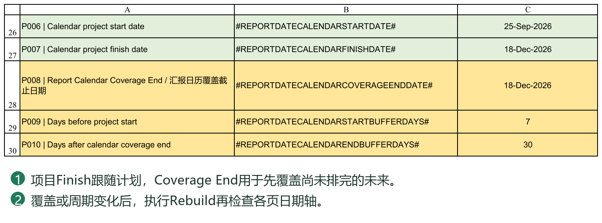
4.4 汇报周期与 Report Period Calendar 重建
报表日历回答“在哪些日期登记和汇报进度”，不等于任务排程使用的工作日历。
按项目要求选择并设置汇报规则：
每日或固定天数间隔。
每周指定星期。
每两周一次，以固定日期为锚点。
每月固定汇报日。
月末汇报。
可同时启用多个规则，系统合并日期、去除重复并按先后排列。双周锚点用于确定每14天的节奏，并不是每次汇报都重新填写一个日期。
开始／结束缓冲天数用于在项目范围前后增加日历覆盖；安全数量上限用于防止误生成过多周期。日历越密、覆盖越长，需要的时间轴列越多，不宜仅为“保险”而无限放大范围和上限。
设置完成后，执行 Rebuild Report Period Calendar for Project Control／VDR／Dashboard Data。
此操作统一重建：
Project Control 的进度输入日期。
VDR 的 Baseline Schedule、Re-schedule 及 Actual Progress 日期。
Dashboard Data 的曲线数据日期。
它不代替甘特图表头生成，也不会自动发布 VDR Planner 的文件计划。
确认窗口会列出生成日期的首尾、周期数量及影响区域。核对无误后再继续，等待执行结束。
已有项目修改日历时必须谨慎：同一汇报日期仍存在时，系统会保留相应已有值；但被取消的日期不能视为自动迁移到了其他日期，多余时间轴列也可能被移除。先备份，再重建和核对历史数据。
什么时候需要重建，什么时候不需要
需要：初始化项目、调整汇报日期规则、延长覆盖范围，或发布节点已经超出时间轴。
通常不需要：仍在现有日期范围内修改某任务Duration或Predecessor、登记本期Actual、单纯切换Rpt. Basis。
需要另做的操作：重建报表日历不等于重算文件实际历史、不等于发布Planner，也不等于重画甘特图。各项输出应按相应章节处理。
核对时同时查看PC、VDR和Dashboard Data的时间轴，不只检查Settings里的结束日期。日期已经生成但尚未发布文件计划，进度区域为空可能是正常的待完成步骤。
4.5 Vendor／Client 工作周、假日及 D／ED
工作日历回答“哪些日子可以计入工作天数”。Vendor 和 Client 可以使用不同的休息日及假日。
工作周
工作周使用7位文本，依次对应星期一至星期日：0表示工作日，1表示非工作日。
0000011：星期六、星期日休息。
0000001：仅星期日休息。
0001100：星期四、星期五休息。
必须保留全部7位，包括前导零；不要将其作为普通数字输入后变成1或11，也不能设置为全部非工作日。
假日
在 Vendor／Client 各自的 Holiday Start 与 Holiday End 标识所界定的日期区域内，填写有效的 Excel 日期。需要更多假日时，应在对应起止边界之间扩展区域，保留边界 Token，不要将日期随意写到区域之外。
工作周定义每周重复的休息日，假日列表补充节假日或项目约定的停工日期。两者共同决定 D 的计算。
D 与 ED
D：按所选工作日历计算，跳过其休息日和假日。
ED：按自然日计算，不跳过休息日和假日。
例如，某任务周五开始，周六、周日休息且没有额外假日，工期为3D时通常到下周二；工期为3ED时则到周日。这里按任务工期首日计入的口径举例，不能直接套作 Predecessor Lag 的计数说明。
PC 普通任务的 D 使用系统配置的 Vendor 工作日历；VDR Planner 的审查与重新提交周期则分别使用 Client 和 Vendor 日历，并结合各周期自己的 D／ED 设置。任务工期单位与前置关系中的 Lag 单位是两项设置，不能仅修改其中一个就认为全部日期口径都已改变。
日历应尽量在排程前配置。执行中的项目修改日历后，应核对排程及计划进度，并按需要重新发布文件计划、刷新曲线和甘特图；已发布的数据和静态图片不会因此全部自动更新。
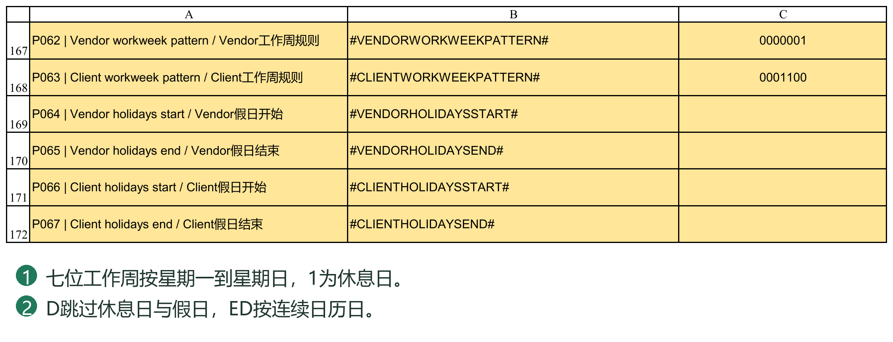
4.6 初始化操作顺序与完成检查
推荐顺序如下。它是业务先后关系，不依赖 Settings 中按钮恰好排列在哪一行。
1. 建立独立项目目录及工作簿副本，进入 Full，保留初始化前备份。
2. 按需要清理旧文件记录，检查保留下来的计划、实际进度及报告内容。
3. 填写项目基本信息、参与方、文件路径、进度规则和工作日历。
4. 导入新项目文件清单；有 WBS 层级时核对分组与文件任务，没有设计文件时导入空清单。
5. 确认 PC 的 WBS 0、项目开始日期及日历覆盖结束日期，设置汇报规则并重建报表日历。
6. 在 VDR Planner 编制文件日期和计划进度，再发布到选定的 Baseline 或 Re-schedule 区域。
7. 在 Project Control 完善采购、制造等任务、逻辑关系、工期及权重，核对总体计划。
8. 若排程超出日历范围，重新重建日历；核对相关计划进度，再配置并刷新看板、曲线及报告。
关键顺序是：先让汇报日历就位，再发布 VDR Planner 的计划进度。不需要等全部 PC 计划排完才第一次建立日历。
开始正式登记前，至少检查以下内容：
项目名称、编号和参与方无旧项目残留。
WBS 0 启动日期有效，汇报时间轴覆盖所需范围。
Vendor／Client 工作周和假日正确，工期及周期单位符合项目约定。
VDR、VDR Planner 和 PC 的文件清单一致，分组行没有被当作文件。
普通任务及设计文件权重合理，进度规则符合合同或项目约定。
旧实际进度、历史曲线和报告说明已按新项目要求处理。
执行 Check Document Lists 和 Check System Consistency，阅读报告并处理影响正式使用的问题。
系统检查可以发现配置或数据关系异常，但不能代替用户审核计划和进度规则的业务合理性。完成初始化并保存备份后，即可进入计划维护和项目执行。
第5章 维护 WBS Task ID 权重与层级
5.1 WBS、Task ID、父任务与叶子任务
WBS No.：任务的层级位置
例如，2表示采购阶段，2.1表示其下某采购包，2.1.1表示该采购包的具体工作。WBS 0是整个项目的总任务。
同一项目中，WBS No.应唯一，子任务放在对应父任务下方并连续排列。不能只靠字体、颜色或缩进判断层级；这些是显示效果，WBS编号才是系统识别层级的重要依据。
Task ID：前置关系使用的任务编号
Task ID由系统按任务排列维护，不是Excel行号，也不是WBS No.。填写Predecessor时，必须使用Task ID。
例如，WBS 2.1.1的Task ID为18，引用它应写18FS，而不是2.1.1FS。Excel左侧行号仅表示单元格所在行，不用于建立任务依赖。
父任务与叶子任务
父任务（Summary）：下方还有属于它的子任务，用于汇总阶段日期和进度。
叶子任务：不再包含子任务，是实际编制工期和依赖关系的工作项。
普通父任务的Start与Finish由子任务汇总；WBS 0的Start另作项目启动锚点，具体规则见6.3。
设计文件任务
从文件清单导入的实际文件任务会带有相应文件标识及Design Doc.属性；专业或设备分组行不是文件。不要把普通采购任务标为设计文件，也不要通过覆盖文件编号将已有文件任务随意改为另一份文件。
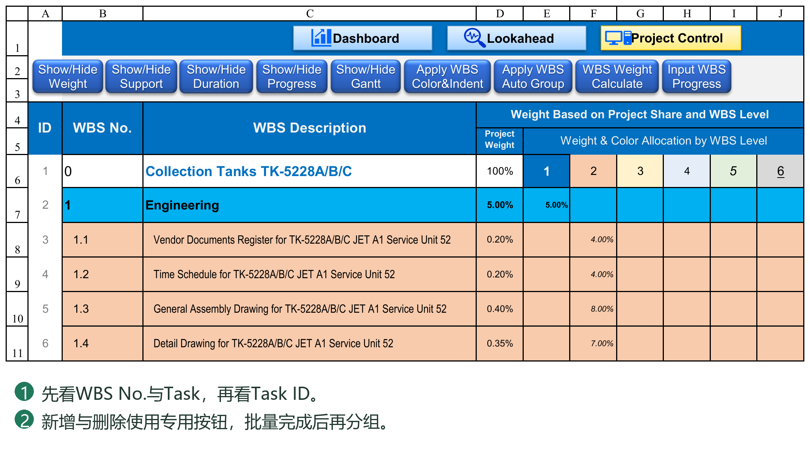
5.2 新增、删除任务及依赖关系维护
新增任务
优先使用PC的新增WBS任务行工具，而不是复制含有旧业务数据的整行再插入。
1. 选中插入位置；新行插在所选行上方。项目总任务不能被挤到任务区之外。
2. 输入需要增加的行数并执行。
3. 在新行填写WBS No.、Task Description及相关计划信息。
工具会建立所需行结构和公式，预留Task ID，并调整已有Predecessor中的编号。填写这些预留行时，不需要每输入一个名称就手工刷新全部编号。
例如，原Task ID 20被其他任务引用为20FS，在它前面新增两行后，它的新ID变为22，相关引用应随之变为22FS。关系仍指向原来的任务，而不是留在旧数字上。
删除任务
建议使用删除WBS任务行工具，先阅读受影响任务及关系的预览，再确认。删除父任务时应选择完整分支；若只想移除父级而保留子任务，应先重新安排子任务的WBS层级。
删除后，系统重排剩余Task ID并调整引用：
被删除任务是唯一前置任务：相应Predecessor会变为空。
同一任务有多个前置任务：移除指向被删任务的项，其余关系保留并更新编号。
多个任务引用被删任务：分别处理各自的关系。
例如，原关系为10FS,15SS+2D，删除Task ID 10后，指向15的关系不会一起删除；但15可能因重排而取得新编号。
关系被清除后，应重新审核后续任务的Start和逻辑，不能把“编号已修复”理解为“业务计划已经自动重新设计”。
注意事项
不手工修改Task ID；直接编辑会被系统纠正。
避免只排序部分列，导致任务名称、日期、权重与Predecessor错位。
设计文件在PC中的删除不会同时删除VDR Planner清单，后续发布可能重新带入；正式调整文件清单应使用Import流程。
任务增删后，检查受影响关系并执行系统一致性检查；批量操作不能依赖Ctrl+Z恢复。
5.3 权重、Auto Group与层级样式
任务权重
权重表示任务对项目或其父级工作的贡献，不等同于工期长短。应依据项目管理口径，例如工作量、成本或合同约定分配。
分层权重按父子关系逐级折算。同一父级下的直接子任务权重通常应合计100%。例如，Engineering占项目20%，其中某项文件工作占Engineering的50%，其项目总权重为10%。
填写或调整权重后，执行相应的权重计算工具，核对总权重及上层进度。不要把层级权重和折算后的项目总权重重复相加。
Auto Group Tasks
根据WBS层级建立或刷新展开／折叠结构，并配套执行任务编号及汇总排程的检查刷新。新增任务、改变WBS或调整层级后，可执行该工具，使折叠关系与当前任务结构一致。
Auto Group不替用户判断WBS是否合理，也不会替用户分配任务权重。
Apply WBS Color & Indent
按层级样式参考单元格应用背景色、缩进及字体。字体颜色、大小、加粗和斜体用于WBS No.与Task Description；下划线仅用于Task Description，权重区域不套用这些字体属性。
样式仅用于识别层级，不改变任务依赖或进度。不要用手工调整缩进替代WBS编号维护。
5.4 一次增加多行任务的操作
在待插入位置选中一行，点击 Insert WBS Task Rows，输入1—500的整数。新行插在所选行上方；项目总任务上方不能插入，追加时可选择实际末行后的第一空行。
系统带入配置区域所需公式、格式和验证，预留 Task ID，并重映射已有 Predecessor。它不应把被选任务的名称、日期和进度当成新任务复制。随后批量填写 WBS No. 与 Task，完成后执行一次 Apply WBS Auto Group。
不要为了保留右侧公式反复复制整行。也不要手改预留 Task ID。核对插入点前后的 ID 顺序、原有前置任务指向的任务名称，以及新任务的层级和权重。
5.5 删除前如何判断依赖影响
在 PC 选中一行或一块连续任务行，点击 Delete WBS Task Rows。一次支持1—500行，不允许删除项目总任务。先看删除预览及依赖影响，再确认。
被删除的任务若是多个任务的前置任务，各引用都应删除该关系；若某个后续任务同时引用多个前置任务，只去掉被删除的部分，保留其余关系并按新 ID 改写。
例如某任务原来引用“8FS,12SS+2D”，删除原 Task ID 8 后，应保留原任务12所代表的关系，并随编号变化改写它，而不是清空整格。删除后只剩空 Predecessor 的任务需要检查：它不再由已删除关系驱动，但原有日期不是新的逻辑依据。
删除属于结构修改，不依赖 Ctrl+Z 恢复。取消删除确认不应改变任务或关系。删除设计文件任务不会反向删除 Planner 中的文件，应再执行文件清单一致性检查。
5.6 样式分组与权重不是同一个操作
Apply WBS Color&Indent 读取层级样式样本，设置 WBS No. 和任务描述的背景及缩进，并传递字体颜色、字号、加粗、斜体。下划线只赋给任务描述，不赋给 WBS No. 或权重数字。调整层级样本后需再次执行本命令，单改样本不会自动重涂所有任务。
Apply WBS Auto Group 重建 WBS 行分组和配置的列分组，并刷新相关结构与汇总。它不是单纯涂色，也不是新增任务。完成一批增删或层级修改后再运行，不必每填一个任务运行一次。
WBS Weight Calculate 根据本层及各父层权重计算总权重。修改层级百分比后需重新计算，检查同一父任务下子任务权重合计及项目总权重。不要把总权重公式结果手填成另一百分比。
第6章 编制日期工期与前置关系
6.1 Start、Finish、Duration与Unit
普通叶子任务
Start为开始日期，Duration输入数字，Duration Unit单独选择D或ED。系统根据Start、Duration和Unit计算Finish。
3与D：三个工作日。
3与ED：三个自然日。
不在Duration数字列直接填写3D或3ED。
工期计算包含任务首日。没有假日且周末休息时，周一开始、5D的任务于周五完成。零工期可表示日期节点；不要把空白工期当作零工期。
Baseline和Re-schedule的Unit分别设置，修改一套并不等于修改另一套。父任务也按自身Unit从汇总Start和Finish计算跨度，不是把子任务Duration简单相加。
手工日期与自动日期
Predecessor为空时，可手工确定Start；填写Duration后，Finish仍可由系统计算。因此，“手工起始日期”不等于整行完全不参与计算。
直接覆盖自动任务的Start或Finish，系统会清除对应计划中的Predecessor，转为手工日期方式并提示。手工修改Finish且Start有效时，会按Unit反算Duration。以后再修改Duration，Finish仍可能重新计算。
设计文件任务
Planner发布的是文件计划的日期、工期和关系等数据，不是让PC继续计算每一轮审查。PC中的后续调整不会自动回写Planner。文件审查周期、Code节点等发生变化时，建议回到Planner修订并重新发布。
Actual Duration
由Actual Start、Actual Finish及其独立的Duration Unit计算；D排除Vendor日历的非工作日，ED按自然日跨度计算。不要为了让Duration有数值而提前填写尚未发生的Actual Finish。
6.2 Predecessor规则、自动排程与Task Mode
基本格式
Task ID + 关系类型 + 可选的提前／滞后天数，例如：
18FS：任务18结束后，当前任务开始。
18SS+3D：任务18开始后，间隔三个工作日开始。
18SS+3ED：任务18开始后，间隔三个自然日开始。
18FS-2D：相对于通常的FS衔接提前两个工作日。
PC支持四种关系：
FS（Finish to Start）：前置任务结束约束本任务开始。
SS（Start to Start）：前置任务开始约束本任务开始。
FF（Finish to Finish）：前置任务结束约束本任务结束。
SF（Start to Finish）：前置任务开始约束本任务结束。
日级FS采用前置任务完成后的下一计数日开始，再结合Lag处理；不是默认在完成当天开始。未写Lag单位时默认D。Lag按间隔计算，不把起点作为“第1天”，与Duration包含任务首日的口径不同。
FF／SF需要本任务有效Duration，系统据此从受约束的Finish反推Start；FS／SS可先计算Start，但完整的Finish仍需相应工期信息。
多个前置任务
使用英文逗号分隔，例如18FS,23SS+5D。系统综合全部关系，采用满足各项约束所需的较晚Start。可以引用位于下方的任务，不要求前置任务一定排在上面。
禁止与限制
不能引用自身、形成循环或引用不存在的Task ID。
普通父任务不能填写Predecessor，也不能作为其他任务的前置任务。
WBS 0属于特殊启动节点，其他任务只能用SS关系引用它。
不使用中文逗号、WBS编号或Excel行号代替规定格式。
直接输入不合法关系时，系统会提示并清除无效输入。若因上游缺日期、工期或日历配置造成无法排程，应检查Schedule Issue及相关任务，不能通过反复输入同一关系解决。
实时排程
修改Predecessor、Duration、Unit或相关日期后，现有VBA排程引擎计算受影响计划并写入日期，不需要每次再点击Recalculate。日期单元格不依赖整表铺设PredecessorStart()来完成排程。
部分系统日期可能带有用于识别AUTO状态的轻量公式标记；这不代表其中保存了完整的前置计算过程。关系的正式输入仍在Predecessor列，不要通过改日期公式中的数字调整逻辑。
Task Mode
顶部Task Mode用于提示当前选中任务在对应计划下的自动／手工状态，Baseline和Re-schedule分别显示。AUTO表示系统自动生成的日期状态，MANUAL表示手工状态；空白或未排程提示不应理解为已经完成计划。
Task Mode是状态提示，不是用来切换排程方式的开关，也不代表计划已经通过业务审核。需要调整时，应修改Predecessor或日期等正式字段。
实例：Duration Unit与Lag Unit分别管什么
假设任务10周五开始，Vendor周六、周日休息，没有其他假日；任务20的Duration为3，Unit为D。
任务20填10SS+3ED：三天自然日间隔到下周一；任务20自身仍为3D，于周三完成。
任务20填10SS+3D：关系间隔跳过周末，到下周三；任务20自身3D于周五完成。
将任务20的Unit改成ED：只改变它自身工期口径，不会把Predecessor文本中的3D改成3ED。若起点或目标落在非工作日，还应核对系统按工作日历处理后的实际日期。
多个关系的例子：10FS,15SS+3D。若两项关系分别要求周二和周四开始，当前任务采用周四，不把两项天数相加。
手工与自动混用的操作
1. 固定交付日期的任务可以不填Predecessor，手工输入Start，再填写Duration及Unit。
2. 后续任务引用该任务的Task ID，仍可自动排程。
3. 想改变自动逻辑时，优先改Predecessor、上游日期或Duration，而不是直接覆盖自动Start。
4. 确需改成手工日期时，阅读清除关系的提示，再核对后续引用该任务的任务。
输入后没有日期时，先区分“关系非法”和“输入不足”：自身／循环／不存在ID需修正关系；FS上游缺Finish需修正上游；PC的FF／SF缺本任务Duration需补工期。Planner的FS／SS不要求先有本任务Duration，详见10.2。
6.3 WBS 0、父任务日期与进度汇总
普通父任务
Start取子任务中的最早开始日期，Finish取最晚完成日期；Duration再按父任务Unit计算。并行子任务不会将父任务工期简单累加。
例如，两项子任务分别在同一周的周一至周三、周二至周五执行，父任务跨度为周一至周五，而不是两项工期之和。
WBS 0项目总任务
Start：作为项目启动锚点，可手工输入，也可由有效Predecessor驱动。
Finish：按下属任务的最晚完成日期汇总。
Duration：按其Start、汇总Finish及Unit计算。
因此，WBS 0的Start不强制等于所有子任务最早Start。若某项准备工作早于正式项目启动，应审核其业务含义，而不是假定系统会自动改动项目启动日期。
WBS 0也不能形成循环。例如，项目启动引用某任务，而该任务又通过SS依赖项目启动，这种闭环无效。其他任务引用项目启动时使用其实际Task ID，不将数字1永久写死。
父任务由子任务驱动
不要通过手工覆盖父任务Start或Finish调整整个阶段，后续排程或结构刷新可能重新汇总并覆盖该值。要改变阶段时间，应调整相应叶子任务。
修改WBS及任务结构后，系统维护汇总关系；执行Auto Group还会配套刷新。父任务日期自动汇总与父任务进度按权重汇总是两回事：日期跨度正确，不代表权重就已正确。
为什么父任务手工改日期后又被改回
普通父任务是子任务的汇总，不是控制整个分支的拖动开关。排程或层级刷新会重新汇总，因此手工写一个较晚Finish并不能让全部子任务一起顺延。应修改实际执行的叶子任务，或其依赖与工期。
WBS 0与普通父任务的区别
普通父任务Start取下属最早Start；WBS 0保留项目启动锚点。设置WBS 0的前置关系时，采用当前支持的SS规则，并核查不存在依赖闭环；不要直接套用普通父任务规则，也不要假设它支持任意FS／FF／SF组合。
例如，项目启动锚点依赖“PO Effective”，其他文件又通过Project Start安排提交。PO Effective本身不能再依赖这个项目启动锚点。需要业务上“PO完成后一天开始”时，先将相关启动节点设计为有效日期及允许的SS间隔，不用模糊编号或循环关系代替。
父任务Duration表示其Start到Finish的跨度。两个子任务并行各需5D，父任务不一定是10D；父任务选择ED时包含周末，选择D时排除Vendor非工作日。日期跨度和进度权重各有自己的计算口径。
6.4 用一个例子分清工期和 Lag
假设 A 的 Finish 是星期五，任务 B 的 Duration 为3、Unit为D，Predecessor 为“8FS+2ED”。关系中的2ED控制相对前置节点的偏移；B 的3D控制 B 自己从 Start 到 Finish 需要多少工作日。它们是两个独立参数，可以采用不同单位。
换成“8FS+2D”只改变 Lag 的计日方式，不会自动把 B 的 Unit 改成D；把 B 的 Unit 改成ED也不会把关系中的2D改成2ED。
排程日期应检查关系类型、Lag 单位、任务自身 Unit、工作周及假日，而不能仅看 Duration 数字。不要把工期跨度与开始到节点的偏移天数混为一谈：工期通常包含首日，偏移表示向后或向前走多少天。
6.5 Task Mode 是状态显示而不是切换开关
顶部 Task Mode 显示当前选中任务的状态，PC 的 Baseline 与 Re-schedule 各自显示，Planner 另有一处显示。Re-schedule 未展开时，不需要借该状态判断 Baseline。
AUTO 表示系统生成的自动日期；MANUAL 表示人工日期或非系统自动公式；UNSCHEDULED 表示尚未形成计划。系统自动日期可能显示为带有 N("PMS_AUTO") 的公式；N 对文字返回0，不改变日期值，只保留系统来源标识。
Task Mode 不代表业务计划一定正确。人工用一个公式恰好算出同一日期，不等于系统识别的自动排程；单凭 Finish减Start等于Duration也不能证明依赖关系已被执行。修改父任务日期后，汇总刷新可能再次按子任务恢复，见6.3。
第7章 管理 Baseline、Re-schedule 与 Actual
7.1 Baseline、Re-schedule与Actual
Baseline
用于保存原始或经确认的基准计划，作为比较依据。计划正式批准后，建议保留备份，并避免将日常预测调整直接覆盖到Baseline。
Re-schedule
用于保存修订计划。它有独立的Start、Finish、Duration、Duration Unit及Predecessor，不需要与Baseline共用同一套关系。
Actual
用于登记已经发生的开始、完成及实际进度。实际值不能用计划日期或计划进度代填。
Rpt. Basis
选择Baseline或Re-schedule，决定相关汇总和展示采用的计划依据，并控制修订计划区域的显示。切换Basis本身不会将一套计划复制到另一套，也不会清除另一套数据。
Baseline并非永久锁死的审批快照，用户仍可能编辑；应通过管理约定和备份保护正式基准。选择Re-schedule前，应确认所需任务已具备有效修订计划，不要假定缺失数据会全部自动沿用Baseline。
VDR Planner发布时，同样要明确选择目标计划，不能将“当前正在修订”理解为必须发布到Re-schedule；在初步编制阶段，用户仍可按需要重新发布Baseline。
切换、修改与发布不是同一件事
切换Rpt. Basis：选用已有的一套计划进行比较和显示，不产生新计划。
修改PC的Baseline字段：改动Baseline；另一套关系、日期及Unit不是联动副本。
修改Planner：改动正在编制的一份文件计划；尚未发布时，不等于VDR和PC已取得新结果。
发布到Baseline或Re-schedule：将Planner结果写入所选目标，覆盖该目标中的相应文件计划字段。
示例：Baseline保留6月30日的文件完成计划，Planner修订为7月15日。若应保留原基准，则把修订结果发布到Re-schedule，并写入其计划进度。切到Re-schedule后用于比较的是修订计划；切回Baseline仍应看到原基准。若误点Baseline发布，切换下拉框不能撤销覆盖。
两套计划共用同一份任务和文件清单、WBS及实际执行事实，不是两个完全隔离的项目。独立的是相应计划字段和计划进度存储；增删任务、调整权重或修改共享工作日历，仍应核对两套计划的影响。
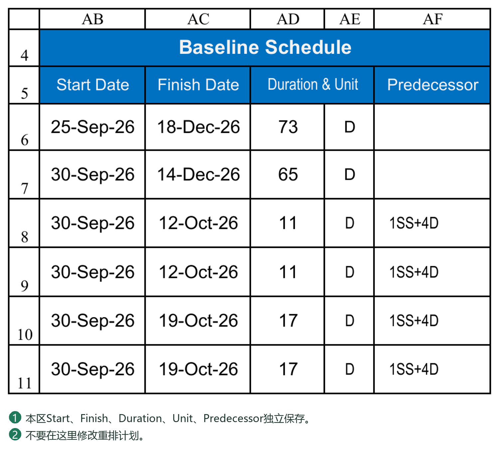
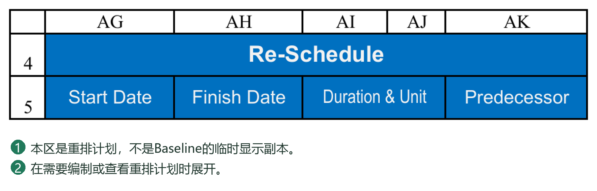
7.2 实际进度输入
先确认当前Report Date，再更新本期实际情况。汇报日期影响截至该日的计划进度和偏差判断，不能仅为了让图表好看而随意改变。
普通任务
按实际完成情况登记Actual Start、Actual Finish和相应汇报日期下的实际进度。未开始与尚未填写要区分；0%是明确的零进度，空白可能表示未登记。
进度应按项目认可的计量规则填写，不一定等于“已经过去的天数÷计划工期”。例如采购可按询价、下单、到货等节点评价，制造可按实际工作量或里程碑评价。
设计文件任务
文件实际进度由VDR的提交、审查Code及项目进度规则提供。应优先在VDR中维护真实记录并执行所需进度计算，不要在PC公式区域覆盖一个百分比来掩盖源记录问题。
父任务及项目总进度
由下属任务进度与权重汇总，不应重复手工登记。实际完成日期和100%也应核对一致，避免“已经全部完成但仍无完成记录”等矛盾。
计划进度与实际进度
普通叶子任务的计划进度结合Start、Finish、Report Date和D／ED计算；设计文件采用VDR计划进度。实际进度则来自执行记录，不是系统按日期推测完成情况。
输入百分比时应使用20%等明确格式，避免把20误当作20%。出现#N/A或#VALUE!时，应检查日期、Unit、文件匹配、权重及上游记录，不要简单把错误全部替换为零。
PC当前进度更新后，Dashboard Data的历史记录、静态曲线图片和已生成报告仍需按流程更新，详见第16至18章。
7.3 切换显示与改写数据的区别
在 PC 选择 Baseline 或 Re-schedule，会切换报告计划口径并控制相应区域显示，不把一套数据复制成另一套。两套 Start、Finish、Duration、Unit、Predecessor 和相关设计节点间隔各自保存。
如果没有正式的 Re-schedule，保持 Baseline。历史残留的 Re-schedule 不应被当成已批准的计划。要建立新计划，应先编制、核对，再明确选择发布目标。
Actual Duration 有独立的 Unit，按实际日期和该单位计算，不会因为切换 Basis 就变更实际完成事实。Baseline／Re-schedule 的工期单位也应分别核对。
第8章 生成和阅读甘特图
8.1 甘特图生成、阅读与刷新
甘特图用于在日期轴上查看任务计划与实际执行情况，目前采用按天的时间轴和静态绘制方式，不提供Project式的天／周／月时间尺度切换。
生成与更新
1. 确认任务日期、Unit、实际进度、Report Date及Rpt. Basis。
2. 首次使用或时间范围变化时，生成／更新甘特图表头。
3. 执行甘特图绘制或刷新工具，生成当前数据对应的图形。
4. 检查图例、日期范围及显示的生成依据。
选择Baseline时按Baseline计划绘制，选择Re-schedule时按修订计划绘制；D／ED参与相关日期和进度位置判断。实际信息仍需来自真实登记，不能用计划条代替实际完成判断。
静态图的边界
改变Basis、Report Date或任务计划后，原甘特图不会始终自动重画。状态区域显示上次生成所使用的Basis和汇报日期；出现刷新建议时，应按需要重新生成。即使未弹出提醒，任务数据已经变化时也应在对外使用前刷新。
展开与折叠
展开甘特图时，系统切换到便于查看的聚焦布局，折叠部分权重、支持及进度区域；关闭后恢复PC默认布局，而不是逐项还原用户之前的所有临时展开状态。甘特图打开时可使用任务定位辅助浏览。
阅读图形时，以工作簿提供的图例为准，区分计划、实际及偏差信息。不同颜色或纹理不能仅凭直觉解释，筛选和隐藏也不等于删除任务。
甘特图属于输出视图，不是独立的计划数据源。不要直接给图形区域手工填色代替排程，也不要通过删除整片日期列来缩小显示范围。项目周期较长时，按实际需要设置覆盖范围，避免无意义地生成大量日期列。
本章操作完成后，PC应形成层级清晰、权重合理、日期与依赖有效的总体计划。设计文件计划的详细编制与发布方法，将在第10章介绍。
8.2 甘特图按钮的正确顺序
先设置 PC 的 Basis 和汇报日期，确认 Start／Finish／Duration／Unit 与实际进度正确；再打开 Show/Hide Gantt，执行 Create Gantt Header，之后执行 Build Gantt Chart。
Create Gantt Header 建立日尺度日期表头及绘制范围，不代表任务条已重新绘制。Build Gantt Chart 使用当前计划口径与数据绘制静态甘特图；表格数据修改后，应重新生成需要的图形。
查看甘特图状态区记录的生成 Basis 和 Report Date。切换 Basis 后出现刷新询问时，可以选择重新生成，也可以暂时保留旧图；保留时不能把旧图理解为新 Basis 的结果。日、周、月是报表周期选项，不意味着当前甘特图可切换周／月尺度。
展开甘特图会压缩左侧可见区域，折叠 Weight、Support 和 Progress 以便查看；折叠甘特图后恢复 PC 默认工作视图。需要调整列宽时先确认没有误改结构区域。
第9章 导入和更新设计文件清单
9.1 导入字段及带层级清单的填写
按VDR Import现有表头填写，粘贴时使用数值／文本结果，不带入源工作簿公式，也不覆盖导入表头。
文件行至少填写Vendor Document No.和Vendor Document Title。文件编号是匹配与历史恢复的重要依据，应保持完整、唯一，避免前后空格或随意改号。文件标题也应按清单校验要求填写，避免重复造成歧义。
Document Weight、Discipline、By Whom、Doc Size及First／Final POI等字段，按项目约定和页面说明填写。缺少权重或专业可能影响后续汇总，不能把“允许导入”理解为信息已经充分。
平面清单
不需要专业或设备分组时，可使用平面文件清单。不要为了填满栏目而随意填写WBS分组字段。
带层级清单
需要按专业、设备或其他类别组织设计文件时，同时填写Project Control WBS与WBS Group Description：
分组行：填写WBS和分组名称，不填写Vendor Document No.、文件标题及其他文件业务字段。
文件行：填写WBS、文件编号、标题及相关属性，WBS Group Description留空。
父级在前，子级紧随其后；WBS唯一，分组必须包含子项，文件必须为叶子任务。
不在有效清单中间插入完全空白行。
例如，Settings中的Engineering根WBS为1时，可组织为：
ID 1｜WBS 1｜分组：Engineering
ID 2｜WBS 1.1｜分组：结构专业
ID 3｜WBS 1.1.1｜文件：DOC-001／结构总图
ID 4｜WBS 1.1.2｜文件：DOC-002／基础荷载图
ID 5｜WBS 1.2｜分组：电气专业
ID 6｜WBS 1.2.1｜文件：DOC-003／电气负荷表
Engineering根编号及名称应与Settings对应参数一致，上述1和Engineering仅作示例。
导入ID
带层级清单的ID表示全部有效导入行的顺序，包括分组及文件。可以整列留空交由系统处理；如果填写，必须从1连续编号，不能只填部分行。
导入ID、正式VDR的文件序号及PC的Task ID不是同一用途，不能要求三张表的数字始终完全相同。系统会将实际文件任务标记为Design Doc.=Y，分组不会作为文件写入VDR；不是预先在PC某行填Y才会导入。
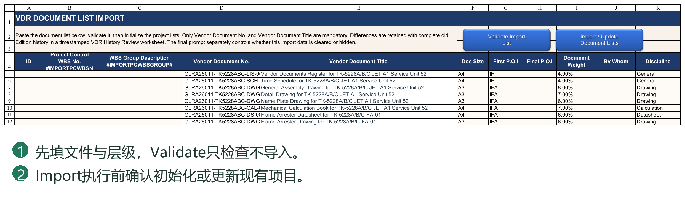
9.2 新项目初始化与空清单导入
执行Import／Reset Document List后，先阅读当前数据统计，再选择导入方式。当前提供Initialize New Project与Update Existing Project两种业务模式，Cancel表示不执行。
Initialize New Project
用于清理旧文件记录后的新项目，重建VDR、VDR Planner和PC设计文件任务，不恢复旧Round登记及文件计划／实际进度历史。
若检测到VDR往来、GDR或Transmittal记录，新项目模式可能不可用。应先确认是否确为新项目，再按第4章使用Clear Existing Document Records；不能为了让按钮可用而清掉正在执行项目的历史。
空清单
没有Vendor Document List时，可清空导入数据并执行空清单导入。系统要求输入EMPTY VDR确认，然后移除PC中相应设计文件任务，并清理VDR／Planner文件清单及相关进度历史；页面可能保留一行空白公式模板，不表示还有一份真实文件。
空清单是明确的业务决定，不是“暂时不导入”。在已有项目误执行，会影响现有文件及其历史数据，应先备份并核对提示。
完成导入后，继续设置项目锚点及报表日历，再编制和发布文件计划，顺序见第4章。
9.3 更新现有项目、恢复历史及用户计划
Update Existing Project用于执行中的项目调整文件清单或层级。它重建相关清单，再按Vendor Document No.恢复能够匹配的原数据，包括：
VDR各Round提交／返回登记及相关历史。
VDR Baseline、Re-schedule及Actual Progress历史。
Planner的用户规划输入。
PC设计文件的相关计划及历史数据。
Transmittal Register中能够匹配的VDR关联信息。
恢复按文件身份匹配，不是按新旧行号照搬。重建层级后，Task ID及Predecessor需要相应转换；文件从一个专业组移动到另一个组，不应仅因行号变化就继承另一份文件的历史。
不同变更的含义
同编号、同标题：通常可按原文件恢复。
同编号、改标题：仍可按编号关联，但应检查标题差异及归档链接。
新增编号：作为新文件，不应期待已有历史。
旧编号从新清单消失：对应文件不再保留在新清单中，需核对差异及未恢复记录。
修改编号：通常会表现为旧文件移除、新文件加入，不能假定标题相同就自动继承全部历史。
导入不会移动或删除已有Documents／Transmittal归档目录。标题、序号或清单层级变化后，也不能假定物理文件夹已经自动重命名。先核对保留的历史链接，再执行后续文件操作。
更新完成后，应检查两套计划、文件历史、任务关系及Register关联，而不只是看文件数量是否正确。普通采购、制造任务不属于设计文件清单的重建对象，但它们引用设计文件的关系仍可能受文件增删影响。
9.4 差异Review Sheet、备份与导入核对
两种导入模式都会在修改文件行前创建自动备份。记录完成提示中的备份路径，不要将其与文件归档Backup目录的业务内容混淆。
更新时如存在差异或不能自动恢复的记录，系统会生成可见的Review工作表，供用户核对新增、移除、标题变化及未恢复内容。Review不是一个已经替用户完成判断的“修复结果”，也不能代替完整备份。
建议依次核对：
1. 新增、移除和改名是否符合本次变更意图。
2. 旧Round登记、链接、Planner输入和计划进度是否恢复到正确文件。
3. 未匹配的Transmittal记录及无法恢复的数据应如何处理。
4. PC层级、Design Doc.标识、Task ID和前置关系是否正确。
5. 执行Check Document Lists及Check System Consistency，阅读结果。
导入使用Settings结构参数定位目标字段。若提示结构Token、必要字段或模板不匹配，应按提示修复页面与配置，不能修改深层内部模板来绕过错误，也不要随意删除表头后重试。
完成窗口中的Yes／No／Cancel用于决定是否清空导入数据、是否保留导入页可见，不是撤销已经完成的导入。需要回退时，应使用确认过的备份并核对项目目录。
大清单处理期间，Excel状态栏显示当前阶段。等待完成提示，避免连续重复点击导入按钮或在处理中关闭Excel。
9.5 Validate 和 Import 的区别
Validate Import List 用于先检查清单的必填项、编号、层级及重复等问题，不等于已经把清单写入 VDR、Planner 和 PC。先验证，修正提示项，再使用 Import / Update Document Lists 执行所选导入模式。
初始化模式面向新项目，不能用于给已有项目补几份文件。更新模式按正式 Doc No. 对应现有文件，在保留与恢复历史和计划的机制下处理差异；更改 Doc No. 可能被识别成旧文件删除和新文件增加，不是自动更名。
执行前阅读模式、差异清单和备份说明；结束后核对新增、保留和删除的文件、WBS父层、Task ID 与关系。不能只看导入条数一致就认定正确。
第10章 使用 VDR Planner 编制文件计划
10.1 文件清单与Project Start锚点
文件清单来自VDR Import，与VDR及PC中的设计文件任务关联。通常不在Planner里另行手工增加一套文件清单；增删文件或改变文件编号，应通过清单导入流程处理。
Planner文件区不包含专业、设备等WBS父级分组。文件Task ID可能因PC插入分组或普通任务而不连续，不应为了视觉整齐将其手工改成1、2、3。
Project Start锚点
文件数据区上方的Project Start读取PC中WBS No.为0的项目总任务信息，包括实际Task ID及当前计划依据下的Start，不把Task ID固定为1。
该行是启动节点，不是设计文件：不计入文件数量，不作为文件发布，也不填写审查Code。不要将它改成文件清单的第一份文件。
例如，Project Start的Task ID为1，文件可填写1SS或1SS+5D；若显示的ID不是1，应使用实际ID。
编制或发布前，确认PC的Rpt. Basis与准备使用的计划一致，并核对锚点日期。若没有WBS 0、Task ID无效或Start为空，应先在PC处理，不要随意给锚点填一个日期掩盖问题。
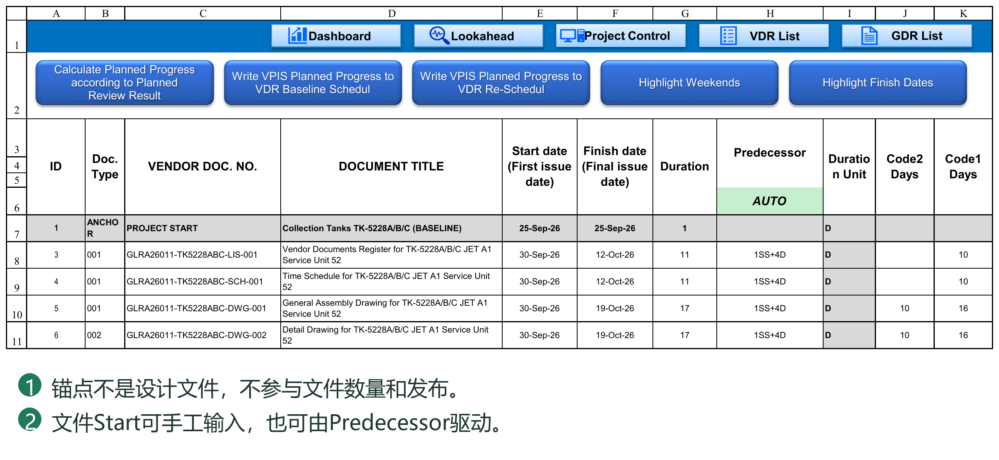
10.2 手工日期与Predecessor排程
手工计划
Predecessor为空时，在Start填写首次提交日期。适用于已约定的交付日期，或不需要建立依赖关系的文件。
自动计划
在Predecessor填写Task ID及关系，例如18SS+10D。系统据此计算Start；Start变化后，右侧计划节点日期随公式更新，再得到Finish、Duration及Code间隔。
Planner支持：
FS、SS。
正负D／ED间隔。
多个前置任务，以英文逗号分隔。
向上或向下引用其他设计文件。
引用Project Start锚点。
不支持FF、SF，也不引用PC中的采购、制造等普通任务。需要与这些任务整合时，在计划发布到PC后建立完整项目网络。
Planner的Duration是日期规划的结果，不是计算FS／SS Start的前提。不能因尚未算出Duration就认为不能填写Start或Predecessor；但FS关系的上游文件必须已有有效Finish。
自引用、循环、无效Task ID或不支持的关系会被提示并清除相应无效输入。手工覆盖自动Start，会清除该行Predecessor并转为手工计划。直接编辑和自动排程可以混合使用。
10.3 提交、审查、重提周期及工作日历
Planner设置两类周期，各自包含数值及D／ED单位：
Client Review Cycle：业主每轮审查所需时间。
Vendor Resubmit Cycle：收到审查结果后，供应商修改并重新提交所需时间。
选择D时，分别使用Settings中的Client或Vendor工作周及假日；选择ED时，按自然日增加。两类周期可采用不同单位，例如业主审查10D、供应商修改7ED。
计划日期按以下顺序生成：
首次提交 → 业主首次审查返回 → 供应商修改并重提 → 业主第1轮审查返回 → 供应商再次修改并重提 → 业主第2轮审查返回……
首次返回日期＝首次提交日期＋Client审查周期。
后续每轮返回日期＝上次返回日期＋Vendor修改重提周期＋Client审查周期。
两个周期按顺序分别使用各自日历，不是把天数加在一起后统一套一个日历。供应商与业主休息日不同时，这一点尤其重要。
例如，首次提交为周一，两类周期均为2D、双方周末休息且没有假日：首次返回为周三；修改重提到周五；再审查两个工作日，第1轮返回为下周二。
右侧日期链由Excel公式计算，周期设置为该Planner计划共同使用的参数，不代表每份文件或每一轮都有独立周期。修改周期会影响多份文件，应核对日期链后再发布；不要直接覆盖日期公式作为常规调整方式。
如何检查日期链
先选一份文件，逐步核对：Start首次提交 → Client首次审查返回 → Vendor重提 → Client下一轮审查返回。每一步只使用负责方的周期及单位。
例如，周一首次提交，Client Review Cycle为2D，首次返回为周三；Vendor Resubmit Cycle为2ED，重提日期为周五；Client再审查2D，下一返回为下周二。若Client下周一是假日，下一返回还应顺延。只改Vendor假日，不应把Client的审查天数也当成Vendor工作日。
Duration Unit并不是这两个Cycle Unit的总开关。它用于把最终Start／Finish表达为工期以及相应Code间隔；把文件Unit改为D，不会自动把Client Review Cycle中的ED改成D。
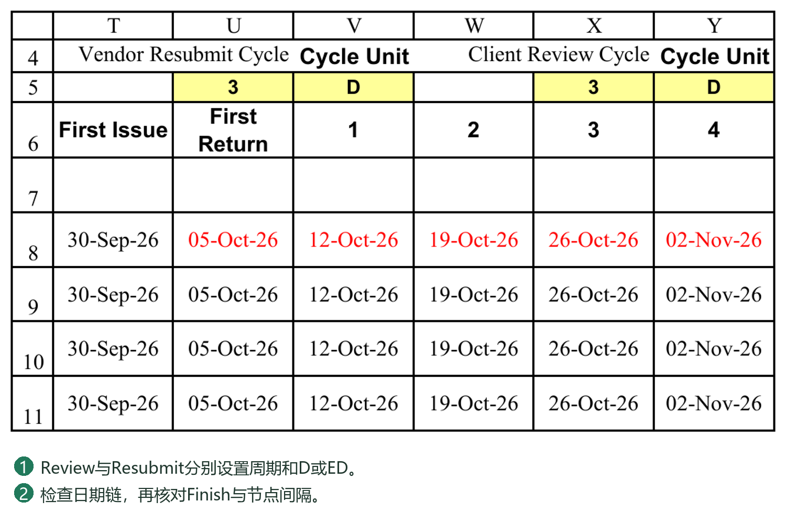
10.4 First Issue、First Return、Round与Review Code
先区分“发生什么事”与“审查结果是什么”。
First Issue：首次提交事件。
First Return：首次实际有效审查返回事件，不限定为00版的返回；实际计算还需核对相应提交和返回日期。
Round 1、2、3……：后续相应轮次的节点。在Planner的计划日期区，数字节点表示该轮重新提交后的审查返回日期，不是单独的重新提交日期。
Review Code：业主给出的审查结果，例如1、2、3，或项目约定的A、B、C等。
First Issue和First Return不是新增的业主审查Code，也不是把Code3改名。
在“各Review Code计划达到的节点”区域，列标题表示结果或事件，单元格填写预计在哪个节点达到：
首次提交事件可选择First Issue（兼容的0同样表示首次提交）。
首次返回事件可选择First Return。
Code3若计划在第1轮返回时达到，填写1。
Code2若计划在第2轮返回时达到，填写2。
Code1若计划在第3轮返回时达到，填写3。
上述数字是计划轮次，不是再次填写Code值。例如，在Code2列填2，是“第2轮达到Code2”，并不是两者必须同号。
如果Code2预计在首次返回时已达到，可在该Code列选择First Return。没有计划使用的结果节点留空；不要为了填满页面而给每个Code随意指定轮次。
Code定义及进度配置
Planner的结果列定义、Settings中的进度百分比表Code定义，以及进度计算规则中的Code定义，应保持对应一致。项目使用A、B、C时，不能只改Planner而保留其他位置的1、2、3。
事件名称与真实Review Code应明确区分。相关定义可以按项目约定配置，但不要只改显示文字而忽略关联设置。核心结构标题和定位参数也不能随意删除。
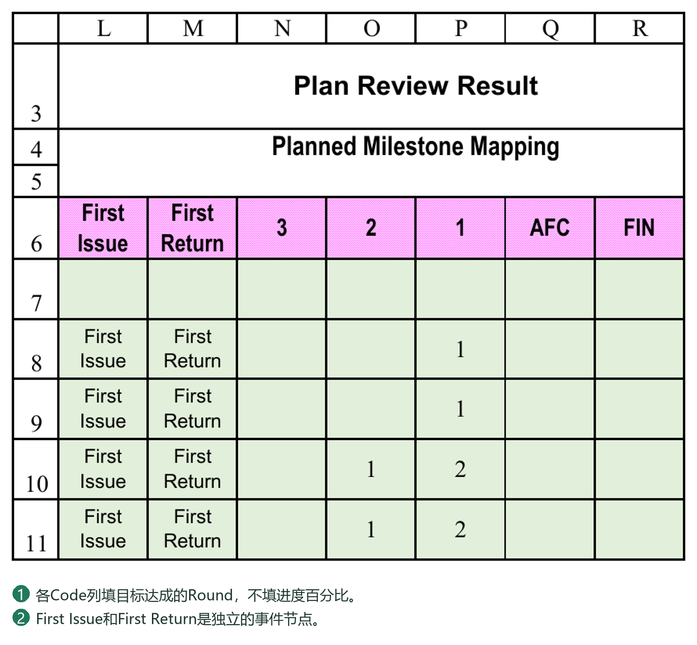
10.5 Finish、Duration及Code2／Code1间隔
Finish
由已填写的计划节点及右侧日期链确定，反映当前规划中最后的节点日期。完整文件计划通常应包含约定的最终结果，例如Code1。
如果只安排了中间审查节点，即使Finish已有日期，也不能据此认定文件已规划到最终批准。应同时检查最后节点的业务含义及计划进度合计。
Duration
从Start到Finish反算，并按该文件Duration Unit计算：ED为自然日跨度，D按Vendor工作日历计算，包含任务首日。
Code2／Code1间隔
表示从首次提交Start到指定Code达到日期的间隔，按文件Unit计算：D排除Vendor非工作日，ED按自然日计算。它是为前置关系提供的参考间隔，不是含首日的Duration，因此不是简单地统一加1。
例如，周一首次提交，周三达到Code2，期间没有假日，则Code2间隔为2D；从周一到周三的任务Duration为3D。
间隔采用Vendor日历，是为了与使用该日历的SS Lag衔接；Code目标日期本身已经包含此前Vendor和Client各自的审查、重提日历计算，并不是忽略Client假日。
引用Code节点作为下一文件起点
假设Datasheet的Task ID为18，Code2间隔为20D，GA需在其达到Code2后开始，可在GA的Predecessor写18SS+20D；若还需等待五个Vendor工作日，则写18SS+25D。
这是用户将Code间隔用于普通SS关系，系统没有把18SS自动解释为Code2。如果只填写固定的20，之后上游Code间隔变成25，Predecessor文本不会自行改成25；用户需更新，或使用正确引用间隔单元格的Excel拼接公式。
使用D／ED时应保证参考间隔与Lag单位一致。上游日期落在非工作日等特殊情况，应检查目标日期与排程结果，不能只凭天数外观判断。
10.6 文件计划进度的编制
先在Settings按项目约定定义Document Type及各事件／Code对应的累计进度，再在Planner指定这些结果预计达到的节点。
Document Type用于选择进度规则。未填写Type或未找到对应类型时，当前计算会尝试使用Undefined默认规则；应检查该默认规则是否适合项目，而不是把它当作所有文件都可以不分类。
执行文件计划进度计算后，Plan Progress区域生成各节点新增进度，而不是每格重复显示累计进度。
例如，项目约定：
First Issue累计50%。
First Return累计50%。
Code3累计50%，在第1轮达到。
Code2累计80%，在第2轮达到。
Code1累计100%，在第3轮达到。
则相应节点新增进度为：首次提交50%、首次返回0%、第1轮0%、第2轮30%、第3轮20%，合计100%。不能把50%、50%、50%、80%、100%全部作为新增值相加。
两个已设累计进度节点之间有多个中间节点时，是否分配这段新增进度，取决于该Document Type的Progress by Planned Rounds设置；这是节点间的分配，不是简单按每个自然日平均增长。
检查要点
Code对应的节点先后顺序合理。
累计计划进度不逆序下降。
类型及Code有对应配置。
完整文件计划的新增进度合计符合预期，通常为100%。
日期或Code节点改动后，应按需要重新计算Plan Progress。Planner计划进度与VDR实际进度计算是两项不同操作；计划达到某Code，不代表项目已经实际收到该Code。
计划轮次开关同时控制计划与实际
Settings百分比表（通常称P052）中，Document Type右侧的Progress by Planned Rounds按文件类型选择Y或N。它同时决定Planner如何分配计划进度，以及实际进度是否采用该轮次分配；不关闭日期排程，也不代替Code行为规则与Requires Return门槛。
Y：Planner在已设成果节点之间分配新增进度；实际提交过程可按对应分配取得阶段内进度，但仍须满足返回门槛及有效Code规则。
N：Planner只在First Issue、First Return及已安排的Code节点放入相应新增进度，中间轮次不额外分配；实际进度按Settings事件及Code规则计算，不因重新提交次数增加而递增。
例如，First Issue为40%、First Return和Code3为50%，Code3在第1轮、Code2的80%在第4轮、Code1的100%在第5轮达到。Y模式下，第2、3、4轮分别分配10%，第5轮分配20%；N模式下，第2、3轮为0%，第4轮集中分配30%，第5轮分配20%。两种模式的完整计划合计均为100%，但阶段内的计划曲线不同。
选择N仍可编制和发布日期、Baseline／Re-schedule及计划进度。切换Y／N不会自动重写已发布计划或历史记录：先重新执行Calculate Planned Progress according to Planned Review Result，检查Plan Progress，再按需要发布到选定计划；当前实际及历史的更新是另行执行的操作。具体数值与First Return边界见附录C。
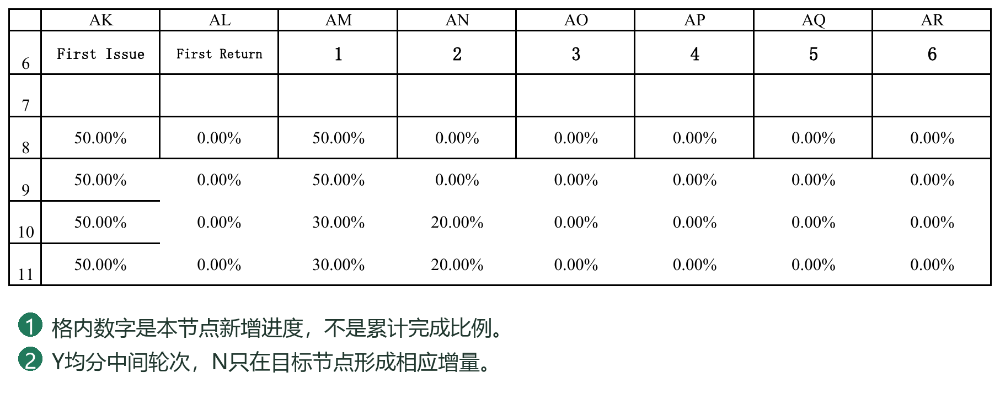
10.7 发布Baseline／Re-schedule日期及计划进度
发布前，确认文件清单一致、Project Start正确、日期及进度完整，并确认报表日历已覆盖计划节点。发布是批量写入，不是仅切换显示。
发布日期与关系
使用Publish Baseline Plan Dates to VDR & Project Control，或对应的Re-schedule发布工具。
发布日期操作会写入：
VDR所选计划的Planned First／Final Issue Date。
PC设计文件所选计划的Start、Finish、Duration、Unit及Predecessor。
PC所选计划的Code2／Code1间隔。
Duration、Unit、Code间隔及Predecessor按当前结果发布，不复制Planner内部整套日期公式。Predecessor中的Task ID会按文件匹配转换到PC当前编号，而不是盲目照搬数字。PC随后按自己的排程机制处理日期。
两套计划分别保存，发布Baseline不应覆盖Re-schedule的对应存储，反之亦然。Project Start锚点不作为文件发布，采购、制造等普通任务不是此次文件日期发布的直接覆盖对象。
未排程文件与错误计划
Start、Finish、Duration及Predecessor均为空的文件，可作为“尚未排程”发布，系统会提示，并将目标日期及相关计划字段发布为空，防止旧日期残留。
这与“已经填了前置关系但没有有效Start”不同。部分信息已填而日期、工期或Unit无效时，会阻止日期发布并列出问题，应修正后继续。
写入计划进度
另行使用Write VPIS Planned Progress to VDR Baseline Schedule，或对应的Re-schedule工具，将Plan Progress写入VDR的目标时间轴。仅发布日期，不等于已经写入计划进度。
节点新增进度写入第一个不早于该节点日期的汇报周期。例如，节点为周二、汇报日为周五，则计入随后周五；多个节点落入同一周期时合并新增进度。
该操作会重新写入所选目标计划进度区域，不是仅追加本次修改的一个节点。若时间轴不足或部分文件被跳过，应阅读提示，修正日历或数据后重新写入，不能把“执行结束”等同于“全部数据完整”。
发布后检查
VDR的目标日期与计划进度已更新。
PC设计文件的日期、工期、Unit及关系正确。
未选择的另一套计划没有被误改。
如出现警告，逐项确认文件匹配、空计划及日历覆盖情况。
10.8 发布后调整与单向同步的注意事项
正常数据方向为：VDR Planner编制 → 发布到VDR和PC。PC中的调整不会自动回写Planner，也不提供自动双向同步。
涉及文件审查周期、Code节点、首次提交或文件间依赖的修订，建议先在Planner修改，再重新计算并发布到用户选择的Baseline或Re-schedule。尚未批准的初步计划可以继续发布Baseline，不强制转入修订计划。
如果用户直接在PC调整设计文件计划，PC仍可排程，但应理解以下影响：
Planner可能保留旧Start、关系及审查节点。
已发布的Code间隔和VDR计划进度不会因此自动重编。
后续再次发布Planner，可能覆盖PC中相应设计文件的手工调整。
因此，PC日期、Planner日期和VDR计划进度不一致时，应先确定采用哪套业务计划，再修订并发布，不要反复互相复制试图消除差异。
一次完整修订示例
1. 在Planner调整GA文件的前置关系或审查周期，核对Start、各轮返回、Finish、Duration及Code间隔。
2. 若Code预计达到的节点改变，重新计算Plan Progress。
3. 决定此次覆盖初步Baseline，还是保留Baseline、发布Re-schedule；不要只凭当前下拉显示推断所点发布按钮的目标。
4. 分别完成所需的日期发布和计划进度写入。
5. 在PC核对该文件及相关采购／制造任务。PC可把设计文件纳入更完整的项目依赖网络，但不会把这些关系反向带回Planner。
6. 核对VDR目标计划，再刷新相关曲线、报告及甘特图。
为什么不双向同步
Planner中的Finish由各轮审查节点得到，Duration是计算结果；PC把Start、Duration、Unit及依赖放进总体网络。如果仅将PC修改后的Start或Duration复制回Planner，不能唯一推断用户想改变哪一轮审查、哪一个周期或哪一个Code节点。因此本版采用明确的单向发布，不自动猜测反向修订意图。
发布不会把Planner整行公式搬到PC。PC取得的是相关字段的结果及Predecessor关系文本；后续排程仍由PC自己的机制执行。保持一套明确的文件计划修改来源，才能避免再次发布时覆盖不知情的PC调整。
正式修订前保存备份，发布后执行文件清单及系统一致性检查，再按需要刷新Dashboard、曲线、报告及甘特图。检查报告用于发现差异，不会替用户决定应保留哪一套计划。
本章说明如何从首次提交日期建立文件依赖、审查节点及计划进度，并区分“正在编制的Planner”和“已发布的两套计划”。第11章解释文件识别，第12章说明VDR日常提交、接收和归档。
10.9 七个命令分别负责什么
Calculate Planned Progress according to Planned Review Result：按文件类型、Code累计进度、计划轮次和 Progress by Planned Rounds 开关生成 Plan Progress 节点新增值，不等于发布。
Publish Baseline Plan Dates to VDR / Project Control：把当前 Planner 文件计划日期、工期及关系等写入 Baseline 对应区域。Publish Re-schedule Plan Dates to VDR / Project Control 则写入 Re-schedule，不应覆盖另一套。
Write VPIS Planned Progress to VDR Baseline Schedul：把已计算的节点进度按计划日期分配到 VDR Baseline 时间轴。Write VPIS Planned Progress to VDR Re-Schedul 则写入 Re-schedule 时间轴。计划日期发布与时间轴进度写入是不同动作。
Highlight Weekends：为 Plan Date 中星期六和星期日着色。它只帮助观察日历日期，不按 Vendor／Client 自定义工作周判断所有非工作日，也不替代假日计算。
Highlight Finish Dates：把 Plan Progress 中非零节点对应的 Plan Date 日期字体标红。这些是产生进度的节点，不是只标最后 Finish。重算进度后可重新执行，以免沿用旧标记。
10.10 一次完整发布及发布后的验收
1. 检查 Project Start 锚点、所有文件 Start、Predecessor、Unit、周期参数，以及计划 Code 所在 Round。
2. 执行 Calculate Planned Progress，根据提示处理不完整行；检查关键文件的 Finish、Duration、Code节点间隔和 Plan Progress。
3. 决定本次发布到 Baseline 还是 Re-schedule，点击相应的 Publish Plan Dates。完全未排程的文件会提示并清空目标相关计划字段；部分填写却无效的计划会阻止日期发布，须先修正再重试。
4. 点击同一目标的 Write VPIS Planned Progress。检查 VDR 对应时间轴的日期覆盖及文件累计计划值。
5. 在 PC 选择对应 Basis，检查设计文件 Start／Finish、Duration与Unit、Predecessor，以及设计父层汇总；另一套计划应保持原状。
日期超过时间轴时，先延长 Report Calendar Coverage End 并重建日历，再重新写入相应时间轴。不要靠填大 Duration 绕过日期覆盖问题。
10.11 用一份文件验证计划是否编制正确
以下示例说明节点关系，不要求采用示例周期或百分比。先在第4章完成项目日历，在第9章导入清单；文件区上方的Project Start只作为锚点，不是另一份文件。
1. 选一份试排文件，确认Document Type能对应P052。Predecessor留空，手工填写首次提交Start；也可以填写项目锚点实际Task ID加SS，由锚点驱动Start。不要把锚点ID一律写成1。
2. 设置Vendor Resubmit Cycle和Client Review Cycle的数值及各自D／ED。例如两者均为7D，表示分别按Vendor、Client工作日历推进，不能只拿日期连续加7来校验。
3. 在Code里程碑区域，为该文件填写各审查结果计划达到的Round。例如Code3在Round 1、Code2在Round 4、Code1在Round 5。First Issue和First Return是另列事件，不是要求用户把Review Code写成这些文字。
4. 检查Plan Date：Round 0为首次提交；First Return为首次审查返回；Round 1起表示对应重提后的审查返回节点。后续周期应体现Vendor修改／重提和Client审查两个阶段，不把每一列都误读为“刚提交”。
5. 检查Finish是否来自已配置的最终计划节点，Duration是否按Start、Finish及文件Duration Unit得出。先有计划日期，才有这个跨度；不要为驱动Predecessor而虚构一个Duration。
6. 执行Calculate Planned Progress according to Planned Review Result。若P052的Progress by Planned Rounds为Y，按已计划轮次分配过程进度；若为N，中间轮次不凭预计版本数自动增加，按规则节点计取。具体数值见13.5。
7. 发布前再次核对目标是Baseline还是Re-schedule。日期计划发布与计划进度发布是不同命令，完成其中一个不代表另一个已完成。按10.10分别验收PC和VDR。
若日期正确而百分比不对，先查P052／P053和Code计划轮次；若百分比合理而日期不对，先查Start、Predecessor、周期单位和日历。不要用修改百分比来掩盖日期排程错误。
第11章 配置文件名与版本识别
11.1 文件识别、文件名与Revision
VDR清单中的Vendor Document No.是正式文件编号，实际文件名可以包含编号、Revision及标题，例如：
DOC-001 Rev00 General Arrangement Drawing.pdf
识别由Settings中的文件名规则、Revision前缀等配置决定，不是任何包含DOC-001的名字都一定匹配。不同项目命名方式不同，应先用少量文件验证规则。
发现No Match或匹配不明确时，依次检查：
文件编号是否存在于VDR，字符是否完全正确。
空格、连接符、下划线及Revision写法是否符合当前规则。
文件是否属于本项目，或其实是附件而非主文件。
不要为识别一个文件就随意把规则放宽到可能匹配多份文件；也不要随意重命名业主规定的正式文件。必要时调整项目规则或使用附件关联功能，并重新核对。
Revision按文本处理，保留00、01等前导零。Revision是文件版本标识，Round是登记轮次，两者不能混为一谈：Round 0不代表Revision必须为00，后续Revision也不一定只能是数字。
Transmittal中的Doc No.取VDR正式编号，Doc Name可表示去掉扩展名的实际文件名；两者用途不同，具体模板Token见第14至15章。
正则表达式不是文件编号清单
正则表达式用于描述命名格式；{DOCNO}会由程序替换成正在核对的VDR正式编号，{REVPREFIX}替换为Settings中的版本前缀。它不是让用户为每份文件各写一条规则。当前匹配针对去掉扩展名后的文件名，忽略字母大小写；不要给下例额外加上必须以.pdf结束的条件。
示例一：编号＋空格＋Rev版本＋空格＋标题
实际文件名：DOC-001 Rev00 General Arrangement Drawing.pdf
VDR正式编号：DOC-001
Revision Prefix：Rev
主文件规则示例：
^{DOCNO}[-_.\x20\u3000]+{REVPREFIX}([0-9]{1,4}|[A-Za-z]{1,2}|(?=[A-Za-z0-9]*[A-Za-z])(?=[A-Za-z0-9]*[0-9])[A-Za-z0-9]{2,12})[-_.\x20\u3000]+.+$
本示例的Revision Capture Group No.设为1，捕获00，而不是标题或完整文件名。
逐段理解
^：从文件名开头开始匹配，不允许编号前面多出其他文字。
{DOCNO}：当前VDR行的正式编号；程序会处理其中的正则特殊字符，不用自行改写清单编号。
[-_.\x20\u3000]+：一个或多个连接符、下划线、句点或半角／全角空格。
{REVPREFIX}：配置的版本前缀，例如Rev；本例不允许Rev与00之间再有空格。
版本捕获组中的三条分支：1至4位数字、1至2位英文字母，或2至12位字母数字混合版本。例如00、A及0A。
(?=...)：检查后续字符是否符合条件，不增加捕获组。两个检查共同要求混合版本同时含字母和数字；不需要为了使用本规则另行修改它们。
.+：至少一个标题字符。
$：匹配到文件名末尾。
本例能匹配Rev00、Rev1、RevA、Rev0A、RevA1等形式；不能直接匹配Rev 00或没有Rev前缀的“编号_00_标题”。这是规则的范围，不是PDF读取失败。这里只介绍命名格式；项目允许哪些版本及其先后关系，还要符合Revision设置。支持识别0A不等于系统会自行推定0A与所有其他版本的先后顺序。
示例二：编号＋下划线＋版本，不带Rev和标题
实际文件名：DOC-001_00.pdf
主文件规则示例：
^{DOCNO}_([0-9]{1,4}|[A-Za-z]{1,2}|(?=[A-Za-z0-9]*[A-Za-z])(?=[A-Za-z0-9]*[0-9])[A-Za-z0-9]{2,12})$
Revision Capture Group No.同样为1。不要仅删除示例一的Rev文字，却保留要求空格和标题的其他部分。
捕获组为什么重要
普通圆括号会产生捕获组，按从左到右的左括号计数。例如({REVPREFIX}([0-9]{1,4}|[A-Za-z]{1,2}))有两组：第1组为Rev00，第2组为00。修改括号结构后必须重新核对Revision Capture Group No.；匹配成功不等于版本一定取对。优先使用简单、明确的规则，不为排版随意增加括号。
分隔符与附件规则
“允许空格”不等于“允许下划线或连接符”。例如字符组[-*.\x20\u3000]包括连接符、星号、句点和两类空格，但不包括下划线。不要把它当作“任意分隔符”。
关联附件可使用{RELATEDMARKERS}匹配配置的CRS、REPLY等标识。主文件与附件角色不同，应保留规则的类型及优先级。数值较小的优先级先采用；同优先级规则若给出冲突的角色或版本，会造成歧义，不能通过无限放宽规则解决。
调整规则的推荐步骤
1. 先复制保留原有规则，选一份正式命名的主文件作为样本。
2. 核对VDR编号、版本前缀、规则是否启用、Primary／Related类型和捕获组编号。
3. 在窗体刷新识别，逐项检查Doc No.、Revision和文件角色，不只看“已匹配”。
4. 再检查不同版本、另一文件以及一个不应匹配的文件，防止误匹配。
5. 结果明确后再处理整批文件；命名不同的项目可以使用不同规则，不要求修改业主规定的正式文件名。
识别问题的排查顺序
No Match：先检查清单编号，再逐段检查分隔符、Rev前缀、版本字符和标题要求。
Ambiguous：核对冲突规则及优先级，避免相同优先级解析出不同版本或角色。
已匹配但版本不对：检查实际命中的规则、优先级及捕获组，不先改VDR编号。例：DOC-001 Rev0A Inspection Plan for Unit 52.pdf应取0A，不是52。若精确规则不支持0A，宽泛的备用规则可能把标题末尾数字误认为版本；应修正主规则并停用这种不带版本前缀的末尾数字推断，而不是调整捕获组去迁就错误匹配。
正则配置错误：检查括号、方括号是否成对，是否误用了中文标点；恢复最近可用规则后再逐项调整。
以上两条为教学示例，不会自动替换项目已有规则。无需理解全部正则语法才能使用PMS；先选与本项目命名一致的规则，再用真实样本确认。
11.2 匹配规则的逐步诊断
1. 复制出错文件的完整文件名，包括扩展名，先检查正式 Doc No. 是否与 VDR 完全一致，特别是连字符、空格和设备编号。
2. 在 Settings 的 Filename matching rule table 查看 Enabled=Y 的规则，按 Priority 从小到大检查。高优先级的宽泛规则可能先匹配，不应只检查自己想用的那一行。
3. 区分主文件和附件。Related file markers 应只包含真正的附件标识，不要把设备号或通用标题词设为附件标识。
4. 检查 REVPREFIX、Strip revision prefix 和规则捕获组。前缀是 Rev 不代表任何位置的数字都是 Revision。
5. 调整规则后，用“普通数字版本、字母版本、数字字母混合版本、含数字的标题、附件”各一个文件验证，再执行正式提交。重扫窗口或重新选择文件后核对识别列；更改规则不会自动改写历史登记。
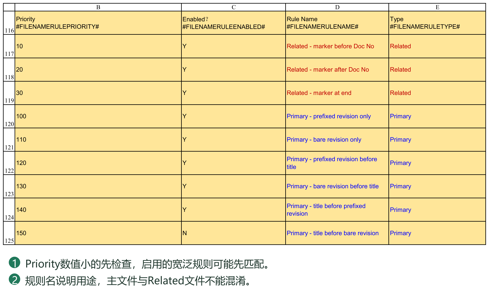
11.3 Rev0A 与标题末尾数字的例子
文件“DOC-ITP-001 Rev0A Inspection and Test Plan Unit 52.pdf”的正式 Doc No. 为DOC-ITP-001，Revision为0A，52属于标题。
仅使用“[0-9]{1,4}|[A-Za-z]{1,2}”不能完整匹配0A。当前混合版本规则另有数字与字母同时存在的分支；新增括号时应避免改变 Revision 所用捕获组。
只按“最后一组数字”取版本会把52误读为Revision。无版本前缀的规则尤其要限制优先级与适用格式；不要为了让一个异常名称通过而启用宽泛兜底。附录中的表达式用于说明结构，正式使用以本项目完整规则为准。
双字节空格与普通空格不同；规则中的\x20与\u3000分别覆盖两者。下划线、点号、连字符是否可作分隔符，要看当前规则的字符集合。
11.4 P054 规则表的每一列怎样填写
这张表回答三个问题：文件属于VDR哪一份文件、是主文件还是关联附件、版本是什么。它不判断PDF内容是否正确，也不授予文件进度。先确认VDR正式编号正确，再配置命名格式。
| 字段 | 填写和判断方法 |
|---|---|
| Priority | 数值小的规则先检查。精确的项目格式应先于宽泛规则；数字只是顺序，不是版本或文件类别。 |
| Enabled | Y参与识别，N不参与。保留一条规则供以后使用时可设N，不必删除整行。 |
| Rule Name | 给维护者看的说明，例如“带Rev且标题在后”。名称本身不决定如何匹配。 |
| Type | Primary为正式主文件，Related为关联附件。不能为了让文件通过就把No Match全部改作Related。 |
| Regex Template | 命名格式表达式。填写表达式本身，不在外面加引号，不在Excel里加等号。 |
| Revision Capture Group No. | 指定哪个圆括号捕获到版本。1表示第一组，不是第一个数字；0用于不提取版本的规则。 |
| Example | 给使用者看的样例，不参加识别。修改此列不会改变程序。 |
| Description | 说明适用命名及限制，不参加识别。 |
Priority、Enabled、Type、表达式和捕获组共同决定结果。仅把Example改成客户的文件名，规则并没有改变。
表头内的#...#是结构标识，应保留；允许编辑的可见说明文字与这些标识不是同一回事。调整表格时在开始、结束Token之间增加规则，不把规则写到结束Token之后。
11.5 从客户命名要求写出一条规则
本节使用虚构编号DOC-ITP-001，版本0A，标题Inspection Plan Unit 52。希望识别的实际文件是：
DOC-ITP-001 Rev0A Inspection Plan Unit 52.pdf
步骤一：把命名要求分成四段
正式编号为DOC-ITP-001；分隔符为空格；版本由Rev及0A组成；其后的文字全部是标题。52属于设备或区域信息，不能作为版本。
步骤二：确定占位符
{DOCNO}由程序代入当前VDR正式编号，不需要每份文件另写一条规则。{REVPREFIX}来自Settings的Revision prefix，例如Rev。{RELATEDMARKERS}来自关联文件标识列表，例如CRS、REPLY；它用于附件规则，不用于猜测审批Code。
步骤三：选择明确版本位置的表达式
仅数字版本可采用以下教学规则：
^{DOCNO}[-_.\x20\u3000]+{REVPREFIX}([0-9]{1,4})[-_.\x20\u3000]+.+$
捕获组编号为1，能提取00、01、123等一至四位数字，但不能识别0A。需要混合版本时，使用11.1的完整表达式，或为本项目增加一条明确的混合版本规则，例如：
^{DOCNO}[-_.\x20\u3000]+{REVPREFIX}([0-9][A-Za-z])[-_.\x20\u3000]+.+$
此教学规则只允许“一位数字加一位字母”，捕获组仍为1，能识别0A，但不会识别A1或00A。项目需要哪些版本，就选择能覆盖这些版本的规则；不要把有限示例当作通用规则。
步骤四：填写规则表并试扫
填写唯一易读的Rule Name、Enabled=Y、Type=Primary、适当Priority和捕获组1。打开提交窗体，选择样例并Refresh，确认VDR Document No.为DOC-ITP-001、Submission Rev.为0A、File Role为主文件，而非仅看“有匹配”。
步骤五：反向验证
把正式编号换成清单中不存在的编号，应当不匹配；把Rev0A换成Rev 0A，应按当前规则不匹配；保留标题末尾52，版本仍必须是0A。需要支持Rev与版本之间空格时，应明确修改规则，而不是认为系统会自动忽略所有空格。
以上是配置练习，不要求改名客户已经批准的文件，也不会自动改写已有登记。
11.6 正则符号与捕获组的实用说明
| 写法 | 含义及使用边界 |
|---|---|
| ^ 与 $ | 分别限制文件名开头和结尾。没有这些限制时，规则可能只匹配名称中的一部分。 |
| [0-9] 与 [A-Za-z] | 一位数字与一位英文字母；不是任意语言字符。 |
| {1,4} | 前一个单位出现一至四次。这里是正则次数，不是PMS占位符。 |
| + 与 * | 前一单位分别出现至少一次或零次以上。把+改为*可能允许本来不允许的空段。 |
| . 与 .+ | 点号在字符组外通常代表任意单个字符；.+表示至少一个字符。不是专指文件扩展名的句点。 |
| [-_.\x20\u3000] | 一个连字符、下划线、句点、半角空格或全角空格；加上+才允许连续分隔符。 |
| (...) | 捕获一组内容。按左括号出现顺序编号，嵌套括号也占编号。 |
| 两个分支之间的竖线 | 表示“或者”。例如数字版本或者字母版本；不是要求两段都出现。 |
| (?=...) | 检查后续内容是否符合条件，不占普通捕获组编号。可用于限制混合版本同时含数字和字母。 |
对比两条表达式：{REVPREFIX}([0-9]{2})只有一组，组1是00；({REVPREFIX}([0-9]{2}))有两组，组1是Rev00，组2是00。若项目开启Strip revision prefix，捕获Rev00后可能显示为00；关闭后可能保留REV00。捕获组与前缀清理要配套，不能只凭最终恰好显示00就认为组号一定正确。
前缀清理不改变PDF真实文件名。版本按文本保存，00不应变为数值0。修改版本格式后还应核对提交、接收是否关联到同一既有版本，不能只验证文件名识别这一步。
11.7 主文件和附件的识别顺序
主图纸PDF、可编辑源文件和CRS回复附件可能同时出现在一次传送单中，但承担的角色不同。正式文件需要匹配VDR编号及版本；Related通常用于同一文件的关联说明或回复资料，不应凭附件另取得一份独立设计文件进度。
配置前先列出项目允许的附件标识，再放入Related file markers。若标题中经常出现某个普通单词，不要把它随意作为附件标识，否则主文件可能先被较高优先级的附件规则识别。
当前规则表预置了标识在编号前、编号后及名称后部的几种形式。检查实际启用的规则，而不是假定系统只使用你刚修改的Primary那一行。宽松“只要包含Doc No.”的备用规则只有在确实需要时才启用，它不能替代正式版本识别。
出现Multiple Matches或Ambiguous时，先比较正式编号是否重复、是否同时匹配多份VDR文件、相同优先级是否给出不同角色或版本。不要简单把Priority全部改成相同数字。
窗体提供附件关联操作时，可将确属附件的文件关联到正确主文件和版本；仍要核对业务归属，不能把未知文件随意挂到某一行来清空TempFolder。
11.8 一套识别规则的验收样例
至少准备五类文件，使用本项目真实编号的副本在测试目录验证：普通数字版、字母版或混合版、标题带数字、关联附件、不属于本项目的文件。分别记录预期Doc No.、版本及角色。
| 样例 | 预期及检查重点 |
|---|---|
| DOC-001 Rev00 Drawing.pdf | 主文件；版本按前缀清理设置显示00或REV00，不得取标题。 |
| DOC-ITP-001 Rev0A Inspection Plan Unit 52.pdf | 在启用对应混合版本规则时为主文件；版本0A，不是52。 |
| DOC-001_00.pdf | 只有启用这种无前缀格式时才通过；不能要求所有项目都接受它。 |
| CRS-DOC-001_00.xlsx | 在匹配相应Related规则时为附件；核对关联主文件与版本。 |
| OTHER-999 Rev00 Drawing.pdf | 不在VDR正式清单中时应不匹配；不要为消除提示而新建虚假清单记录。 |
试扫不等于正式提交。对每一种项目实际命名再检查至少两个不同正式编号，防止某条表达式只适用于你手上的一个名称。完成后保留真正需要的规则，停用不符合本项目命名约定的宽泛备用规则。
第12章 提交接收和归档 VDR 文件
12.1 提交、接收及各Round登记
按实际方向选择工具，主要包括：
Vendor → Client：向业主提交文件。
Client → Vendor：接收业主审查返回。
Sub-Vendor → Vendor：接收分包商／次级供应商文件。
每次操作先确认参与方、日期及传送单信息。不同方向使用不同登记字段，不应把收到分包商文件直接当作已经向业主提交。
推荐操作流程
1. 打开相应提交／接收窗体，选择文件或将待处理文件放入该流程的TempFolder。
2. 查看识别结果，核对VDR文件、Revision、当前版本、附件关系及需要填写的Code等信息。
3. 未匹配或有歧义的文件先处理，不将它们当作已经识别的主文件。
4. 核对路径及必要的操作前确认，执行Submit／Receive。
5. 完成后检查VDR的对应Round、Transmittal Register、生成的传送单及文件链接。
临时目录内容变化后，需要刷新并重新核对；窗体里曾显示正确，不代表后来替换的文件也已审核。
Round登记
系统结合Revision及现有登记确定对应轮次，不是每收到一个附件就新增一轮。收到业主回复时，应核对其对应已提交版本及Review Code，不把“收到回复”直接当作“获得批准”。
主文件及关联附件按窗体识别结果处理。未匹配文件可能留在TempFolder，完成后应检查剩余内容，避免把它们误认为已经归档。
手工补登记时，使用规定输入字段，不覆盖公式或自行移动Round列。手工填入日期或Code不等于已经复制文件、建立传送单或生成有效链接，补录后需分别核对。
异常时，先读取具体阶段和原因，检查TempFolder、目标文件及Register是否已有结果，再决定重试。不要通过再次点击Submit／Receive盲目重复同一操作；撤销流程见第14至15章。
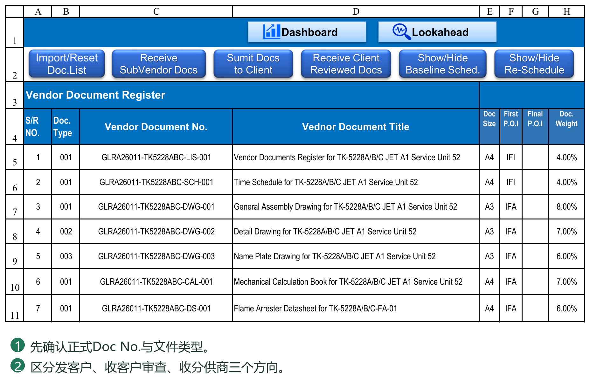
12.2 归档、超链接及长路径处理
归档目录按文件操作即时建立，不需要先执行Create Folders。系统先识别文件并规划目标路径，检查长度及重名，再执行归档和登记；超链接记录最终实际使用的路径。
Documents归档优先级
1. 保留“序号－完整Document Title”文件夹及原文件名。
2. 超限时，将文件夹简化为“序号－Doc No.”，仍保留原文件名。
3. 仍超限时，仅将Documents内部副本简化为DocNo_Rev00加原扩展名等短名称；附件另作区分，避免重名。
例如，原路径可能为：
Documents\Type\序号-完整标题\公司简称\完整原文件名.pdf
简化后可能为：
Documents\Type\序号-DocNo\公司简称\完整原文件名.pdf
极端情况下为：
Documents\Type\序号-DocNo\公司简称\DocNo_Rev00.pdf
Type等目录层级取决于项目配置，上述为结构示例。Documents内部副本缩短，不代表提交给业主的正式文件名也可以任意改动。
Transmittal归档
优先保留正式文件名；需要时简化传送单目录标识，而不是悄悄删除正式文件名中的标题。简化后仍超限，会提示并停止相应操作，要求缩短项目根路径等。
当前文件操作对完整文件路径采用259字符上限，目录还需满足相应长度限制。不是只有文件名计入长度，也不能仅靠Windows支持长路径就假定PMS流程无限制。
操作前确认
需要采用简化策略时，在实际处理前列出提示，由用户选择继续或取消。取消不执行本次归档和登记，文件保留在临时目录；不能把这个取消承诺扩大到执行途中任意磁盘故障后的自动无痕回滚。
已有历史目录
如果同一文件已在完整标题目录中保存旧版，新版却只能使用短目录，系统不会静默把历史拆到两处，会提示先缩短路径或处理历史归档。也不会自动迁移全部旧文件及历史链接。
重名与链接
发现目标副本重名时，不应默认覆盖旧文件。先确认是重复提交、同版本的另一文件还是附件识别问题，再按正常业务流程处理。
手工移动或重命名归档文件后，已有链接可能失效。不能只把显示文字改得正确就认为链接已经修复；应打开链接验证实际目标，并保留必要备份。
收到路径简化确认时怎样决定
先看提示列出的文件与最终目标路径，不只看文件名是否变短：
仅把Title文件夹改为Doc No.文件夹：正式原文件名仍保留，只改变内部分类目录。
还需把Documents副本改为DocNo_Revision短名称：属于更极端的内部归档简化，应确认符合项目留档要求；不代表对外Transmittal副本也可以任意改名。
简化仍超限或已有历史目录不能安全沿用：先缩短项目根目录或按流程处理历史，不强行继续。
需要简化的文件即使只有一份，也应阅读本批次确认。选择取消后，本次尚未执行的归档和登记不开始，文件留在TempFolder；修改路径或名称后刷新窗体，重新预检整批文件。
PDF页数与文件识别是两件事
识别Doc No.／Revision成功，不表示PDF页数一定可自动读取。自动页数按PDF当前有效页面结构读取，避免把增量保存留下的旧页面对象重复计入；加密、当前不支持的索引结构或损坏文件可能无法读取。
无法读取时，系统不猜测页数，使用空值并在写入前提示文件及原因。应打开PDF核对实际页数：VDR可取消本次处理，在窗体Pages字段填入正确值后重新确认；也可按提示选择继续留空。GDR若继续留空，可核对并补填生成传送单的Pages，但修改传送单本身不等于同步修改Register记录。
因此，页数为空不一定表示文件没有页面；也不应把一个错误页数当作可忽略的显示问题。对外发送前应核对传送单。更换算法不会自动更正以前已经生成的传送单和历史登记。
文件清单、Round登记、归档文件与进度应能够相互对应。第13章解释文件进度，第14至15章介绍GDR及Transmittal的编号、模板、撤销与归档管理。
12.3 提交窗口内的操作
Select Files 把选中文件加入本次暂存与核对清单；同名文件已在 TempFolder 中时可能跳过，不能仅凭选择成功认定新文件已替换旧文件。
Paste Files 打开本次 TempFolder，用户在资源管理器粘贴或拖入文件后返回窗口。若列表未更新，点击 Refresh 重新读取。暂存目录不是正式归档目录。
核对清单分为本次文件信息和已登记文件信息。Pages 可按真实 PDF 结果人工校正；主文件与附件角色要清楚，附件应指定 Parent VDR Document，误设后用对应 Reset Attachment 恢复。
Submit 执行本次批量提交；Cancel 或关闭窗口退出本次会话，不等于撤销已经完成的传送单。只有处理中才禁止重复点击相关按钮。若提交被拦截，先处理具体行的错误，不要反复点击 Submit。
12.4 接收两种来文方向
Receive Client Reviewed Docs 用于客户审查返回。先输入完整来文 Transmittal No. 或项目允许的引用，设置接收日期，核对每个文件的 Doc No.、Revision、Code及目标 Round。收到哪个版本应登记在哪个版本，不能把旧版回复写到最新版本上。
Receive SubVendor Docs 用于分供商到 Vendor 的文件。选择正确 SubVendor，检查其名称、后缀和 Incoming Rule。它不是客户审查返回，不应把分供商来文 Code 冒充客户最终结果。
同版重发、覆盖已有登记或目标轮次选择出现确认时，要按窗口说明判断是否替换既有记录，以及下游审查是否清除。文件名识别成功只代表找到了候选文件，不代表业务状态一定允许写入。
12.5 长路径确认发生在什么时候
系统先识别本次全部文件，计算最终归档路径并检查重名和长度，再创建目录、复制文件、生成传送单和登记。遇到需要简化的路径，会在处理前询问是否继续；取消应保留暂存文件而不执行本次归档登记。
Documents 首选“类型／序号与完整标题／公司／原文件名”；超限时改用“类型／序号与Doc No.／公司／原文件名”；仍超限才将内部归档副本文件名缩为Doc No.与Revision。用户应核对提示中的最终路径，而不是凭文件夹名猜测。
已有旧版本存于完整标题目录，新版必须改用短目录时，系统不应静默拆散版本历史。按明确提示处理原目录与链接后再重试。传送单归档优先缩短传送单目录标识，保留对外文件名；简化后仍超限则停止。
当前支持路径长度上限按259字符检查。路径缩短不应改变 VDR 正式 Doc No. 或传送单中约定的文件编号。
12.6 PDF 页数不能读取时
页数按 PDF 当前有效页面结构读取，不应累计旧版增量保存遗留的页面对象。普通1、2、3页的文件应分别显示1、2、3，不是2、4、6。
加密、特殊压缩结构、交叉引用或混合结构不受当前读取器支持时，可能返回空页数并提示人工核对。空值不等于0页，不应自动填1，也不能因为文件在阅读器中能打开就保证 VBA 能读取其页数。
在支持页数编辑的 VDR 核对窗口中填入真实页数后再提交。GDR 若未提供页数输入项，生成后可核对传送单，但手改传送单不等于改了 Register 或原始记录。
12.7 目录迁移与链接修正
搬迁项目应连同 PMS、VDR／GDR目录、Register关联资料一起移动。先保留原目录并验证新位置，不能只移动工作簿。
Batch Update Hyperlinks 只替换 VDR 超链接地址中的指定文本，不移动文件，也不是对 Register、GDR和所有外部资料的全系统迁移命令。输入旧路径片段和新路径片段，确认后批量替换，完成后抽查不同 Round 的链接。查找为空会退出；替换为空意味着删除匹配片段，不是取消。
Manual Backup Workbook 复制当前磁盘上的工作簿到用户选择的目录，以时间戳命名。请先保存，确保刚才的编辑已经写入磁盘；此按钮不是把整个项目文件目录一起打包。
12.8 向客户提交文件：从准备到完成
提交表示登记Vendor向Client发出的文件，同时归档并生成传送单；PMS不会代替用户通过邮件或客户平台完成实际交付。项目应以真实发送事实确定提交日期。
操作前准备
确认已导入VDR清单，实际文件名可按P054识别；确认Vendor／Client名称、VDR根目录、VDR_MAIN编号规则及Transmittal Form。若计划尚未发布，实际文件操作和计划完善应分别处理，不能为补计划改写真实提交日期。
1. 在VDR打开Submit Documents对应的提交入口，确认方向是Vendor → Client，设置本次真实提交日期。
2. 点击Select Files选择本次文件，或点击Paste Files打开TempFolder，把文件粘贴／拖入该目录后返回窗体。该步骤是暂存，不是正式提交。若替换了同名文件，确认暂存中实际保留的是需要发送的版本，再Refresh。
3. 逐项核对VDR Document No.、Title、Submission Rev.和Pages。Current Rev.／Current Code等是既有登记的参考信息，不是本次已经产生的审查结果。VDR S/R用于定位清单文件，不是传送单上的本批次序号。
4. 检查File Role。主文件应匹配正式VDR文件；附件按Parent VDR Document关联正确主文件。不能把附件误当成另一份设计文件，也不能让一份未知文件因为勾选了复选框就变成有效主文件。
5. 处理未匹配或歧义项：核对Doc No.、生效规则优先级、版本捕获组及文件实际名称。若按提示排除这些项继续，完成后它们仍需单独处理，不能计入已提交文件。
6. 点击Submit，阅读同版登记、页数或长路径等必要确认。长路径确认取消时，本批次归档登记不开始；页数无法读取时，可取消并补填真实页数，或按提示接受留空。
7. 等待处理结束。不要重复点击按钮、同时改TempFolder文件或在生成中操作其他表页。打开生成传送单后，先核对内容，再按15.6导出PDF和对外发送。
完成后的四项核对
VDR：本次版本、提交日期、发文传送单引用及链接对应正确文件和Round。
生成传送单：文件序号从1开始，Doc No.为正式清单编号，Revision保留00／0A等文本，页数与PDF一致。
Transmittal Register：本次编号、方向及文件明细完整。
归档与暂存：链接能打开实际文件；TempFolder剩余项均有明确原因。
文件实际进度是否立即取得、是否需要回复，仍由P052／P053决定。完成提交不等于取得Code2、Code1，也不等于已经记录Dashboard本期实际曲线点。
12.9 接收客户审查文件：版本与Code要分别核对
1. 在VDR打开Receive Client Reviewed Docs，确认方向为Client → Vendor，设置真实接收日期。
2. 暂存客户传送单和审查文件。把传送单文件识别／指定为Transmittal，不要把它当成设计主文件。收到审查文件应作为相应主文件，支持资料按附件关系处理。
3. 核对来文完整编号。存在传送单文件时，程序可从其文件名取得引用，仍需核对是否为客户真实编号。项目规则允许无传送单文件的人工引用时，选择对应方式并填写完整引用；不代表可以把应留存的正式传送单丢弃。
4. 核对每份审查文件的Received Rev.，确认它对应的是哪次已提交版本。不要因为现在最新版为01，就把00版迟到回复填入01版。
5. 在Review Code填写客户真实审查结果，按项目Code定义输入。例如客户批准为A就填A，不能为取得预期进度改填1。程序不会阅读图纸内容替用户推断审批Code。
6. 检查来文规则提示。Block表示先修正再执行；Warning表示核对后由用户决定是否接受；None不是“自动检查通过”，而是未采用该项格式校验。规则详见15.9。
7. 点击Receive，检查归档路径及其他必要确认，完成后核对VDR对应Round的返回日期、Code、来文引用和链接。
8. 计算并核对文件实际进度；若还需更新本期曲线，继续执行第16章流程，而不是以Receive成功代替曲线记录。
原则上，审查返回应有明确Code。若客户文件缺少结果，先向客户核实，不应猜填；若已登记空白／未知Code，进度预检可能提示该记录不能按普通Code规则计取。First Return等独立事件的规则仍按第13章解释，不应把收到文件等同于有效批准。
12.10 接收分供商文件：不是客户审查返回
1. 先在Settings的SubVendor配置中确定公司名称、后缀及Incoming Rule ID，核对该Rule ID在来文规则表存在。
2. 打开Receive SubVendor Docs并选择本次实际分供商，再设置接收日期。名称相似的公司也不能混用后缀和来文规则。
3. 暂存文件，核对正式VDR编号、Received Rev.、主文件与附件。来文传送单引用应属于该分供商，不是随后给客户的发文编号。
4. 阅读格式、路径及目标登记提示后Receive；完成后核对分供商来文相关字段和归档链接。
5. 要向客户发送时，再执行Vendor → Client提交。收到分供商文件不自动意味着已经提交客户，也不会自动产生客户审查Code。
同一份设计文件可能同时存在分供商来文、Vendor发文、Client审查返回三类事实。它们可以关联同一文件版本，但方向、日期、责任和引用各不相同。
12.11 同版重发、跳版及重试的处理原则
同版重发先判断是否真正重发
提交相同Revision但修订了内容，可能涉及覆盖已有登记。Settings的Clear Client Review on Same Revision决定同版重发是否清除相应客户审查信息：Y会清除相关旧审查，N／空白保留。保留旧Code不代表客户已经审查新内容，因此应按合同和文控规则决定该设置，不能仅为保住进度选择N。
00版没有回复直接提交01版
如果实际允许这种特例，按真实事件登记，不伪造00版回复。后来收到01版有效Code，按当前进度规则解释；不是要求每一个旧版都补出回复才允许整个项目继续。First Return、早到／迟到Code的计取边界见13章。
已经生成传送单后发现错误
只改生成传送单不会同步纠正Register和VDR。业务错误按15.4—15.5判断是否需要Undo再重新提交；仅打印版式问题可修改输出文件，但仍应保存最终对外版本。
异常退出后不要盲目重试
先检查VDR、Register、目标目录及生成传送单是否已部分完成，保留具体错误文字。文件仍在TempFolder不等于任何登记都没发生；取消窗体也不能撤销已完成操作。确认本次实际结果后，再决定补处理还是业务撤销。
第13章 理解文件进度计取规则
13.1 当前Code、文件状态与进度计算规则
当前Revision、当前Code及重提／审查状态由Round记录和项目规则形成，用于筛选、看板与进度计算。应维护源记录，不在汇总字段里覆盖一个期望结果。
Code含义由项目约定决定。例如Code2是否允许制造、Code1是否表示最终批准，不能只凭数字大小判断。相同Code在不同项目中可能有不同含义和进度百分比。
进度计算分清三层：
各事件／Code对应多少进度，由Document Type及百分比配置决定。
计划节点是否分配中间增量、实际过程是否参考Planner轮次，由Progress by Planned Rounds共同控制。
收到某Code时怎样处理已取得进度，由Progress Calculation Rules决定。
主要规则
PROGRESS ON SUBMISSION：使用计划轮次模式时，按允许的提交过程取得相应进度；收到该Code时，不再将Code百分比重复叠加。
FOLLOW CODE PROGRESS：按该Code对应的进度目标更新，目标来源于适用的计划／配置，不是将该百分比再叠加一次。
HIGHER OF REVISION OR CODE PROGRESS：正常不回退时保留允许的过程进度与Code目标中较高者；开启回退后仍按适用规则处理。
例如，已经允许取得的过程进度为70%，收到适用目标80%的有效Code且无回退情形，按Code处理可达到80%，不是70%再加80%。若目标较低且不允许回退，通常保留较高进度。两种回复规则的具体边界见13.8—13.9。
这些数值仅为说明，不能代替项目自身的进度配置。允许进度回退的参数与具体计算规则共同作用，不应理解为勾选一次就会让所有Code无条件下降。
修改登记后，按流程执行文件实际进度计算，并核对日期、Code及结果。当前进度与历史汇报周期的重建不是同一件事；历史处理详见第16章，完整规则及数字例子见附录C。
看到文件仍在审查、等待重提或Code为空时，应检查对应日期和业务记录，不要简单将其当作零进度或已完成。Dashboard筛选结果也应与VDR源状态相互核对。
Settings两张进度表怎样配合
百分比表（通常称P052）按Document Type规定First Issue、First Return及各Code的累计目标，并选择Y／N轮次模式；行为表（通常称P053）规定Code如何处理、Requires Return及是否允许回退。参数编号整理后可能变化，以表名和字段用途定位。
例如，First Issue为40%、First Return为50%、Code3为50%、Code2为80%、Code1为100%：这些是累计目标，不是每次遇到就再加一次。收到Code2通常是按适用规则达到80%，不是在已取得50%上再加80%。
调整Code体系时，应同时核对三处：Planner结果列、Settings百分比表Code表头、Settings行为表Code行。只把Code3改成C，却没有给C配套行为规则，不能认为已有一个完整可计取的Code。未使用的Code定义留空，不为填满表格而建立虚假节点。
First Issue与First Return为什么还单独保留
首次提交本身可能按合同取得40%，并不等于收到审查Code；First Return可另定义首次审查返回事件的累计目标，例如50%。若Code3也是50%，首次返回Code3仍为50%，不会因两个名称都出现而变成100%。如果首次有效回复直接为Code2，普通Code行为仍应参与处理，而不是强制停在First Return的50%。
按目前规则，首次返回事件与普通Code处理存在独立路径：缺Code或Code定义不完整时会有警告，普通Code贡献不计取，但First Return事件及其他完整节点仍可能计取。因此，出现这类警告不能当作“该文件已经通过审查验证”；应补全真实Code及对应配置，再重新计算。不要靠删除返回日期来消除提醒。
特殊往来怎样处理
00未回复直接提交01：允许保留这一真实历史并提示，不再要求编造00返回来推进计算。01有合法提交和返回时，可以成为首次实际返回；编号不是首次返回的唯一依据。
提前取得Code2／Code1：已发生的有效结果按适用行为规则计取，不必凑够Planner预计轮次。仅提交到相应轮次，不代表已经获得该Code。
超过计划轮次仍未取得目标Code：不能因重提次数增多就无限累加；需要返回确认的目标仍受门槛约束。
旧版迟到回复：当更高版本在该旧回复日期之前或同日已经取得定义完整的有效审查结果，旧版Code不再驱动进度；原始往来记录保留。较新版本只是提交、尚无有效回复，或其Code定义不完整，不足以自动屏蔽旧版有效结果。
同一文件的进度能否下降：还由允许回退和Code行为决定；“新版优先”不是“任何新记录都覆盖旧百分比”。
按日期核对的例子
00于9月1日提交，01于9月5日提交，01于9月8日有效返回Code2，00于9月10日才返回Code3。
9月6日的历史计算不能提前使用9月8日的Code2。
9月8日及以后可按Code2和当时可用事件计取。
9月10日的迟到00 Code3不应推翻已生效的新版有效结果。
如果01的Code缺少完整配置，应先处理警告，不能仅因版号较大就认定其一定优先。
Y／N的完整数字对照、首次返回门槛及回退边界见附录C。实际历史必须使用真实日期，不能只根据当前显示的最新Code推算过去每一期。
13.2 按文件类型选择是否使用计划轮次
在 P052 表中 Document Type 右侧设置 Progress by Planned Rounds。Y：按 Planner 已计划的节点分配中间轮次的进度；N：按设置的事件和Code规则计取，不因为多提交一轮自动得到 Planner 均分值。
该开关同时影响 Planner 的 Calculate Planned Progress 与 VDR 实际进度计算。它不改变文件日期、不自动更改审批Code，也不自动发布或刷新历史。
更改后应重新计算计划节点进度，按需要写入目标计划时间轴；再计算当前实际进度。是否重建历史，要单独决定并使用明确的历史刷新功能，不能把以前已发布报告视为自动改好。
同一类型的所有文件采用该类型设置。实际文件 Type 与配置不匹配时先修正类型或规则，不要随意改成另一类型来获得较高进度。
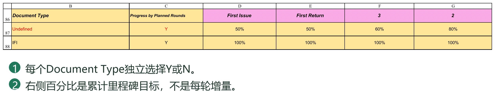
13.3 First Issue First Return 与 Code 的关系
First Issue 是首次提交事件，First Return 是首次真实有效客户回复事件，不要求必须是00版。两个都是项目可配置的进度里程碑，不是Revision名称，也不是Code3的别名。
First Return 保留独立计取方式。若 First Return 的继续门槛设为N，在使用计划轮次的路径下，后续提交可能取得其分配进度；设为Y时须满足回复门槛。这是项目规则选择，不能只看名称就认为所有路径都必定等待回复。
收到回复还会按普通Code行为处理。First Return与Code3都设为50%时，不是50%加50%；首次回复即Code2或Code1时，应按有效Code和行为规则计取，不能强制停在First Return值。
空Code、未知Code或行为未配置完整会产生警告，普通Code不能凭一个百分比就默认有效。First Return独立路径仍应按其既定规则理解；因此项目应在接收时把有效审查Code登记完整，不依赖未知Code取得正常审批进度。
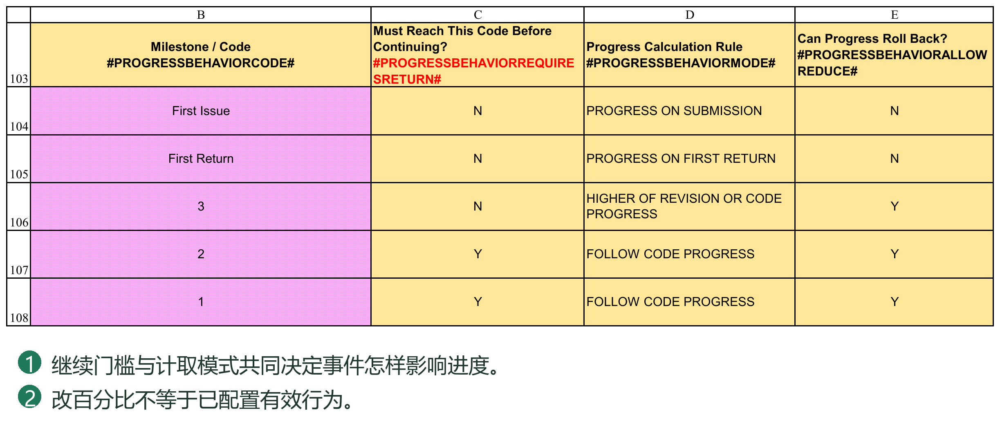
13.4 怎样手工验算一个文件
示例仅用于验算：First Issue40%、First Return50%、Code3为50%、Code2为80%、Code1为100%。Planner 计划在Round1取得Code3，Round4取得Code2，Round5取得Code1。
开关Y时，50%至80%分到三个轮次，各新增10%；开关N时，中间Round2、3不增加，到Code2节点新增30%。Planner 的格内值是新增值，而查看某日累计进度须累加已到期节点。
只提交但尚未满足必须回复的Code2门槛时，不能自动宣称已达80%。提前取得有效Code2时，按该Code行为规则计取，不必等到计划Round4；超出预计轮次仍没有Code2，也不能无限增加。
对照时先按日期排实际提交与回复，再检查版本优先、Code行为、继续门槛及允许回退，最后核对目标日期前累计值。数字示例的详细边界见附录C。
13.5 P052 的配置步骤与累计目标
P052的表名为Progress Percentage Based on Milestone / Review Code & TYPE。它定义“某类文件达到某一事件或审查结果时，累计应取得多少进度”。不是每收到一次Code，就把这个百分比再加一次。
在Settings按表名或#PROGRESSPERCENTAGEBASEDONCODESTART#找到表格。每行是一种Document Type；Document Type右边是Progress by Planned Rounds，随后才是First Issue、First Return及普通Code目标。
| 字段 | 应怎样填写 |
|---|---|
| Document Type | 与文件的实际Type对应，例如Calculation或IFI。不按文件标题自动猜测类型。 |
| Undefined | 默认类型。没有专门类型配置时可能使用这一行，应保留并核对它的规则，不把它当空白占位行。 |
| Progress by Planned Rounds | 填Y或N。同一类型全部文件采用该设置；同时影响Planner计划分配与文件实际计取。 |
| First Issue | 首次提交事件的累计目标。按合同选择，例如40%；不是实际版本00这个字符串。 |
| First Return | 首次实际回复事件的累计目标，按当前独立事件规则处理，不等于普通Code3名称。 |
| 3、2、1及其他Code列 | 项目实际使用的审查结果累计目标。名称可按项目Code体系配套修改。 |
建议直接输入40%、50%、80%等带百分号的值，避免把0.4、40和40%混淆。有效0%与空白含义不同：0%是明确目标，空白可能意味着配置不完整。
步骤：先根据合同列出文件类型及累计节点；填写Type和Y／N；填写各目标；到P053补全各Code的行为；到Planner核对结果列名称与预计达到的Round；计算Plan Progress并验算，再发布。
教学例：Drawing采用Y，First Issue40%、First Return50%、Code3 50%、Code2 80%、Code1 100%。Code3安排在Round1、Code2在Round4、Code1在Round5。Plan Progress中的First Issue新增40%、First Return新增10%、Round1新增0%、Round2至4各新增10%、Round5新增20%，合计100%。是否已经取得某个实际节点，还受真实提交／返回和P053门槛约束。
同样设置改为N时，Round2、3不分配中间新增值，Code2节点集中新增30%。它改变的是计取和分配口径，不取消日期计划。改完必须重新计算所需结果，不会自动改写已经发布的时间轴和历史。
新增类型应在开始、结束Token之间增加数据行，并填写完整Y／N及所用Code目标。不能在表尾随便写一个新Type名称就认为它已经被读取。Type拼写不匹配时可能落入Undefined默认规则，应核对结果是否真的是你设定的那一行。
13.6 自定义 Code 体系的方法与边界
3、2、1是模板示例，AFC通常表示可供施工、FIN通常表示最终文件、ASB通常表示竣工或最终状态资料；这些业务含义应以客户约定为准。PMS不会仅凭Code名称就推断其百分比、是否需要回复或是否可以回退。
例如客户采用C、B、A而不是3、2、1：
1. 先列一张对应表：C为带意见返回、B为按意见批准、A为批准，累计目标分别50%、80%、100%。
2. 在P052将相应普通Code表头配套改为C、B、A，按各Type填写目标。
3. 在P053将相应Code行配套改为C、B、A，并选择有效的行为、Y／N门槛及回退设置。
4. 在Planner的Plan Review Result区域配套修改普通Code名称，填写各文件预计达到该Code的节点。当前模板First Issue、First Return和普通Code在同一区域，但特殊事件不能当普通Code删除。
5. 计算计划进度，检查非零节点及Sum；再用一份文件的提交、首次回复、后续回复核对当前与历史实际。
6. 检查Dashboard审批分类标题、计划分类引用及相关阈值配置。替换Code名称不保证模板中所有展示文字都会自行改名；尤其原来按Code3、Code2、Code1分段的计划状态要核对其对应范围，不能只改标题。
当前模板Planner结果区在L6:S6，其中L、M为特殊事件，N:S为普通Code；这是本模板定位参考，不是所有布局的永久地址。修改时按区域标题、字段和结构配置核对，不照抄旧说明中的其他列号。
未使用的普通Code定义可以按项目留空，但应同步清理该Code对应的计划输入与不再使用的行为配置，检查是否有历史仍引用它。历史上已经用过的Code不能不经评估直接删掉，否则历史重算可能缺少依据。
P052中可以保留仅供实际异常结果使用、Planner不计划达到的Code，例如Reject。未在Planner安排并不等于实际收到时一定忽略；需有有效P052目标及P053行为。不要为计划出现Reject而刻意分配正常计划轮次。
13.7 First Issue 和 First Return 不使用时怎样处理
这两个字段目前是程序识别的特殊事件，不是任意删除的普通Code。保留事件、填写0%、清空百分比、删除表头、删除P053行为行，是不同的操作。
如果合同不奖励首次提交，可以保留First Issue和完整行为配置，累计目标填0%。如不需要独立的首次返回增量，可以把First Return设为与先前目标相同，或按合同选择合适数值；相同累计目标不会重复相加。0%也不等于关闭后续所有事件判断。
不要直接删除两个名称或清空对应规则。当前N模式会主动校验并读取两项配置，缺少百分比或行为会使计算不能正常继续。名称由Planner事件表头参与识别，只改P052或P053的一处也可能失配；一般项目建议保留英文事件名称。
First Issue应使用PROGRESS ON SUBMISSION；First Return应使用PROGRESS ON FIRST RETURN。不要把First Return改为普通FOLLOW CODE PROGRESS来尝试取消其特殊性。
首次返回Code3、Code2或Code1时，实际Code仍单独处理；事件目标不能简单与Code目标相加。First Return的目标设得高于实际审批成果时，独立事件值可能产生较高结果，应先验算再采用。想只凭Code计取时，不能只凭“First Return”这个标题推断效果。
“未使用的Code留空”仅针对普通可选Code，不代表可以把上述特殊事件或任何内部结构一并删掉。
13.8 P053 的四种计算规则
P053表名为Progress Milestone Calculation Rules。P052回答“目标是多少”，P053回答“取得和处理目标的方式是什么”。同一个Code在不同Type可以有不同百分比，但P053的Code行为行是共享配置，不是每Type各设一套同名行为。
| 下拉选项 | 当前处理含义与使用限制 |
|---|---|
| PROGRESS ON SUBMISSION | 在Y模式按允许的提交过程节点取得进度；First Issue使用此规则。普通Code采用它，不等于收到该Code时再叠加一个目标。N模式不由这个选项重新启用轮次分配。 |
| PROGRESS ON FIRST RETURN | 用于First Return特殊事件。不能给普通Code任意使用这一规则；首次实际回复不限定版本标识必须为00。 |
| FOLLOW CODE PROGRESS | 按适用Code节点或配置目标处理回复，配合已取得节点及回退设置；不是在原进度上加Code百分比。 |
| HIGHER OF REVISION OR CODE PROGRESS | 正常不回退时保留允许过程进度与Code目标中的较高值。开启回退后仍可能按适用规则下降，不是永不下降的保证。 |
最后两项在当前Y模式的普通Code处理中共用不少规则，在部分情形结果相同；不要为了看到不同结果而任意切换。尤其“FOLLOW”不代表无条件覆盖，“HIGHER”也不代表回退开关失效。是否回退还取决于该Code有无Planner节点、已达成节点及对应过程进度。
P053规则名称由下拉定义，不能把FOLLOW CODE PROGRESS改成自己写的“FOLLOW CLIENT CODE”并认为含义相近就可识别。可自定义的是项目Code及参数选择，不是任意创造计算规则关键词。
13.9 回复门槛和回退开关的组合
Must Reach This Code Before Continuing用于控制Y模式的过程推进门槛。Y表示不能仅凭继续提交就越过相应成果门槛；N不以该门槛阻止适用的过程计取。N不表示客户尚未回复，就一定已经取得任何普通Code目标。
Can Progress Roll Back控制适用的较低回复结果能否降低已取得进度。N通常保留较高值；Y允许按当前规则回退，不是要求所有回复都减少进度。
例一：Y模式中过程已允许取得70%，收到目标80%的Code2，规则FOLLOW CODE PROGRESS且不回退，结果可达到80%，不是150%。若有效回复提前到来，也不必等待预计Round4。
例二：已取得80%，收到没有安排在Planner正常路径中的Reject，P052目标30%，P053为FOLLOW CODE PROGRESS。回退N时保留80%；回退Y时可按该异常Code降至30%。这是未安排Code的明确例子，不能推断所有已安排节点的回退都只等于P052单格数值。
例三：N模式First Issue40%、First Return50%、Code3 50%、Code2 80%，Code行为有效。首次提交40%；再次提交但未回复仍40%；首次有效回复Code3后50%；有效回复Code2后80%。普通Code的Requires Return=N也不使未回复的中间提交自动递增。
例四：Y模式First Issue40%、First Return50%，两次提交均无回复。First Return门槛N时，适用提交路径可能取得50%；门槛Y时仍受返回门槛限制。这是现行允许规则，不代表系统登记了一个并未发生的客户回复。
每次调整先验算“仅提交、正常首次回复、提前批准、迟到旧回复、Reject回退”这些情形，再决定是否对历史追溯。不要只验证100%这一种最终结果。
13.10 配置完成后的检查与修改影响
1. 核对实际Type能找到正确P052行，Undefined默认行有效，无重复类型或重复Code行为行。
2. 核对P052、P053、Planner普通Code名称一致，特殊事件完整，所有Y／N和行为值有效。
3. 检查目标与计划节点顺序。正常计划累计目标应与计划先后相容；需要回退的异常Code不强行作为正常增长节点。
4. 重新Calculate Planned Progress；验算一份多轮文件和一份仅提交即可完成的文件，不只看全表Sum。
5. 如计划应更新，分别发布目标计划日期及计划进度；不通过切换Basis代替发布。
6. Calculate Actual Progress后读完警告；有日期无Code、未知Code、缺行为时先补事实或配置，不能把其他独立事件仍有进度当成该Code已有效。
7. 需要修正历史时，先重建VDR相关周期，再重建Dashboard Data，最后刷新曲线和报告；保留已发布报告并决定是否追溯。
Code百分比、类型、Y／N或回退口径改变，都可能使同一批真实事件得到不同进度。不会自动迁移历史配置，也不能用重新点击保存代替这些业务更新。
第14章 管理 GDR 一般项目文件
14.1 GDR文件类别及基础登记
GDR可用于技术澄清、审查意见、会议纪要、不符合项等文件，例如TQ、CRS、MOM、NCR。具体类别及使用规则以项目约定和Settings配置为准，不要求每个项目使用相同缩写。
首次使用前，检查GDR文件类别、识别规则、发送编号规则及接收规则。类别并非仅用于显示，它还可能决定文件处理方式及所属传送单编号组。
与VDR不同，GDR不依赖预设设计文件清单。提交新文件时建立对应登记；同一事项后续再次发出时，应选择已有记录继续处理，避免把同一事项重复建成多条互不关联的记录。
基础信息通常包括Document Type、General Document No.、Title及Remarks。正式编号、标题和备注按项目要求填写，不用临时文件路径代替业务说明。
GDR登记的事项编号与传送单中显示的实际文件名并不一定相同，具体区别见15.2。
14.2 提交、接收、回复与状态追踪
提交新文件
1. 打开GDR提交窗体，选择Document Type及新建记录方式。
2. 选择文件或将文件放入该流程的TempFolder。
3. 核对主文件与支持文件的角色，检查编号、标题及其他必要信息。
4. 检查本次传送单信息，确认后执行提交。
5. 核对GDR登记、Register及归档文件。
支持文件用于随主事项提供附件，不应仅因同在临时目录就全部当作独立主文件。执行前应确认关联关系，尤其是一批文件包含多个事项时。
已有事项再次提交
选择Existing方式及对应GDR记录，再处理本次文件。系统按现有往来安排相应Round，而不是要求用户把原记录删除重建。
接收回复
打开GDR接收窗体，选择类别并提供收到的传送单编号及文件。按识别结果核对回复关联的原事项和轮次，再执行接收。
没有匹配或匹配不明确时，先检查项目类别、识别关键词及原发送记录，按窗体提供的关联方式处理。不要强行匹配到一条名称相似但业务无关的记录。
往来状态
通过各Round的发送、接收日期及传送单链接追踪事项。发送了文件不等于已经收到回复，收到回复也不一定代表事项已经关闭；最终是否解决仍需结合文件内容和项目约定判断。
GDR不是VDR设计文件进度的替代来源，不应将一份技术澄清的回复直接当作某设计文件已经取得Code1。
目录按操作需要建立，无须先执行Create GDR Folders。完成后检查TempFolder剩余文件；未处理的支持文件或回复不能仅因窗体关闭就视为已归档。
14.3 GDR 窗口及准备条件
GDR 用于没有预设设计清单的一般项目文件。先在 Settings 配置 Type Code、Document Type、负责方、目录与发文规则；发送时选择正确类型，接收时对应已有文件或往来主题。
Select Files、Paste Files、Refresh 的基本意义与 VDR 相同，但不能要求 GDR 文件先存在于 VDR 清单。提交前核对实际文件名、标题、类型、日期及往来引用；需要回复的文件应核对目标 Round 和关联记录。
目录会在文件处理时按需创建，不需要把 Create GDR Folders 作为强制前置步骤。当前源工作簿仍保留该可选按钮，其作用是预建配置的 GDR 目录，不代表执行了提交，也不应创建重复业务记录。
GDR 的 Doc No. 和 Doc Name 均来自实际文件名去扩展名，Revision采用Round信息，不应套用 VDR 正式文件清单编号。
14.4 P056：把一种一般文件接入GDR流程
P056是GDR Document Type配置表，不是VDR设计文件清单，也不是审查Code表。按该项目使用的文件类别，在表格Start／End边界内维护有效记录，保留表头与结构Token。
| 字段 | 填写方法及作用 |
|---|---|
| Type Code | 简短、稳定且不重复的类型标识，如TQ、NCR。用于选择和识别，不只是一段显示文字。 |
| Document Type／Name | 用户可读名称，如Technical Query；与Type Code含义一致。 |
| Default Responsible Party | 默认责任方，如Engineering或QC；操作时仍核对实际责任。 |
| Folder Name | 该类型的归档目录名称；使用合法文件夹名称，不填整条任意绝对路径。 |
| Outgoing Rule ID | 指向P058的规则键，决定发文编号组和格式。 |
| Incoming Rule ID | 指向P060的来文规则键，决定引用校验和显示。 |
| Track Response | Y表示关注回复，其他设置按项目配置；它不是审查Code。 |
| Description | 给使用者解释适用范围，避免相似类型混用。 |
例如TQ使用Outgoing Rule ID=TQ、Incoming Rule ID=CLIENT_TQ，NCR使用NCR／CLIENT_NCR。GENERAL可以作为若干一般文件的共同发文规则，但共用规则键也意味着共用相应流水号，不是每个类型自动独立编号。
新增一种类别
1. 确定是否真的需要新类型，还是现有类型下的新事项。
2. 在有效配置区内增加记录，填写唯一Type Code、名称、负责方及目录名。
3. 到P058准备对应发文规则，到P060准备对应来文规则，再把两个Rule ID准确填回P056。若希望共享编号，明确复用已有Rule ID。
4. 决定Track Response，并补充Description说明。
5. 用一份测试文件验证提交、生成编号、归档、回复关联；不要只以类型能出现在下拉框中作为完成标准。
Track Response=Y时，延续事项但上一轮缺少回复信息可能得到提醒；它不是绝对禁止继续发文，也不能代替项目负责人判断事项是否关闭。
14.5 发出GDR文件：New和Existing怎样选择
New用于新事项；Existing／Reissue用于同一事项的后续往来。文件名相似不必然是同一事项，文件名不同也不必然要建成新事项，应按实际业务关联决定。
1. 打开GDR提交窗体，选择Document Type、日期和New／Existing方式。
2. Select Files或Paste Files加入本次暂存文件，再Refresh并核对角色。Main是本次主文件，Supporting是支持资料，二者不应各自随意新建同一事项。
3. 选中一份Main进入Details，核对General Document No.、Title、责任等必填信息。Details需要明确的一份主文件，不能同时选择多份后以为一个Details会自动替所有主文件填写。
4. Existing方式应在Details选择正确既有GDR记录，再Save Details；未保存的关联不能视为已经生效。核对是否续接了正确事项和Round。
5. 返回主窗体，逐个核对其他Main及支持文件关系。确认发文规则、引用、路径后提交。
6. 检查GDR新增／续接的记录、Round、日期、传送单引用、附件链接及Register；再核对生成传送单。
GDR没有预置的正式设计编号清单。传送单的Doc No.和Doc Name按实际文件名去扩展名填写，Revision按该流程Round信息形成文本；不要拿VDR正则提取的Rev00逻辑替代GDR事项关联。
14.6 接收GDR回复：先指定事项，再登记
1. 打开GDR接收窗体，选择正确类型、接收日期及来文引用，暂存客户来文。
2. 检查文件角色：Response表示需要关联事项的回复，Supporting表示支持资料，Transmittal表示来文传送单。
3. 程序根据类型与文件名尝试识别，并在可唯一匹配时关联待回复记录。自动匹配只是候选结果，仍要核对Doc No.和Title。
4. 若Response尚未关联，选中该文件，在Existing GDR Record中选择正确事项及待回复Round。文件名过于简略或同时匹配多个事项时，不要随便选第一个。
5. 若真实回复被识别为Supporting，先将其指定为Response，再完成关联。未完成所有Response的有效映射时，不应强行执行Receive。
6. 核对来文规则和路径确认，Receive后检查GDR对应事项／Round的收到日期、引用和链接，不把回复挂到另一个新建事项。
接收没有合适目标时，先核实是否选错类型、该事项是否已经回复、是否根本没有此前登记。不要为让按钮可点而创建虚假的发文记录。GDR回复关联与VDR按Doc No.识别设计文件是两套不同的定位逻辑。
第15章 管理 Transmittal 模板编号与撤销
15.1 Transmittal编号及Register
Outgoing：发出传送单
系统根据Settings的编号组、格式和起始流水号生成。不同文件类别可以按配置使用各自编号组，也可以共享编号组；不能只看页面不同就认为流水号一定独立。
Incoming：收到的传送单
使用对方提供的正式编号，并按接收规则校验或处理。对方编号不是本机发出流水号，不能按Outgoing方式自行替换成一个新号。
完整编号、显示引用及归档目录名
三者可能不同：完整编号用于正式业务识别，Register Reference可按配置简化显示，目录名也可能因路径规则采用短名称。显示为001，不代表所有类别的001都是同一张传送单。
查找或撤销时，应结合完整编号、方向、日期、来源和文件明细确认对象，不仅凭短号判断。
Transmittal Register
按文件明细记录传送单，同一传送单可能占多行。常见信息包括编号、来源、方向、状态、文件编号、Revision／Round、归档文件及传送单路径等。
Register不只是供阅读的台账，也是编号判断、关联定位及Undo的重要依据。不要手工删行、改状态或改流水号来“释放”编号，也不要只排序部分列。
编号不连续不一定是错误。已取消但保留占用的编号不能自动当作空缺重用；释放的编号则可能被后续流程再次采用。具体处理见15.4。
15.2 Doc No.、Doc Name、Revision与文件序号
VDR传送单
Doc No.：VDR清单中的正式Vendor Document No.。
Doc Name：实际文件名去掉扩展名，可能包含编号、Revision及标题。
Revision：按文件识别及登记得到的版本文本，保留00等前导零。
Doc Title：VDR中的文件标题。
例如，文件为DOC-001 Rev00 General Arrangement Drawing.pdf，则Doc No.为DOC-001，Doc Name为DOC-001 Rev00 General Arrangement Drawing，Revision按项目配置显示为00或相应版本文本。
GDR传送单
GDR没有预设的设计文件清单，当前Doc No.和Doc Name均取实际发送文件名去掉扩展名；Doc Title取本次登记的标题。Revision使用Round轮次表示，例如Round 00、Round 01，不是凭文件名自动推断出一套设计文件版本。
模板可以只显示Doc No.或只显示Doc Name，也可以两者都显示。应按收件方要求选择，不要为了适配模板修改真实文件身份。
传送单文件序号
从本张传送单的第1个明细开始编号，与VDR文件序号、导入ID及PC Task ID无关。不能把项目中第150份文件直接作为本张传送单的序号150。
15.3 使用Token调整传送单模板
Transmittal Form是生成传送单的模板，不是每次业务的最终传送单。用户可调整标题、Logo、说明、列宽及版式，再由程序按Token填充生成文件。
常用Token
#TRNO#：传送单编号。
#DATE#：传送单日期。
#SRNO#：本张传送单内的明细序号。
#DOCNO#：文件编号，VDR／GDR来源区别见15.2。
#DOCNAME#：实际文件名，不含扩展名。
#REVISION#：VDR版本文本或GDR Round信息。
#DOCTITLE#：文件标题。
#SIZE#：适用的文件尺寸信息。
#CURRENTCODE#：适用的Code信息。
#PAGES#：流程取得的文件页数。
#DETAILEND#：明细区域结束的结构标识，不是打印给收件人的业务字段。
字段是否有值取决于流程及源数据，放入Token不等于程序能为所有文件自动生成Size、Code或Pages。更多Token说明及限制见附录D。
明细模板规则
所有重复明细字段的Token放在同一条模板行，程序据此生成多个文件明细。
不需要的业务字段可以不显示，但必须保留可识别的明细模板行。
#DETAILEND#仅保留一处，至少放在模板行下方两行的位置，为明细区域留出空间。
不修改Token拼写，不把其写进文本框或图片代替单元格。
不用跨多行合并的明细单元格破坏逐行填充结构；调整后先在副本中生成少量及多文件传送单验收。
页眉、签字区及页脚应放在合适区域，并设置正确打印范围、纸张、方向、缩放及分页。程序识别字段不等于会自动替用户设计所有打印版式。
生成与PDF
生成的是单独的正式传送单工作簿。审核内容并保存后，使用其Export PDF按钮输出；若模板未保留该按钮，可按Excel正常方式手工导出PDF。
PDF按正式传送单的打印设置输出，模板页不应直接当作已生成传送单导出。导出前检查编号、日期、页数、文件明细、Logo及签字信息。
修改已生成传送单的显示文字，不会自动修改PMS的VDR／GDR登记或Register。涉及文件、编号等实质变更时，应按撤销与重新提交流程处理。
15.4 Undo、释放编号与冻结编号
Undo Transmittal是业务撤销，不是Excel的Ctrl+Z。它处理选定传送单及关联记录，执行前应核对全部文件明细。
使用流程
1. 打开Undo Transmittal，输入完整或足够明确的编号进行搜索。
2. 有多个结果时，核对方向、来源、日期及明细后选择。
3. 对Outgoing决定是否释放编号。
4. 阅读影响范围和警告，完成最终确认后执行。
释放编号
勾选Release outgoing number for reuse：撤销后Register状态为RELEASED，允许后续编号流程重新使用该号码。不保证紧接着下一次操作一定使用它，仍取决于编号组及可用号码。
冻结／保留占用编号
不勾选释放：撤销后保留为CANCELLED，号码不可复用。这里的“冻结”是保留已取消编号，不是将文件或整个项目锁定。
对于已经正式对外发出、需要留下作废轨迹的编号，通常应按项目约定保留占用；尚未正式发出的内部试生成，才考虑释放。PMS撤销不会让收件方手里的旧文件自动失效，仍需人工通知。
Incoming不使用本机Outgoing编号释放选项。
依赖顺序
如果Outgoing已有有效的Client-to-Vendor回复，系统要求先撤销关联Incoming，再撤销原Outgoing，避免回复记录失去对应提交。
已撤销的传送单不能当作正常活动传送单重复Undo。不能通过手工改Register状态绕过限制。
15.5 撤销后的归档、修改及重新提交
Undo通常包括：
将该次传送单文件包移至Undo Transmittals目录。
清理对应VDR／GDR登记字段及关联链接。
按Register记录处理Documents中的相关副本。
保留Register记录，并写入RELEASED或CANCELLED状态。
撤销不等于把整个项目恢复到业务发生前的完整快照。共享或无法取得的归档副本可能保留，系统会提示；应读取结果，不能只看“Undo完成”就认定所有物理文件都已删除。
核对撤销结果
1. 原Round对应登记已按预期清理。
2. Register状态及编号处理符合选择。
3. Undo归档包能够找到，相关副本处理结果明确。
4. 剩余活动传送单、文件链接及进度需要重新核对。
撤销后，相关公式可能更新，但当前文件实际进度、历史进度和报表仍需按对应流程检查或刷新，不能假定所有已发布图片与历史数据自动回退。
修改并重新提交
从保留的撤销归档包中取得需要的文件副本，按业务要求修正后，重新放入正确流程的TempFolder。不要把Undo文件夹当作新的正式发送目录。
重新打开提交／接收窗体，核对文件识别、版本、参与方、日期及编号，再执行。原号码已释放时可以按编号规则复用；保留为CANCELLED时，应使用可用的新号码。
重新提交是一笔新的业务操作，不是在Register旧行上改几个值。完成后，应核对新旧传送单状态、归档路径及正式发送内容，避免同时流通两份内容不同但身份不清的文件包。
如果Undo中途报错，先保留错误信息并检查Register、原目录及Undo目录，不盲目重复撤销或手工删除剩余文件。必要时从备份恢复并联系技术支持。
完成本章后，用户应能够区分GDR事项、传送单、登记台账及物理归档，并按业务状态处理撤销与重新提交。下一章介绍日常进度更新及历史数据维护。
15.6 生成后导出传送单 PDF
文件处理生成并打开独立传送单工作簿后，使用 Export PDF from New Generated Transmittal Workbook 导出该传送单。先确认活动工作簿确实是刚生成的传送单，而不是 PMS 主工作簿或其他 Excel 文件。
检查打印区域、页数、重复表头、文件清单、页数及签字栏。传送单模板改版后应先用1条与多条明细各测试一次，确认没有截断或空白多页。
编辑生成的传送单只改变该输出文件，不会自动回写 VDR、GDR 或 Register。若错误来自登记数据，应先判断是可修改输出样式，还是需要通过业务撤销并重新提交纠正。
15.7 P058：发文编号规则逐列设置
P058定义Outgoing Transmittal规则。规则键是连接业务流程的内部名称，正式传送单编号则由该规则生成，两者不是一回事。
| 字段 | 作用与填写要求 |
|---|---|
| Transmittal Name／Rule ID | 唯一规则键，例如VDR_MAIN、TQ；供VDR或P056引用，不能只改显示名称却留下旧引用。 |
| Full Format | 生成完整编号的格式，固定文字加受支持占位符。 |
| Validation Regex | 解释、校验该规则编号的正则，也供捕获流水号和显示片段使用。 |
| Sequence Capture Group | 正则中代表流水号的捕获组编号，不是流水号位数。 |
| Starting No. | 该编号组的起始流水号，通常为1；不是每次提交都重置为此值。 |
| Register Display | Register显示表达式，可用{FULL}或{PART1}等捕获片段。 |
| Folder Name Source | FULL_NUMBER使用完整编号，REGISTER_DISPLAY使用登记显示值作为目录标识。 |
| Description | 说明适用业务、是否共享序号、客户约定等。 |
受支持格式示例
{SEQ:000}表示三位补零流水号；{SEQ}不要求相同补零形式。日期可用{YYYYMMDD}、{MMDDYYYY}、{DDMMYYYY}或{DATE:yyyymmdd}等受支持写法。公司简称可直接写成固定文字，不应自创一个未支持的{CLIENT}占位符并期待程序自动理解。
一个完整例子
假设Full Format为T-ABC-XYZ-{SEQ:000}-{YYYYMMDD}，当天日期为2026年10月11日，当前可用流水号为1，则完整编号为T-ABC-XYZ-001-20261011。
对应Validation Regex可为：
^T-ABC-XYZ-(\d{3})-(\d{8})$
Sequence Capture Group填1，因为第一个括号捕获001；第2组是日期20261011。若Register Display填{PART1}-{PART2}，显示为001-20261011；填{FULL}则显示完整编号。显示缩短不等于正式编号被改写。
同一编号组后续继续002、003，日期变化不代表自动从001重来。需要分组时，应以项目实际规则配置不同Rule ID，而不是直接删除Register中的旧行。
15.8 VDR、GDR怎样找到传送单规则
| 业务流程 | 规则来源 |
|---|---|
| VDR Vendor → Client | 使用发文规则键VDR_MAIN。 |
| VDR Client → Vendor | 使用来文规则键CLIENT_MAIN。 |
| VDR SubVendor → Vendor | 根据SubVendor配置的Incoming Rule ID及后缀取得来文规则。 |
| GDR发文 | 按P056所选类型的Outgoing Rule ID查P058。 |
| GDR来文 | 按P056所选类型的Incoming Rule ID查P060。 |
例如GDR的IN也使用VDR_MAIN时，它与VDR主发文共享该规则组的序号，不会因为从GDR页面发出就另起一套。要独立编号，应准备独立规则键并正确配置P056，不能只修改传送单打印标题。
修改规则前检查既有Register、生成编号的正则及显示表达式。使用中的规则键不宜随意重命名；更不能仅改Full Format，却留下无法匹配新格式的Validation Regex。编号、Register显示和目录名是相关但独立的三层设置。
15.9 P060：客户与分供商来文规则
来文编号由发送方决定，P060负责接受、校验及显示，不是替客户重新编一个发文号。
| 字段 | 作用与填写要求 |
|---|---|
| Incoming Rule ID | 唯一规则键，与CLIENT_MAIN、SubVendor或P056中的引用一致。 |
| Expected Full Format | 说明预期格式，帮助用户核对；不能只填写这一列就认为已实现严格校验。 |
| Validation Regex | 真正进行格式匹配的规则；是否要求完整前缀取决于表达式本身。 |
| Manual Entry Allowed | 是否允许采用该流程支持的人工引用方式，不等于关闭格式检查。 |
| Validation Failure Action | Block阻止不合格引用；Warning提示后允许确认；None不采用该项校验。 |
| Register Display | 按{FULL}或正则{PARTn}形成登记显示值。 |
| Folder Name Source | 决定目录标识采用完整引用还是登记显示。 |
| Description | 说明哪些客户／业务适用，以及允许人工引用的条件。 |
严格校验与宽松校验的区别
^T-XYZ-ABC-(\d{3})-(\d{8})$要求完整前缀、流水号、日期均符合约定；(\d{3})-(\d{8})$只约束末尾三位流水号和八位日期。后者可能是为了适应不同客户前缀，不应误称“完整编号已严格验证”。
假设来文为T-XYZ-ABC-025-20261011，正则捕获第1组025、第2组20261011，Register Display={PART1}-{PART2}R，则登记显示为025-20261011R。字母R只是配置的显示后缀，不是客户正式编号的一部分。
若项目没有固定来文格式，可采用适合该项目的NO_FIXED_RULE及完整引用显示。正则空白或None时，不应再依赖不存在的{PART1}提取片段。Warning确认接受不合格编号时，也不能假设仍能生成可靠的捕获组显示。
15.10 模板配置到真实业务的一次验收
1. 准备一份主文件及一份附件，核对P054或GDR类型配置。
2. 确认本次应使用哪个Outgoing Rule ID，预判正式编号及Register显示，但不要手工占用流水号。
3. 按需要在Transmittal Form保留#DOCNO#、#DOCNAME#、#REVISION#等Token；Doc No.和Doc Name可选择展示一个或两个，不要把正式编号与实际文件名混为一列含义。
4. 生成传送单，检查正式号、序号、版本文本、标题、页数与附件；查看Register显示及实际归档目录。
5. 用一份符合格式和一份不符合格式的来文，核对Block／Warning／None的预期表现，确认用户知道怎样修正。
6. 正式发送前检查PDF输出。传送单成功生成不等于对外发送已完成，也不等于所有登记数据都已通过人工业务核对。
模板Token见附录；Settings结构Token用于定位程序字段，模板Token用于填充传送单内容。二者不能互换，维护模板不需要把结构Token摆到正式打印页面上。
第16章 更新当前实际进度与历史数据
16.1 每个汇报周期的推荐工作流程
1. 在Project Control确认Report Date及Rpt. Basis，确保本次汇报采用正确日期和计划依据。
2. 更新VDR提交／返回记录，以及采购、制造等普通任务的实际开始、完成和本期实际进度。
3. 按需要执行VDR文件实际进度计算，检查本期文件进度；核对PC普通任务及父任务的汇总结果。
4. 在Dashboard Data执行Record Actual Progress，记录本期实际曲线点。
5. 如果计划已调整，刷新相应的Baseline或Re-schedule计划曲线数据；再更新曲线输出、Dashboard图表及Progress Report。
6. 核对报告后保存，按项目要求保留已发布报告及对应工作簿备份。
日常汇报通常先使用Record Actual Progress记录本期。Refresh Actual Progress用于需要重新整理历史数据的情况，不必每期都覆盖全部历史。
若本期发现以前的登记错误，应先纠正源记录，再明确需要重算的历史范围。不能只把本期百分比改正确，却保留错误的历史曲线。
16.2 更新文件及采购、制造任务实际进度
设计文件
在VDR中维护真实的提交日期、返回日期、Revision、Code及传送单关联，再按项目规则计算文件实际进度。文件进度可结合提交过程、审查结果及自定义规则计算，不是简单按计划日期推算。
例如，一份文件在9月22日首次提交，即使今天已经取得提交进度，也不能把这部分进度计入9月18日的报告。后续返回Code同样应依据真实返回日期判断。
需要修正以前周期的文件进度时，应检查VDR的历史Actual Progress，而不仅是当前显示值。历史重建见16.6。
采购、制造等普通任务
在PC相应汇报日期的实际进度输入区域登记截至该日的累计完成比例，并按实际情况维护Actual Start和Actual Finish。
例如，上期累计20%，本期累计35%，本期日期下应填写35%，不是两期之间新增的15%。进度计量可按采购节点、制造工作量或其他项目认可规则执行，不要求所有任务采用同一种计量方法。
实际日期不等于实际进度。仅填写Actual Start和Actual Finish，不会自动补出每个历史汇报周期的真实完成比例。
父任务及项目总任务
由下属任务及权重汇总，不重复手工填写。设计文件部分与采购、制造部分应各自核对源数据，再核对项目总进度，不能简单把各部分百分比做算术平均。
注意输入百分比格式。20%与数值20不是同一个输入；空白也不能不加区分地当成0%。
16.3 当前汇报日期与报告Basis
Report Date表示本次查看或汇报的截止日期，不一定等于电脑当天日期。检查历史时，应确认系统读取的是该历史日期对应的数据，而不是今天的最新状态。
Dashboard Data记录本期曲线点时，需要在其日期轴中找到对应汇报日期。找不到时，应检查日期输入和Report Period Calendar，不要随意改成附近日期来绕过提示。
Rpt. Basis用于选择计划比较依据：
Baseline：与基准计划比较。
Re-schedule：与重新排定的计划比较。
切换Basis不等于复制两套计划，也不等于重新编写实际执行历史。实际完成情况应保持一致，变化的是用于比较的计划进度、日期及偏差。
未编制有效Re-schedule计划时，不应仅因下拉框允许选择就拿它出具报告。先确认相关任务日期、Duration、Unit及文件计划已完整发布。
修改汇报频率也不等于已经重建所有时间轴。涉及日期池、汇报周期或覆盖范围变化时，按第4章执行Report Period Calendar重建，并核对原有数据的保留情况。
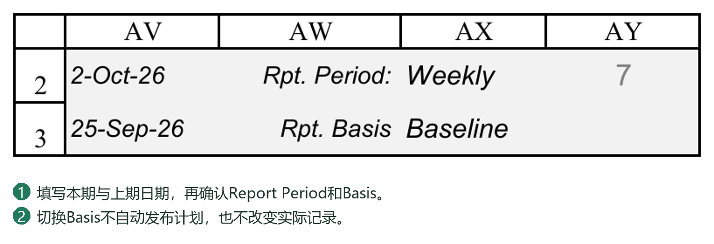
16.4 Dashboard Data的配置与数据来源
Dashboard Data用于保存和组织曲线数据，不是另一套独立的项目执行台账。
Master Curves Data
按WBS及数据类型组织各汇报日期的进度。常见类型包括Baseline、Re-schedule和Actual，分别用于基准计划、重排计划及实际曲线。
这里的WBS用于指定项目或任务范围，不是Excel行号，也不是Task ID。调整WBS编号或汇总范围后，应核对对应配置，避免曲线仍指向旧范围。
进度来源
普通任务实际进度：PC对应汇报日期的进度输入。
设计文件实际进度：VDR实际进度，经PC设计文件任务及层级汇总形成对应WBS结果。
父任务及项目总进度：PC按层级及权重汇总。
计划曲线：依据对应Basis下的任务计划、文件计划和各汇报日期计算。
Record／Refresh Actual Progress读取PC实际进度结果；读取前会按依赖顺序重算PC、VDR及PC公式，以避免读取尚未更新的公式值。
这里的“重算VDR”是更新工作表公式结果，不代表重新登记文件、执行提交／接收，也不等于自动执行VDR文件历史进度重建。若VDR历史百分比本身尚未计算或已经错误，应先处理其源数据。
Curve Setup及曲线输出
Curve Setup定义曲线名称、WBS及输出位置等。Master Curves Data中的数据还需整理到相应曲线输出区域，再用于图表和数据图片。
应区分三个动作：更新进度数据、整理曲线输出、刷新图表／图片。源数据正确，不代表已经生成的静态图片自动变成最新内容。具体操作见第17至18章。
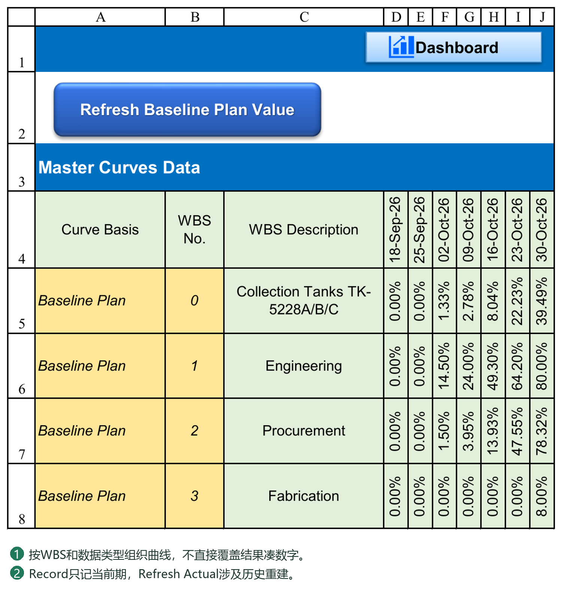
16.5 Record Actual Progress
用途
将当前Report Date对应的PC实际进度写入Dashboard Data的Actual曲线记录。
操作步骤
1. 确认Report Date、源记录及PC实际进度正确。
2. 检查Dashboard Data中所需WBS及Actual数据类型已配置。
3. 点击Record Actual Progress。
4. 如果该日期已有记录，阅读覆盖提示，决定是否替换。
5. 核对写入结果及警告，再继续更新图表和报告。
更新范围
只处理当前汇报日期对应的Actual曲线点，不会顺带补齐以前各期，也不会重新生成整条实际曲线。
例如，当前Report Date为9月25日，执行后记录9月25日的实际进度；9月18日的数据不会因为本次记录自动纠正。
异常结果
WBS无法匹配或源进度存在错误时，系统可能跳过相关项并提示，不能只看部分数据已经写入就认为全部成功。源值为错误的对应曲线单元格可能被清空；空白不表示真实进度为零。
该功能记录的是计算结果，不是完整项目备份，也不保存当时所有执行记录、权重和计算规则。
16.6 Refresh Actual Progress与历史重建
Dashboard Data中的Refresh Actual Progress
用于依据各历史汇报日期重新读取PC实际进度，重建Actual曲线。
执行前系统提示影响范围：处理日期轴中截至当前Report Date的有效日期，并覆盖这些日期已有的Actual曲线数据。晚于当前Report Date的单元格不属于本次更新范围，不会自动清空。
执行过程中，系统临时逐个切换汇报日期，重算相关公式并记录结果；结束后恢复原Report Date。因此，它不是把当前最新百分比复制到所有历史日期。
如果历史输入或VDR历史进度不完整，重复刷新也不能凭空恢复真实历史。应先补齐或纠正源数据，再重建曲线。
VDR文件历史进度重建
VDR另有历史Actual Progress处理入口，用于按提交／返回日期、Code、文件过程进度及项目规则，重新计算文件在各历史周期的进度。
该工具可选择截至汇报日的全部周期或指定日期范围，并选择覆盖已有值，或仅填充尚未登记的单元格。这些选项属于VDR历史工具，不是Dashboard Data的Refresh Actual Progress选项。
建议处理顺序
1. 纠正VDR原始登记或PC普通任务的历史实际进度输入。
2. 如涉及文件历史，先重建并核对VDR相关历史周期。
3. 核对PC在这些日期下的设计文件及项目汇总进度。
4. 执行Dashboard Data的Refresh Actual Progress。
5. 刷新曲线及报告，检查修正结果。
何时需要重建
补录了以前周期的提交、返回或实际进度。
更正了历史日期、Code或文件关联。
撤销、重新提交后，历史执行结果需要重新核对。
调整进度规则、权重或WBS范围，并决定按新口径重新计算历史。
历史口径与已发布报告
重建采用当前可用的记录及配置，不保证复现当时已批准报告采用的全部规则和权重。若本次只是修正错误，先确认是否允许改动已发布周期；若是变更计量口径，应按项目要求留下说明并保留原报告。
批量重建前保存备份。执行中发生错误时，应检查实际已写入范围，不能假定整个过程已经自动回滚。
两个按钮的选择方法
“本期数据已经核对，只需把本期写入曲线”：用Record Actual Progress。
“补录了上月的文件往来或更正了以前实际值，需要修正曲线”：先修正／重建源历史，再用Refresh Actual Progress。
“只改了报告布局、颜色或图例”：更新对应输出，不需要为此重建Actual历史。
“进度规则改成N，想看看当前结果”：先执行文件实际进度计算；若不打算追溯以前报告，不立即覆盖全部历史。
示例：为什么只Record不够
9月18日已有一条实际曲线记录。文件首次提交实际发生在9月22日，但曾误填为9月15日；9月25日才发现并改正。
1. 更正VDR真实提交日期。
2. 重建相关文件历史，核对9月18日不再包含这次提交、9月25日包含它。
3. PC在两个汇报日期下分别核对汇总结果。
4. Refresh重建Dashboard Data截至当前Report Date的历史Actual曲线。
5. 更新图表及报告。
如果仅在9月25日Record，本期可能正确，9月18日的错误旧点仍然存在。
为什么Refresh不是简单“调用一下Actual”
每个日期对应一套截止条件：文件事件不能提前计取，普通任务要读取该日期下登记的累计实际值，上层WBS还要按权重汇总。Refresh逐期取得这些结果；其中VDR工作表公式重算用于正确读取相应历史值，不是重新提交文件，也不自动补齐缺失的VDR历史计算。
为什么重算结果可能不同于旧报告
先判断是哪一种变化：
更正事实：原日期、Code或录入值错误，修正后历史应按正确事实变化。
更改口径：调整百分比、Y／N、回退规则、权重或汇总范围，用新配置重算可能得到不同结果。
更新输出：数据没变，只是旧图片未刷新；不能因此反复改源记录。
Refresh不是“恢复当时配置”的工具。需要保存原批准口径时，保留当期正式报告及对应版本，按项目约定决定是否追溯修订。
16.7 当前值、历史值及汇总结果的核对
建议分四层核对：
1. 执行事实：提交、返回、实际完成日期及进度输入是否真实。
2. 单项结果：文件或叶子任务在选定汇报日期下是否正确。
3. 汇总结果：专业、采购、制造及项目总进度是否按正确权重汇总。
4. 输出结果：Dashboard Data、曲线、Dashboard及Progress Report是否使用同一汇报日期和计划依据。
重点检查
日期是否一致：报告显示9月25日，数据不能仍来自9月18日。
进度是否提前：9月22日才发生的提交，不应出现在9月18日的实际进度中。
重复数值是否合理：连续两期无新增完成量，进度相同可能正确；有真实变化却全部相同，应检查历史输入及读取日期。
父任务是否正确：优先核对下属任务、权重及层级，不手工覆盖汇总公式。
错误是否被掩盖：#N/A、#VALUE!或未匹配WBS应查源头，不统一填零。
未来日期是否有旧值：Refresh Actual Progress不清理未来记录，发现异常残留时须核实后处理。
图表是否刷新：源数据已变、图片未变，应更新输出，而不是再次修改源进度。
最有效的核对方法，是选一个有明确发生日期的文件或普通任务，分别检查事件发生前后两个汇报周期，再追踪至对应WBS汇总及实际曲线。这样能够判断问题出在原始记录、历史计算、汇总，还是图表输出。
完成本章后，应能正确区分本期记录与历史重建，并形成“维护源记录—核对进度—记录曲线—更新报告”的日常工作流程。下一章介绍Dashboard、Lookahead及Progress Report的使用。
16.8 所有刷新按钮的边界
Refresh Baseline Plan Value：按各汇报日期计算 Baseline 计划曲线值。Refresh Re-schedule Plan Value：计算 Re-schedule 计划曲线值。两者不是改写实际进度。
Record Actual Progress：记录当前汇报日期对应的实际点；该日期已有值时会询问是否覆盖，不批量把今天的实际值填进过去各期。
Refresh Actual Progress Value：按可追溯实际记录重建历史值。Refresh Historical Actual Progress 则是 VDR 历史实际进度入口；历史重建涉及按各截止日解释文件往来，不能简单复制今天的 Actual。
Refresh Dashboard Curve Data：把主曲线数据按 Curve Setup 组织成图表需要的数据块。Refresh Dashboard Curve：更新 Dashboard 图表及相关报告图片。更新数值、组织曲线数据和绘制图表是不同层次，遇到旧图先判断哪一步未做。
普通任务的历史实际必须有当期记录。没有历史事实时，不能用今天的完成比例假造之前每期的实际进度。
16.9 历史刷新窗口中的范围和覆盖选项
All periods 选择当前Report Date及以前已有的全部实际时间轴日期。Custom range 可在From与To中指定一段已有日期，From不能晚于To，也不能把未来日期当成已发生的实际。
Overwrite existing values 勾选时会重新写入范围内已有值；不勾选时只补空白。若要纠正过去一个错误值，只补空白不会改变这个已有错误值。
执行前查看窗口显示的文件数、期数和目标值数量，再核对最后确认中的范围、From／To和覆盖方式。Cancel退出而不执行刷新；运行出错时按提示修正输入，不把窗体关闭当成历史已修正。
完成后选择至少一个“事件发生前”和一个“事件发生后”的日期核对，确认历史没有提前取得后来才收到的回复进度。
16.10 Master Curves Data：三套数据怎样保存
Master Curves Data按“数据组＋WBS＋日期”保存曲线点。Baseline Plan、Re-schedule Plan和Actual是三组独立记录；不是把同一行反复改名来切换计划。
| 内容 | 怎样填写或更新 |
|---|---|
| 数据组名称 | 保留程序识别的Baseline Plan、Re-schedule Plan、Actual，不随意翻译或改拼写。 |
| WBS No. | 填PC中真实存在的WBS，如0代表总项目，1可代表设计；不是Task ID或Excel行号。 |
| Description | 应与该WBS的任务对应；有公式的单元格保留公式，不能用手工描述掩盖WBS查找失败。 |
| 日期表头 | 由Report Period Calendar形成，使用真实日期，不手工插入一列孤立文本日期。 |
| Baseline Plan数值 | Refresh Baseline Plan Value按各日期计算并写入。 |
| Re-schedule Plan数值 | Refresh Re-schedule Plan Value按各日期计算并写入。 |
| Actual数值 | 本期用Record Actual Progress；需要历史重建时才用Refresh Actual Progress。 |
新增需要绘制的WBS范围时，应确保三组中的对应WBS记录可被正确查找，再配置Curve Setup。仅在Curve Setup输入一个名称，不会自动产生该WBS的历史实际。
16.11 用两个截止日理解Record与Refresh
假设某文件9月22日首次提交，规则计取40%，9月26日收到有效回复计取50%；报表日期轴包含9月18日和9月25日。
按真实记录计算，9月18日不能取得9月22日才发生的提交成果；9月25日可取得提交阶段进度，但不能提前取得9月26日的回复成果。这里讲的是单文件进度，汇总到设计／项目后还要按权重计算，不能把40%直接当成项目总值。
Record Actual Progress只记录当前Report Date那个曲线点。把日期设为9月25日并记录，不应把同一个当前值同时填到9月18日。
Refresh Actual Progress逐个历史截止日读取PC结果；文件历史应先由VDR历史计算正确提供。它不是将今天50%复制到两个日期，也不是凭已经保存的一张报告图片反推过去数据。
如果后来补录了9月22日的真实提交，过去漏报的数据可能在历史重建后变化；如果修改了P052／P053，按新口径重算也可能与原报告不同。先决定是否批准追溯修订，再执行覆盖，并保留已经正式发布的报告。
第17章 使用 Dashboard 与 Lookahead
17.1 Dashboard指标与进度汇总
阅读顺序
先确认项目名称、Report Date及Rpt. Basis，再查看项目总进度、设计文件状态、采购／制造进度及需要采取行动的任务。
Dashboard中的项目或分类进度通常来自PC汇总，设计文件指标还依赖VDR计划、当前Code及文件状态。曲线则来自Dashboard Data整理后的数据。不同指标应按各自含义阅读，不宜把“文件数量比例”直接当成“加权项目进度”。
计划、实际与偏差
Plan：所选计划依据下，截至汇报日应达到的进度。
Actual：截至汇报日实际取得的进度。
Variance：比较计划与实际的差异。以Actual−Plan显示时，负值表示落后。
例如，计划60%、实际45%，偏差为−15个百分点，不表示任务仅完成计划的15%。阅读时同时确认进度计量规则和权重。
需要关注的任务
Overdue to Start：计划开始日期已到，但实际进度仍为0的叶子任务。
Overdue to Finish：计划结束日期已到、已经取得部分进度但尚未达到100%的叶子任务。
Behind Plan：实际进度低于计划进度的叶子任务。
这些分类不是互斥分类，同一任务可能同时满足多个条件，不能把三个数字直接相加当作问题任务总数。完全未开始且已超过计划完成日期的任务，也不能仅靠Overdue to Finish一项判断，应结合Overdue to Start和Behind Plan查看。
文件状态
待首次提交、待Vendor重提及待Client审查用于识别下一步行动。Code代表项目定义的审查结果，不应脱离Settings中的Code及进度规则，仅凭数字大小判断业务状态。
17.2 筛选、跳转及配置维护
Dashboard中配置了交互功能的按钮或指标，可打开PC或VDR中的相关明细；并非所有显示数字都能点击。
使用方法
1. 确认当前汇报日期、Basis及所查看的项目／WBS范围。
2. 点击相应的任务关注项或文件状态入口。
3. 在PC或VDR核对筛选后的任务、文件及原始记录。
4. 查看其他内容前，检查并按需要恢复或清除筛选，避免把暂时未显示的记录误认为已经丢失。
查询和筛选不会修改计划、执行记录或文件状态。Viewer中允许的查询也不代表可以编辑源数据。
调整Dashboard布局
部分PC筛选按钮通过形状的替代文字指定动作及WBS范围单元格。例如：
PCATTN|OVERDUE_START|M4
这里M4只是示例，表示读取Dashboard该单元格中的WBS编号，不表示筛选PC第4行。
移动对应WBS输入位置或复制一个分类区后，应核对按钮替代文字及显示数量的公式。只改可见标题，不会自动把筛选范围改成新的WBS。
发生配置提示时，按提示检查：
范围单元格是否为空、包含错误或指向错误位置。
该WBS是否仍存在于PC。
按钮的动作和替代文字是否保持正确格式。
显示数量与筛选按钮是否采用同一范围及判断条件。
PC／VDR结构调整还应同步检查Settings中的结构Token。按钮范围配置与工作表结构Token用途不同，不能只改其中一处就认为全部适配完成。
17.3 Lookahead时间窗口与任务查询
Lookahead不是第二套计划，而是从PC任务及VDR文件状态中整理出的行动清单，适合用于周会、短期协调及责任跟踪。
查询条件
Reference Date：查询参考日期。
Period：未来7、14、21或30天，或Custom自定义截止日期。
Task Group：查询的任务组或WBS范围。
Action Required：全部行动或指定类别，例如待开始、待完成、逾期、落后、Vendor／Client行动及数据问题。
Schedule Basis：沿用PC当前Baseline或Re-schedule依据。
自定义截止日期不能早于参考日期。上述未来天数表示日期窗口，不是按任务D／ED单位计算的工作日工期。
Task Group Setup
通过任务组名称与WBS根编号定义范围，例如Procurement对应项目中的采购WBS。项目WBS调整后，应同步维护该配置；只改组名称不等于改变范围。
查看结果
结果可包含优先级、行动原因、责任方、WBS、任务说明、计划日期、计划／实际进度、偏差、到期日期及文件状态等。一项任务可能同时列出多个行动原因。
列表以叶子任务为主，父任务汇总不会重复作为一项执行任务列入。出现Data Issue或文件匹配问题时，先核对源数据，不直接把它当作真实逾期事项。
进入页面或修改查询条件后，系统会刷新结果。PC计划、进度或文件状态改变后，应重新刷新并核对，不能把之前截取的清单当作持续实时更新的记录。
双击结果行可定位源任务；已关联的设计文件优先打开VDR，普通任务定位PC。若源行受原有筛选限制而未显示，应检查筛选，不要误认为跳转目标不存在。
参考日期与进度口径
Lookahead参考日期用于判断时间窗口，但单独修改它不等于重建历史实际进度。用于正式周期汇报时，建议与PC的Report Date保持一致，并先完成对应日期的进度更新。不能把参考日期改到过去，就认为文件当前Code及全部执行状态自动回到了当时。
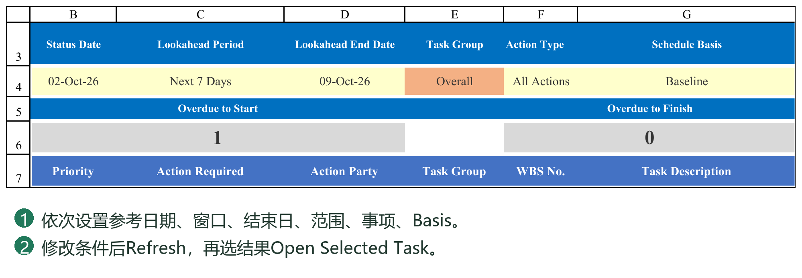
17.4 Dashboard 数字与点击筛选
Overdue to Start、Overdue to Finish、Behind Plan 分别用于查看逾期未开始、逾期未完成、落后计划的任务。Engineering 的 Due Not Issued、Awaiting Resubmit、Awaiting Review 对应设计文件状态，点击后到 VDR 查看符合条件的文件。
修改看板分区名称不等于修改筛选范围。范围由关联 WBS 和按钮替代文字配置决定；更改版面或移动范围单元格后，要一并检查按钮仍指向正确的 WBS 单元格。
若提示“The WBS scope cell is blank”，根据提示找到地址，在该处填正确WBS或修正按钮替代文字引用，不能把整个看板数字手填为0。参见20章的排错顺序。
比较数字与结果列表时先清除旧筛选，核对报表日期、Basis、WBS范围和源文件状态。筛选看到的行数与统计对象不一致时，要检查父任务、空行或隐藏行是否被误当成文件数量。
17.5 Lookahead 六个筛选条件
Reference Date：本次查询的参考日期。Period：时间窗口类别。Custom End：选用自定义窗口时的结束日期。Task Group：工作范围。Action Type：关注事项。Schedule Basis：按哪套计划判断。
设置条件后点击 REFRESH LOOKAHEAD。列表是查询结果，不是新的任务主表；修改计划或往来后，重新刷新才能保证它反映当前状态。
在结果数据行选中任务，再点 OPEN SELECTED TASK。设计文件优先按 Doc No. 打开 VDR 的对应文件；普通任务定位回 PC。如果任务已删除、移动或清单刚更新，先 Refresh，再定位；不要用旧列表的物理行号判断任务身份。
返回空列表时，先扩大日期窗口并选择较宽Task Group与Action Type，逐步缩小；空列表不一定是系统错误，也可能确实没有满足条件的任务。
17.6 双击定位及 Viewer 中的查询
Lookahead结果行也可使用双击定位。双击范围应在结果数据行内，不能把标题或空白行当成有效任务。
Viewer允许的查询包括导航、Dashboard关注事项、Lookahead刷新与结果定位，以及部分区域显示切换；这不等于允许写入业务计划或实际记录。Viewer中看到的是已保存业务数据，执行核心写入仍需要有效授权。
筛选结果不用于直接编辑原任务。需要改日期或文件状态时，先定位到负责该数据的页面，再按对应操作处理。
17.7 Dashboard的四类配置不要混为一谈
Dashboard不是一张只需改标题的海报。当前版同时使用WBS、任务描述、文件分类及按钮范围；它们分别控制不同内容。
| 配置对象 | 实际作用与维护方法 |
|---|---|
| 项目／分区进度汇总 | 从PC相应任务及权重、计划／实际字段取得数据。部分行按任务描述匹配，应与PC名称一致。 |
| Engineering分类行 | 按PC文件分类汇总，例如General、Drawing、Calculation；分类文字应与源分类完全对应。 |
| 关注事项筛选范围 | 按按钮替代文字所引用的WBS单元格取得范围，不只看按钮所在分区标题。 |
| 图表 | 由Dashboard Data的Curve Setup及输出数据块生成；移动表格标题不会自动改变曲线来源WBS。 |
以当前样稿为例，项目总范围为WBS 0，Engineering为1，Procurement为2，Fabrication为3；这些是示例项目的结构，不能假定所有项目必须如此。当前总览中Engineering等文字还用于匹配PC任务描述，Engineering分类行又使用另一层分类匹配。
因此，将Engineering改成“设计管理”时，应先明确是仅改变显示文字，还是也更改了PC任务名称。若该单元格是公式的匹配条件，单独改文字可能导致空值或错误。不要用手填汇总百分比的办法修复。
17.8 配置Dashboard分区与点击筛选
先完成PC的WBS和权重，再调整看板。按下面顺序验收一个分区，例如Procurement：
1. 在PC找到采购父任务，记下真实WBS、任务描述及当前汇总进度，不记物理行号。
2. 核对Dashboard对应行的匹配名称和公式来源；确认显示的权重、上一期、本期、累计计划及实际分别取对了字段。
3. 找到该分区的WBS范围单元格。当前样稿采购范围配置在M49，但不同布局以实际配置为准。
4. 选中该分区的关注事项按钮，查看替代文字。类似PCATTN|OVERDUE_START|M49表示逾期未开始、范围从M49读取。M49内应是WBS值2等，不是“采购”文字或Task ID。
5. 若移动了范围单元格，核对按钮引用是否同步；显示标题不变并不能证明引用没变。保留命令部分和分隔符，不随意翻译内部指令。
6. 准备一项符合条件、另一项不符合条件的真实或测试任务，点击筛选，确认只看到该WBS下正确的叶子任务；返回Dashboard后检查正常视图。
筛选属于查询，不修改日期、进度或WBS。范围为空、WBS不存在或配置无效时，应按提示修正指定单元格／替代文字，而不是重复点击、手填数字或修改授权状态。
17.9 Engineering文件数量与审批分布怎样阅读
先区分Plan、Actual和Var，再看Issued及Code分布。数量是文件份数，设计进度是加权百分比，两者不能互相代替。
Plan：按当前Basis的计划时间轴和汇报日期判断应达到的状态。计划已发出不表示文件实际已交付；计划Code3／Code2／Code1分布按配置进度门槛解释，也不是从真实客户回复里统计。
Actual：根据VDR当前实际状态统计是否已提交、当前Code等。未回复的已提交文件可处于Issued & Awaiting Review，并非Code3；客户确实回复3才属于相应Code类别。
Var：比较计划与实际的差别，应先核对两行口径和日期，不把负数一概当作公式错误。
Due But Not Issued、Awaiting Resubmit、Awaiting Review属于行动关注项。它们表达该谁做什么，与Code批准分布是不同维度，不能把所有数字相加要求等于总文件数。
更换Code体系时的额外检查
P052、P053和Planner定义一致，是文件进度计算的必要条件，不代表Dashboard每个展示公式都会自动把“Code1”改为“A”。当前实际审批分类公式中还有按3、2、1及AFC／FIN／ASB等具体值统计的内容；改为其他Code后，应同时维护相应统计公式、标题和筛选分类，验证实际结果。计划审批分布还应核对Code3／2／1角色对应的进度门槛及顺序。不能只改紫色定义区后就宣称整张看板已经全面适配。
17.10 Dashboard数字不对时怎样定位
先选择一份文件或一项任务，沿数据链逐层核对，不从最终数字倒着猜。
1. 日期与Basis：PC输入的Report Date及Rpt. Basis是否为本次要查看的日期和计划；Dashboard显示是否一致。
2. 事实：VDR实际提交／返回／Code或PC普通任务实际记录是否正确。报告日期之前没有发生的事件不能提前计取。
3. 单项进度：文件进度规则、当前及历史结果是否正确；普通任务D／ED和计划日期是否正确。
4. 汇总：WBS层级、权重、文件分类及父任务公式范围是否正确；文件数量正确不代表权重正确。
5. 看板：匹配名称、范围、公式和Code分类是否与源数据一致；是否仍有旧筛选影响人工核对。
6. 曲线：Master Curves Data是否已经记录本期点；输出数据块和静态图是否刷新。当前看板正确、曲线仍旧，往往是不同更新层未完成。
若某个具体单元格为#N/A或#VALUE!，记录地址、公式及所查范围，再从上游修正。不要用IFERROR一律显示0来掩盖缺配置或源记录错误，否则报告看似完整却不可信。
17.11 Lookahead按工作范围组织周会清单
Lookahead右侧的Task Group配置把可读组名连接到WBS Root。比如Engineering→1、Procurement→2；组名供人选择，WBS Root决定查询范围。调整PC结构后检查这些配置，不用Task ID或行号替代WBS。
一个采购周会示例
1. Reference Date采用本次状态截止日，确认是否与PC Report Date一致。
2. Period选择未来7天等需要的窗口；Custom End只在相应自定义方式下填写有效结束日期。这里的查询窗口不能混同任务的7D工作日工期。
3. Task Group选择Procurement，Schedule Basis选择本次使用的Baseline或Re-schedule。
4. Action Type先选All Actions，再REFRESH LOOKAHEAD；需要时分别查看Overdue to Start、Overdue to Finish、Behind Plan、Due to Start、Due to Finish。
5. 设计文件协调可改用Engineering及Vendor／Client相关行动；Data Issue用于查看日期或VDR关联问题，不表示这些任务已经完成。
6. 选中结果行后OPEN SELECTED TASK或双击定位到源记录。修改源计划／文件状态后返回并Refresh，旧查询列表不会替用户持续重建。
逾期、落后、未来到期是不同条件，同一任务可能符合多个条件。会议清单用于分派行动，不用于直接覆盖源数据。空结果先放宽范围和条件，再判断是否确实没有相关任务。
第18章 生成曲线与周期进度报告
18.1 曲线配置、刷新及数据图片
Curve Setup
在Dashboard Data中定义需要展示的曲线。主要配置包括：
Curve Name：曲线名称。
WBS No.：进度来源范围。
Output Start Cell：Dashboard Data中曲线数据块的输出起点。
Chart Cell：Dashboard图表的放置起点。
Chart Width／Height：图表尺寸。
Progress Report图片目标范围：报告中放置曲线图片的区域。
部分现有配置或提示仍可能保留Biweekly Report字样，指的是当前Progress Report相关输出，不代表报告只能采用双周周期。
输出起点不能覆盖Curve Setup，多个数据块也不能互相重叠。生成区域由程序维护，刷新可能清理旧输出；不要把需要保留的手工说明放在自动生成区域内。
推荐刷新顺序
1. 更新源进度；计划有变化时刷新对应计划曲线，实际数据按第16章记录或重建。
2. 执行Refresh Dashboard Curve Data，整理曲线输出数据块。
3. 执行Refresh Dashboard Curve Charts，生成／更新Dashboard图表、下方数据图片及已配置的Progress Report图片。
4. 检查完成提示和各输出位置。
刷新曲线数据不等于重建图表；刷新图表也不会替代源进度更新。
累计值与本期值
累计曲线表示截至各日期的完成比例，本期柱形表示对应期间的变化量。例如，上期累计20%、本期35%，本期新增为15个百分点，不是35%。比较曲线时应确认日期采样周期一致。
图片与清晰度
Dashboard的数据表及Progress Report中的组合图可能以静态图片显示。它们适合排版和发布，但源数据改变后需要重新生成。
调整图表宽高或报告目标范围后，应检查字体、长日期、图例及表格是否清晰。目标区域过小会导致图片整体缩小；反复拉伸图片不能增加原始信息量。
生成失败
读取提示中的Curve Setup行号和具体原因，先检查输出数据块、日期、目标位置及尺寸。图片更新失败时，系统可能保留原有图片，不能把“仍然看得到图”当成刷新成功。
确认数据及配置正确后可重新执行；若持续失败，应保留提示并联系技术支持，不应发布缺图或仍显示旧数据的报告。
18.2 自定义汇报周期的Progress Report
Progress Report用于组织项目概况、进度指标、曲线及说明。它不局限于双周报告，可配合日报、周报、双周、月末或每月固定日期等项目汇报安排使用。
周期设置与日期轴
汇报周期按Settings及PC相关配置确定。需要改变日期池或周期结构时，先重建Report Period Calendar，再核对各页面日期及历史数据，不能仅修改报告标题中的“Weekly／Monthly”就认为数据口径已经改变。
报表日历提供可用日期，曲线按所选周期整理展示。日期池缺少必要日期时，输出不会凭空产生真实的历史实际数据。
每期使用
1. 确认本期Report Date、汇报周期及Basis。
2. 完成本期源记录、进度与Dashboard Data更新。
3. 刷新报告所用曲线及图片。
4. 检查自动引用的项目名称、日期、进度及标题。
5. 补充本期完成事项、风险、待协调事项及下期安排等人工说明。
数据指标与文字说明应相互印证。例如，实际进度落后时，应说明原因和措施，而不是仅展示一条曲线。
切换Basis或Report Date后，单元格公式与静态图片的更新方式不同，应分别核对。修改报告上的显示文字，也不会反向改变PC计划或VDR记录。
18.3 报告内容调整、打印及PDF输出
可以按项目要求调整报告标题、说明文字、Logo、版式和分页。引用项目数据的公式及已配置的图片目标区域应保留有效关联；布局改动后，检查Curve Setup是否需要同步调整。
建议在副本中进行较大的版式修改，先验证数据引用和图片刷新，再应用到正式项目。不要仅凭页面外观正常就认定公式仍指向正确位置。
打印前检查
打印区域覆盖全部需要发布的内容，不包含配置表及辅助数据。
纸张、方向、边距和缩放符合要求。
分页没有截断曲线、表格或关键说明。
字体及图片在实际页面尺寸下仍可阅读。
PDF输出
在Excel中使用文件→导出或另存为PDF，按需要选择当前工作表或指定打印范围。输出前先查看打印预览，避免误把整个工作簿全部导出。
导出后打开PDF，检查总页数、日期、图表、文字截断及空白页。PDF是发布时的静态结果，不会随PMS后续修改自动更新；修订后需要重新导出并按项目要求管理版本。
18.4 对外发布前的检查
发布前至少确认：
1. 项目名称、报告编号、汇报日期和周期正确。
2. Baseline／Re-schedule依据与本次汇报要求一致。
3. 文件及普通任务的实际记录已更新到本期。
4. 项目总进度与各部分汇总一致，偏差解释合理。
5. Dashboard指标、曲线及Progress Report采用一致口径。
6. 没有#N/A、#VALUE!、未解决的配置提示或异常空白。
7. 图表及图片已经刷新，没有遗留旧日期、旧数据或缺图。
8. 风险、责任方和下期行动已明确，文字与数据一致。
9. Logo、联系方式及其他对外信息符合本次发布要求。
10. PDF或打印件已实际检查，并保留对应版本。
若对外分享工作簿，还应核对授权模式及允许显示的页面。Viewer限制编辑和核心功能，但不等于资料脱敏；不应发送的项目数据，应在独立发布副本中处理。
本章帮助输出数据一致、图片完整、周期明确的进度报告。第19章提供Settings参数参考，第20章介绍系统检查和常见问题处理。
18.5 曲线和图片不完整的排查顺序
先核对 Dashboard Data 的日期表头与 PC 汇报日期一致，Curve Setup 中 WBS真实存在，Output start cell、Chart cell、宽高均有效且彼此不重叠。
依次核对主曲线数据、输出数据块、Dashboard图表、图下数据图片、Progress Rpt中的报告图片。上游数值错误时先修上游，不能只重做截图；上游正确而图片缺失时，重新运行图表刷新并检查警告中的 Curve Setup 行。
刷新成功提示和“Please check”警告可能同时出现，表示部分图表完成、部分图片失败，不应理解成全都成功。对外输出前逐一查看应有的图表和数据表。
不要连续点击刷新按钮或在图表生成中切换文件。若重复失败，保留具体行号、目标位置与错误文字，检查目标区域、保护状态及是否有重叠或不适用的图表设置。
18.6 从源进度到报告图片：四层更新顺序
| 层次 | 操作与应核对的结果 |
|---|---|
| 源业务结果 | VDR文件进度、PC普通任务与父任务汇总正确；日期和Basis正确。 |
| Master Curves Data | 记录／重建Actual，按需要刷新Baseline和Re-schedule计划；目标WBS、日期交点有正确百分比。 |
| 曲线输出数据块 | Refresh Dashboard Curve Data按Curve Setup整理成图表数据，日期及三条累计／期间数据正确。 |
| 图表与报告图片 | Refresh Dashboard Curve生成Dashboard图表、数据表图片及Progress Rpt图片；逐一检查本次刷新结果。 |
前一层正确，不代表后一层自动完成。Record Actual Progress不会替用户重排计划，Refresh Dashboard Curve不会凭空补齐缺失的历史Actual，打印PDF也不会自动修复旧图片。
常规本期报告可采用：更新实际事实与进度 → Record Actual Progress → 计划变动时刷新相应计划值 → Refresh Dashboard Curve Data → Refresh Dashboard Curve → 核对Progress Rpt → 导出报告。只有确需纠正历史时才加入历史重建，不必每期无条件覆盖全部历史。
18.7 Curve Setup各字段的填写方法
| 字段 | 填写方法与边界 |
|---|---|
| Curve Name | 图表可读名称，如Procurement Progress Curve；不代替WBS来源。 |
| WBS No. | Master Curves Data中可找到的真实WBS，0为总项目。 |
| Output Start Cell | Dashboard Data内输出块的左上角，如C60；不是图表位置。 |
| Chart Cell | Dashboard上的图表起点，如Dashboard!O49；不是曲线数据源。 |
| Chart Width | 图表宽度，数值单位为Excel对象使用的点；不是列数或像素。 |
| Chart Height | 图表高度，同样为点；采用正数并在实际页面检查。 |
| Biweekly Report Chart Range | Progress Rpt图片目标范围，如Progress Rpt!B236:M259；标题仍保留Biweekly不表示只能双周汇报。 |
当前配置中，Dashboard Data的C40、C50、C60、C70分别作为几条曲线的数据起点；这只是当前样稿安排，不是允许任意占用的空白格。生成数据块需要连续8行：曲线标题、日期、累计Baseline、累计Re-schedule、累计Actual、期间Baseline、期间Re-schedule、期间Actual。
横向还需要覆盖选定日期数，并留有清理旧输出的余量。程序可能清理该8行中更右侧的旧内容，因此不要把手工说明或另一张表放在同一输出行的右边。数据块、Curve Setup和Master Curves Data不得重叠；图表与报告图片目标也应互不遮挡。
18.8 新增或调整一条曲线的分步操作
建议先在副本中配置一条，再扩大到全部曲线；不是要求每次日常刷新都复制项目。
1. 确定要展示的PC父WBS，例如采购WBS 2，并核对它的汇总百分比。
2. 检查Master Curves Data三组中能否找到该WBS及所需日期。计划值和实际值缺失时先补相应数据，不直接在图表上画线。
3. 在Curve Setup的有效配置行填写曲线名、WBS、空闲数据起点、Dashboard图表起点、宽高和Progress Rpt目标范围。不要在配置表中间留一个空白终止行后继续堆放未被读取的设置。
4. 保持当前表头名称及结构，例如Output start cell、Chart cell、Chart width／height、Biweekly report chart range；这些不是可随意翻译的展示标题。
5. Refresh Dashboard Curve Data。若提示输出布局有冲突，按具体配置行修正；该预检失败不代表可以忽略错误继续刷新图表。
6. 检查生成块：日期是真日期，累计百分比对应Master值，期间数据对应相邻期间变化，Baseline／Re-schedule口径正确。
7. Refresh Dashboard Curve，再检查Dashboard及Progress Rpt的图、图下数据表是否齐全，是否挤占其他内容。输出区域由程序维护，下一次刷新可能替换生成对象，不把这些对象当成永久手绘内容。
8. 改一次Report Date或一项计划，再按相应更新顺序验证，确认新增曲线不是只在首次生成时看起来正确。
18.9 Basis、日期范围和样式怎样影响曲线
Basis控制是否展示Re-schedule
Baseline与Actual仍各有数据来源；当前Basis为Re-schedule且存在对应数据行时，输出会包含Re-schedule曲线。不是当前Basis为Baseline就把保留的Re-schedule数据删除，也不是切换Basis后旧静态图片自动改变。切换后按18.6更新输出和图表，并核对重排数据是否齐全。
曲线日期范围
Settings的Dashboard curve date start／end cell用于限定曲线使用的日期区间，应指向Master Curves Data中的有效日期表头。起止倒置、指向文字或超出有效日期轴，应先修正配置。扩大项目日历后，也要确认曲线终点是否覆盖新日期，不只看PC计划结束日期已变化。
颜色与文字
曲线样式参数控制Baseline／Re-schedule／Actual及期间柱的颜色、标题和坐标字体、线宽、标记、柱间距、图例、日期角度及坐标上限。修改这些参数后重绘图表才生效；它们不改变进度计算规则。百分比坐标上限应与图表数据单位一致，避免把100%写成100后造成压缩失真。
报告版式
修改Progress Rpt行高、分页或图表目标位置后，应同步检查Curve Setup的报告范围。只挪动旧图片不能保证下一次刷新仍在该位置；应调整配置后重新生成并检查打印预览。
18.10 曲线与报告的发布前验收例子
以采购曲线为例，任选一个已记录的汇报日：
1. 在PC确认采购父WBS累计计划和累计实际。
2. 在Master Curves Data找到该WBS和日期，核对Baseline／Re-schedule及Actual来源，注意不把期间增量和累计值对比。
3. 在Curve Setup指定的输出块找到同一天，确认与主数据一致。
4. 查看Dashboard图表及下方数据表，确认日期、数值、图例、Basis与输出块一致。
5. 查看Progress Rpt的相应图片及报告标题，确认本期日期正确且未保留上一期旧图。
6. 打印预览或导出PDF，确认图、数据表、文字不被截断，没有漏图或异常空白页。
如果刷新提示“部分图片未创建”，不能仅因出现成功数量就发布报告。程序可能保留旧图片避免直接丢图，但保留旧图不代表它已更新；应修正目标范围或环境问题、重新刷新并逐张核对。具体排错见18.5和第20章。
第19章 查询 Settings 参数与调整配置
19.1 如何查找和修改一个参数
Settings 的参数编号 Pxxx 是阅读顺序，名称说明用途，Token 用于结构定位。不同项目可能因增加参数而重排编号，应按英文参数名称和 Token 查找。
项目参数通常只修改输入值；公式值应保留公式。结构参数用于指向工作表、单元格、行列或范围，改变布局后要检查引用，而不能直接把Token文字改成自己喜欢的名称。
下方参数参考列出本版 Settings 中的项目参数；结构参数另按区域说明。按Ctrl+F搜索英文名称或Token可快速定位，再阅读相应业务章节。
19.2 修改参数后必须完成的动作
工作周或假日：核对任务D／ED，重新计算受影响计划；涉及已发布文件计划时，回到Planner重新核对并发布；需要历史重算时另行确认。
报表日期范围或周期：执行 Rebuild Report Period Calendar，再核对 PC、VDR、Dashboard Data 的日期及历史保留，不只改一个显示日期。
P052进度百分比或计划轮次开关、P053行为：重新计算Planner计划进度及当前实际，按需重新写入目标计划时间轴；历史重算不自动替用户决定。
文件识别：重扫待处理文件，核对Revision与角色，不自动改历史。发文编号规则：先检查与既有Register的规则组和序号连续性，不把新格式当成自动清零编号。
曲线颜色与尺寸：重新刷新图表。WBS层级样式：重新执行Apply WBS Color&Indent。传送单模板：下一次新生成才使用新布局；以前输出不会自动重排。
19.3 结构 Token 的维护界限
PC Structure 定位任务、日期、工期单位、前置关系、进度、甘特图及报表输入；Planner Structure 定位锚点、文件区、日期、周期及Task Mode；VDR Structure 定位文件字段、版本记录、日期轴与当前状态；GDR Structure 定位字段及每轮宽度。
移动Settings中的整行通常会保留Token文本，公式引用也会随正常插入移动更新；删除Token、复制成重复Token、把引用公式改成固定文字、移动业务字段却只移动标题，仍可能破坏定位。
“有Token”不等于可任意交换所有表格结构。某些重复Round内部字段有约定顺序和偏移，表头合并也不能把两个业务数据列合成一列。较大布局调整应在副本中检查，并运行Check System Consistency。
19.4 备份共享和显示 参数参考
相关操作见3.2、3.5、3.6。本组包含项目参数、规则表及表格边界，按各项填写说明维护。以下Token应保留原文；P序号仅帮助查找。
| 参数编号与名称 | Token |
|---|---|
| P001 Automatic Backup Path Keyword | #AUTOBACKUPPATHKEYWORD# |
| P002 Workbook VDR-only sharing mode | #WORKBOOKVISIBILITYMODE# |
| P003 Workbook | #LOCKNAVIGATIONOBJECTS# |
| P004 Automatic backup retention | #AUTOBACKUPMAXFILES# |
| P005 Normal | #NORMALVISIBLESHEETS# |
填写说明
Automatic Backup Path Keyword
填路径中的识别关键字，不是备份目的路径。当前工作簿路径包含它时，打开及成功保存后按配置备份到本项目Backup；留空不启用该自动备份。备份依据最后成功保存的磁盘文件。
Workbook VDR-only sharing mode
Y启用VDR-only共享；N使用正常可见页配置。不是注册码或取消授权开关，重新打开时按共享配置生效。
Workbook
Y锁定导航等界面对象，避免误移动；N便于设计者调整形状。它不等同于Viewer的业务编辑权限，也不解除核心功能授权。
Automatic backup retention
输入大于等于1的整数，限制匹配本工作簿的自动备份保留数量；达到上限后旧自动备份会按规则清理。不是整个Backup目录总文件数。
Normal
填写正常模式允许显示的工作表列表，用竖线分隔。应使用有效页名，保留必要工作入口；不是所有隐藏的内部页都应展示给用户。
19.5 报表日历 参数参考
相关操作见4.3—4.6。本组包含项目参数、规则表及表格边界，按各项填写说明维护。以下Token应保留原文；P序号仅帮助查找。
| 参数编号与名称 | Token |
|---|---|
| P006 Calendar project start date | #REPORTDATECALENDARSTARTDATE# |
| P007 Calendar project finish date | #REPORTDATECALENDARFINISHDATE# |
| P008 Report Calendar Coverage End | #REPORTDATECALENDARCOVERAGEENDDATE# |
| P009 Days before project start | #REPORTDATECALENDARSTARTBUFFERDAYS# |
| P010 Days after calendar coverage end | #REPORTDATECALENDARENDBUFFERDAYS# |
| P011 Daily report dates enabled | #REPORTDATECALENDARDAILYENABLED# |
| P012 Daily report interval days | #REPORTDATECALENDARDAILYINTERVALDAYS# |
| P013 Weekly report dates enabled | #REPORTDATECALENDARWEEKLYENABLED# |
| P014 Weekly report weekday | #REPORTDATECALENDARWEEKLYDAY# |
| P015 Biweekly report dates enabled | #REPORTDATECALENDARBIWEEKLYENABLED# |
| P016 Biweekly anchor date | #REPORTDATECALENDARBIWEEKLYANCHORDATE# |
| P017 Monthly fixed days enabled | #REPORTDATECALENDARMONTHLYDAYSENABLED# |
| P018 Monthly fixed days | #REPORTDATECALENDARMONTHLYDAYS# |
| P019 Month-end dates enabled | #REPORTDATECALENDARMONTHENDENABLED# |
| P020 Safety limit for generated dates | #REPORTDATECALENDARSAFETYDATECOUNT# |
填写说明
Calendar project start date
项目开始日期通常引用PC总任务Start，保留公式及其真实日期值。若为空，先修项目启动锚点，不手填一个字符串冒充日期。
Calendar project finish date
项目计划Finish通常引用PC总任务汇总结果，保留公式。详细计划尚未完成时不要为建日历强行覆写总任务Finish。
Report Calendar Coverage End
可手工指定日期作为日历至少应覆盖到的结束日。用于初期未排完计划时提前建日期轴；设置后运行Rebuild。它不是合同Finish或计划批准日期。
Days before project start
填写非负整数，在项目开始前补足所需日期范围；扩大的是报表日历，不提前任务Start。
Days after calendar coverage end
填写非负整数，在日历覆盖结束后增加缓冲；不能借此无限扩展时间轴。
Daily report dates enabled
Y启用日报或固定日间隔，N不使用这一类日期；可与周、月规则合并。
Daily report interval days
填写正整数天数。启用每日规则时按该间隔生成日期，不是任务工期。
Weekly report dates enabled
Y生成每周汇报日，N不生成此类日期。调整后运行Rebuild。
Weekly report weekday
填写项目指定星期，例如Friday。它决定周报日期，不决定Vendor休息日。
Biweekly report dates enabled
Y启用双周，N不使用。双周间隔为14天，不是每月固定两次。
Biweekly anchor date
填写真实锚定日期、返回日期的公式或有效日期单元格引用，不能只填Friday等星期文字。项目已形成历史后，不应随意挪锚点以使某一周刚好进入报告。
Monthly fixed days enabled
Y启用每月固定日期；N不使用。它可与月末规则同时启用，重复日期会去重。
Monthly fixed days
填项目要求的日号列表，例如8,24；不是一串完整Excel日期。生成后核对各月实际日期，特别是月末边界。
Month-end dates enabled
Y生成月末日期；N不使用。月末报表日与工作日历中的最后工作日不是同一概念。
Safety limit for generated dates
填写合理的正整数，作为生成日期数量的安全上限。先缩小错误的范围或过密周期，再考虑提高，不应仅为消除报警填极大值。
19.6 曲线样式 参数参考
相关操作见18.1、18.5。本组包含项目参数、规则表及表格边界，按各项填写说明维护。以下Token应保留原文；P序号仅帮助查找。
| 参数编号与名称 | Token |
|---|---|
| P021 Dashboard curve date start cell | #DASHBOARDCURVEDATESTARTCELL# |
| P022 Dashboard curve date end cell | #DASHBOARDCURVEDATEENDCELL# |
| P023 Dashboard curve plan color | #DASHBOARDCURVEPLANCOLOR# |
| P024 Dashboard curve reschedule color | #DASHBOARDCURVERESCHEDULECOLOR# |
| P025 Dashboard curve actual color | #DASHBOARDCURVEACTUALCOLOR# |
| P026 Dashboard curve period plan color | #DASHBOARDCURVEPERIODPLANCOLOR# |
| P027 Dashboard curve period reschedule color | #DASHBOARDCURVEPERIODRESCHEDULECOLOR# |
| P028 Dashboard curve period actual color | #DASHBOARDCURVEPERIODACTUALCOLOR# |
| P029 Dashboard curve title font size | #DASHBOARDCURVETITLEFONTSIZE# |
| P030 Dashboard curve axis font size | #DASHBOARDCURVEAXISFONTSIZE# |
| P031 Dashboard curve line width | #DASHBOARDCURVELINEWIDTH# |
| P032 Dashboard curve marker size | #DASHBOARDCURVEMARKERSIZE# |
| P033 Dashboard curve column gap width | #DASHBOARDCURVECOLUMNGAPWIDTH# |
| P034 Dashboard curve legend position | #DASHBOARDCURVELEGENDPOSITION# |
| P035 Dashboard curve date label angle | #DASHBOARDCURVEDATELABELANGLE# |
| P036 Dashboard curve cumulative axis maximum | #DASHBOARDCURVECUMULATIVEAXISMAX# |
| P037 Dashboard curve period axis maximum | #DASHBOARDCURVEPERIODAXISMAX# |
填写说明
Dashboard curve date start cell
曲线日期轴首个单元格的结构引用，通常由重建和引用公式维护，不填一个单独的日期替代地址。
Dashboard curve date end cell
曲线日期轴末个单元格的结构引用，应与实际时间轴一致，不固定抄示例末列。
Dashboard curve plan color
Baseline累计曲线颜色，输入六位十六进制RGB，如FF0000，刷新图表后查看。
Dashboard curve reschedule color
Re-schedule累计曲线颜色，RGB六位文本，避免与Baseline和Actual难以区分。
Dashboard curve actual color
Actual累计曲线颜色，RGB六位文本；改色不改实际值。
Dashboard curve period plan color
本期Baseline柱形颜色，RGB六位文本。
Dashboard curve period reschedule color
本期Re-schedule柱形颜色，RGB六位文本。
Dashboard curve period actual color
本期Actual柱形颜色，RGB六位文本。
Dashboard curve title font size
曲线标题字号，输入合适正数，刷新后检查是否遮挡或截断。
Dashboard curve axis font size
坐标轴字号，输入合适正数，不为塞入过多日期而缩得无法阅读。
Dashboard curve line width
曲线线宽，输入合适数值；只改变显示。
Dashboard curve marker size
数据点标记尺寸，输入合适数值；只改变显示。
Dashboard curve column gap width
柱形间隙宽度，按图表允许的百分比数值填写，刷新后检查密度。
Dashboard curve legend position
使用本版支持的图例位置名称，例如Top。不是随意的单元格地址。
Dashboard curve date label angle
日期标签旋转角度，例如90；调整后核对日期仍清晰。
Dashboard curve cumulative axis maximum
累计进度轴最大值，按Excel比例输入，例如1代表100%。不能填100却期待它表示100%。
Dashboard curve period axis maximum
本期进度轴最大值，按比例输入，例如0.5代表50%；改变坐标轴不会改变进度数据。
19.7 设计文件和参与方 参数参考
相关操作见9.1、11.1、12.4。本组包含项目参数、规则表及表格边界，按各项填写说明维护。以下Token应保留原文；P序号仅帮助查找。
| 参数编号与名称 | Token |
|---|---|
| P038 Engineering Design Document Parent WBS | #PCDESIGNWBSROOT# |
| P039 Engineering Design WBS Task Name | #PCDESIGNWBSTASK# |
| P040 Document type delimiter symbol | #DOCTYPESEP# |
| P041 File types start with which delimiter? | #DOCTYPESTARTSEP# |
| P042 File types end with which delimiter? | #DOCTYPEENDSEP# |
| P043 Revision prefix | #REVPREFIX# |
| P044 Strip revision prefix | #STRIPREVPREFIX# |
| P045 Related file markers | #RELATEDFILEMARKERS# |
| P046 Vendor Name | #VENDORNAME# |
| P047 Client Name | #CLIENTNAME# |
| P048 Clear client review on same revision | #CLEARCLIENTREVIEWONSAMEREV# |
| P049 VDR storage root folder name | #VDRROOTFOLDER# |
| P050 VDR reminder period (days) | #VDRALERTDAYLIMIT# |
| P051 SubVendor Name & Suffix & TR rule table | #SUBVENDORCODETABLESTART# |
填写说明
Engineering Design Document Parent WBS
填写PC中设计任务父WBS，例如1，而非Task ID或行号。导入将在该设计范围组织文件任务。
Engineering Design WBS Task Name
设计父任务名称。更改后核对PC任务描述，不代表更改VDR正式文件编号。
Document type delimiter symbol
用于从Doc No.提取类型的分隔符，例如连字符。它不是文件名Revision规则的完整正则。
File types start with which delimiter?
填类型开始于第几个分隔符后，使用有效正整数；与结束序号配套，不启用类型提取时按说明留空。
File types end with which delimiter?
填类型结束前的分隔符序号，必须大于开始序号。分隔符数量不足会提取不到类型，应核对实际Doc No.结构。
Revision prefix
版本前缀文本，例如Rev。必须与文件名和启用规则一致，数字字母混合版本还需正则捕获支持。
Strip revision prefix
Y去掉Revision展示中的前缀，N按相应配置保留。不会自动改写历史归档文件名。
Related file markers
填写项目附件识别标识，例如CRS、REPLY、COMMENT。不要把常见标题词设得过宽，否则主文件可能被误判为附件。
Vendor Name
填写项目Vendor标识，用于文件往来及目录，不应在已有归档后随意换简称。
Client Name
填写Client标识，核对与传送单规则及目录约定一致。
Clear client review on same revision
控制同版本重发时是否清除既有客户审查。变更前确认项目是否允许沿用旧审查，不把旧版Code作为新版审批。
VDR storage root folder name
填写VDR存储根文件夹名称，不是任意PDF全路径。改变后必须检查原有归档及链接，不自动迁移旧目录。
VDR reminder period (days)
VDR提醒阈值天数，按项目要求填写。它影响关注状态，不是自动批准或自动重提的期限。
SubVendor Name & Suffix & TR rule table
维护SubVendor名称、TR后缀和来文校验规则。名称供窗体选择，后缀与Incoming引用须配套；只新增文字而不配规则可能无法接收。
19.8 文件进度和识别表 参数参考
相关操作见11章、13章。本组包含项目参数、规则表及表格边界，按各项填写说明维护。以下Token应保留原文；P序号仅帮助查找。
| 参数编号与名称 | Token |
|---|---|
| P052 Progress Percentage Based on Milestone | #PROGRESSPERCENTAGEBASEDONCODESTART# |
| P053 Progress Milestone Calculation Rules | #PROGRESSCODEBEHAVIORSTART# |
| P054 VDR Filename matching rule table | #FILENAMERULETABLESTART# |
填写说明
Progress Percentage Based on Milestone
按Document Type填写累计里程碑百分比，并选择Progress by Planned Rounds。填写0至100%的真实百分比，不能把节点增量当累计目标。详细见13章。
Progress Milestone Calculation Rules
按里程碑或Code维护继续门槛、进度计算方式及是否允许回退。必须与P052及Planner Code定义对应；仅有百分比不构成完整Code行为。
VDR Filename matching rule table
维护Priority、Enabled、角色、规则名、正则及Revision捕获位置。小Priority优先，禁用行不参与；先用代表文件测试再提交。详见11章。
19.9 GDR和传送单规则 参数参考
相关操作见14章、15章。本组包含项目参数、规则表及表格边界，按各项填写说明维护。以下Token应保留原文；P序号仅帮助查找。
| 参数编号与名称 | Token |
|---|---|
| P055 GDR root folder | #GDRROOTFOLDER# |
| P056 GDR Document Type Table Start | #GDRDOCTYPECONFIGSTART# |
| P057 GDR Document Type Table End | #GDRDOCTYPECONFIGEND# |
| P058 Outgoing Transmittal Rule Table Start | #TRANSMITTALSEQUENCEGROUPSTART# |
| P059 Outgoing Transmittal Rule Table End | #TRANSMITTALSEQUENCEGROUPEND# |
| P060 Incoming Transmittal Rule Table Start | #INCOMINGTRANSMITTALRULESTART# |
| P061 Incoming Transmittal Rule Table End | #INCOMINGTRANSMITTALRULEEND# |
填写说明
GDR root folder
GDR存储根文件夹名称。改变后核对旧目录和Register，不能当成已经迁移历史。
GDR Document Type Table Start
GDR类型表的开始边界。类型码、名称、责任方、目录及TR规则应在其与结束Token之间配套维护。
GDR Document Type Table End
GDR类型表的结束边界。增加类型行应保留边界和列标识，不删除Token。
Outgoing Transmittal Rule Table Start
发文编号规则表的开始边界。每个Rule ID维护格式、验证正则和编号配置；格式和验证必须相互匹配。
Outgoing Transmittal Rule Table End
发文编号规则表结束边界。增加规则应在边界内完成；更改规则组可能影响序号共享和重用。
Incoming Transmittal Rule Table Start
来文校验规则表开始边界。校验客户完整编号，不分配本机发文流水号；人工引用按项目允许方式处理。
Incoming Transmittal Rule Table End
来文校验规则表结束边界。与SubVendor或GDR类型引用的Incoming Rule ID配套。
19.10 工作日历 参数参考
相关操作见4.5、6章。本组包含项目参数、规则表及表格边界，按各项填写说明维护。以下Token应保留原文；P序号仅帮助查找。
| 参数编号与名称 | Token |
|---|---|
| P062 Vendor workweek pattern | #VENDORWORKWEEKPATTERN# |
| P063 Client workweek pattern | #CLIENTWORKWEEKPATTERN# |
| P064 Vendor holidays start | #VENDORHOLIDAYSSTART# |
| P065 Vendor holidays end | #VENDORHOLIDAYSEND# |
| P066 Client holidays start | #CLIENTHOLIDAYSSTART# |
| P067 Client holidays end | #CLIENTHOLIDAYSEND# |
填写说明
Vendor workweek pattern
Vendor七位工作周文本，周一至周日，0工作、1休息，如0000011。不能丢前导零，不能全部为1。
Client workweek pattern
Client七位工作周文本，控制审查周期的D，不要直接照抄Vendor而忽略客户所在地区。
Vendor holidays start
Vendor假日范围开始边界，在起止界定区域内填真实日期。扩展假日应在边界内插入，不把日期写到说明区。
Vendor holidays end
Vendor假日范围结束边界，需与开始Token成对保留。空假日与每周休息日不同。
Client holidays start
Client假日范围开始边界，填写客户非工作日期，影响审查周期D。
Client holidays end
Client假日范围结束边界，需与开始Token成对保留。修改后核对受影响日期和发布结果。
19.11 PC结构 参数参考
相关操作见19.3、20.3。结构参数指向字段位置，不是普通项目输入。以下Token应保留原文；P序号仅帮助查找。
| 参数编号与名称 | Token |
|---|---|
| P068 PC report date input | #PCREPORTDATECELL# |
| P069 PC previous report date | #PCPREVIOUSREPORTDATECELL# |
| P070 PC report period | #PCREPORTPERIODCELL# |
| P071 PC report basis | #PCREPORTBASISCELL# |
| P072 PC report interval days | #PCREPORTINTERVALDAYSCELL# |
| P073 PC progress month header | #PCPROGRESSMONTHHEADERROW# |
| P074 PC progress date header | #PCPROGRESSDATEHEADERROW# |
| P075 PC progress start-column helper | #PCPROGRESSSTARTNUMBERCELL# |
| P076 PC progress end-column helper | #PCPROGRESSENDNUMBERCELL# |
| P077 Project Controls first data row | #PCSTARTROW# |
| P078 Project Controls data end row | #PCENDROW# |
| P079 Project Controls data end row number | #PCENDROWNUMBER# |
| P080 Project Controls maximum WBS outline level | #PCMAXWBSLEVEL# |
| P081 Project Controls S | #PCSRNOCOL# |
| P082 Project Controls WBS number column | #PCWBSNOCOL# |
| P083 Project Controls task description column | #PCTASKDESCRIPTIONCOL# |
| P084 Project Controls VDR document number column | #PCVDRDOCNOCOL# |
| P085 Project Control Baseline Code2 Elapsed Days column | #PCBASELINECODE2DAYSCOL# |
| P086 Project Control Baseline Code1 Elapsed Days column | #PCBASELINECODE1DAYSCOL# |
| P087 Project Control Re-schedule Code2 Elapsed Days column | #PCRESCHEDULECODE2DAYSCOL# |
| P088 Project Control Re-schedule Code1 Elapsed Days column | #PCRESCHEDULECODE1DAYSCOL# |
| P089 Project Controls schedule issue column | #PCSCHEDULECHECKCOL# |
| P090 Project Controls Baseline predecessor column | #PCBASELINEPREDECESSORCOL# |
| P091 Project Controls Baseline duration unit column | #PCBASELINEDURATIONUNITCOL# |
| P092 Project Controls Re-schedule duration unit column | #PCRESCHEDULEDURATIONUNITCOL# |
| P093 Project Controls Re-schedule predecessor column | #PCRESCHEDULEPREDECESSORCOL# |
| P094 Project Controls Baseline task mode display cell | #PCBASELINETASKMODEDISPLAYCELL# |
| P095 Project Controls Re-schedule task mode display cell | #PCRESCHEDULETASKMODEDISPLAYCELL# |
| P096 Project Controls weight area start column | #PCWEIGHTSTARTCOL# |
| P097 Project Controls weight area end column | #PCWEIGHTENDCOL# |
| P098 Project Controls support area start column | #PCSUPPORTSTARTCOL# |
| P099 Project Controls support area end column | #PCSUPPORTENDCOL# |
| P100 Project Controls task level column | #PCTASKLEVELCOL# |
| P101 Project Controls SubTask Exist column | #PCSUBTASKEXISTCOL# |
| P102 Project Controls Design Doc. column | #PCDESIGNDOCCOL# |
| P103 Project Controls Responsible column | #PCRESPONSIBLECOL# |
| P104 Project Controls Assigned To column | #PCASSIGNEDTOCOL# |
| P105 Project Controls WBS Type column | #PCWBSTYPECOL# |
| P106 Project Controls Discipline column | #PCDISCIPLINECOL# |
| P107 Project Controls Category column | #PCCATEGORYCOL# |
| P108 Project Controls baseline plan start date column | #PCPLANSTARTCOL# |
| P109 Project Controls baseline plan finish date column | #PCPLANFINISHCOL# |
| P110 Project Controls baseline duration column | #PCPLANDURATIONCOL# |
| P111 Project Controls Re-schedule start column | #PCRESCHEDULESTARTCOL# |
| P112 Project Controls Re-schedule end column | #PCRESCHEDULEENDCOL# |
| P113 Project Controls Re-schedule finish date column | #PCRESCHEDULEFINISHCOL# |
| P114 Project Controls Re-schedule duration column | #PCRESCHEDULEDURATIONCOL# |
| P115 Project Controls Re-schedule columns visible? | #PCRESCHEDULEVISIBLE# |
| P116 Project Controls actual start date column | #PCACTUALSTARTCOL# |
| P117 Project Controls actual finish date column | #PCACTUALFINISHCOL# |
| P118 Project Controls actual duration column | #PCACTUALDURATIONCOL# |
| P119 Project Controls actual duration unit column | #PCACTUALDURATIONUNITCOL# |
| P120 Project Controls duration area start column | #PCDURATIONSTARTCOL# |
| P121 Project Controls duration area end column | #PCDURATIONENDCOL# |
| P122 Project Controls progress percentage start column | #PCPROGRESSPERCENTSTARTCOL# |
| P123 Project Controls progress percentage end column | #PCPROGRESSPERCENTENDCOL# |
| P124 Project Controls this period plan progress column | #PCPLANPROGRESSCOL# |
| P125 Project Controls this period actual progress column | #PCACTUALPROGRESSCOL# |
| P126 Project Controls progress data start column | #PCPROGRESSDATASTARTCOL# |
| P127 Project Controls progress data end column | #PCPROGRESSDATAENDCOL# |
| P128 Project Controls Gantt month header row | #PCGANTTMONTHHEADERROW# |
| P129 Project Controls Gantt date header row | #PCGANTTDATEHEADERROW# |
| P130 Project Controls Gantt date start column | #PCGANTTDATESTARTCOL# |
| P131 Project Controls Gantt date end column | #PCGANTTDATEENDCOL# |
| P132 Project Controls Gantt extra days after project finish | #PCGANTTEXTRADAYS# |
| P133 Project Controls Gantt status | #PCGANTTSTATUSDATECELL# |
| P134 Project Controls row selection Gantt scroll enabled | #PCGANTTSCROLLENABLED# |
| P135 Project Controls Gantt status display range | #PCGANTTSTATUSDISPLAYRANGE# |
19.12 Planner结构 参数参考
相关操作见19.3、10章。结构参数指向字段位置，不是普通项目输入。以下Token应保留原文；P序号仅帮助查找。
| 参数编号与名称 | Token |
|---|---|
| P136 VDR Planner Task S | #VDRPLANNERSRNOCOL# |
| P137 VDR Planner Document Type column | #VDRPLANNERDOCTYPECOL# |
| P138 VDR Planner Document No. column | #VDRPLANNERDOCNOCOL# |
| P139 VDR Planner Document Title column | #VDRPLANNERDOCTITLECOL# |
| P140 VDR Planner Start Date column | #VDRPLANNERSTARTDATECOL# |
| P141 VDR Planner Finish Date column | #VDRPLANNERFINISHDATECOL# |
| P142 VDR Planner Duration column | #VDRPLANNERDURATIONCOL# |
| P143 VDR Planner Duration Unit column | #VDRPLANNERDURATIONUNITCOL# |
| P144 VDR Planner Code2 Elapsed Days column | #VDRPLANNERCODE2DAYSCOL# |
| P145 VDR Planner Code1 Elapsed Days column | #VDRPLANNERCODE1DAYSCOL# |
| P146 VDR Planner Predecessor column | #VDRPLANNERPREDECESSORCOL# |
| P147 VDR Planner Task Mode display cell | #VDRPLANNERTASKMODEDISPLAYCELL# |
| P148 VDR Planner Vendor resubmit cycle cell | #VDRPLANNERVENDORRESUBMITCYCLECELL# |
| P149 VDR Planner Vendor resubmit unit cell | #VDRPLANNERVENDORRESUBMITUNITCELL# |
| P150 VDR Planner Client review cycle cell | #VDRPLANNERCLIENTREVIEWCYCLECELL# |
| P151 VDR Planner Client review unit cell | #VDRPLANNERCLIENTREVIEWUNITCELL# |
| P152 VDR Planner Project Start anchor row | #VDRPLANNERPROJECTSTARTROW# |
| P153 VDR Planner first data row | #VDRPLANNERSTARTROW# |
19.13 VDR结构 参数参考
相关操作见19.3、12章。结构参数指向字段位置，不是普通项目输入。以下Token应保留原文；P序号仅帮助查找。
| 参数编号与名称 | Token |
|---|---|
| P154 First data-entry row on the VDR Import worksheet | #VDRIMPORTSTARTROW# |
| P155 VDR data start row | #VDRSTARTROW# |
| P156 VDR data end row | #VDRENDROW# |
| P157 Doc No. Range | #DOCNORANGE# |
| P158 Doc Title Range | #DOCTITLERANGE# |
| P159 VDR data end row number | #VDRENDROWNUMBER# |
| P160 VDR edition header row | #VDRHEADERROW# |
| P161 SR No column | #SRNOCOL# |
| P162 Doc Type column | #DOCTYPECOL# |
| P163 Doc No column | #DOCNOCOL# |
| P164 Doc Title column | #DOCTITLECOL# |
| P165 VDR Size column number | #SIZECOL# |
| P166 Current revision column | #CURRENTREVCOL# |
| P167 Current code column | #CURRENTCODECOL# |
| P168 Client review status column | #CLIENTREVIEWSTATUSCOL# |
| P169 Vendor resubmit status column | #VENDORRESUBMITSTATUSCOL# |
| P170 VDR Document Weight column. | #DOCWEIGHTCOL# |
| P171 VDR First P.O.I column | #VDRFIRSTPOICOL# |
| P172 VDR Final P.O.I column | #VDRFINALPOICOL# |
| P173 VDR By Whom column | #VDRBYWHOMCOL# |
| P174 VDR Discipline column | #VDRDISCIPLINECOL# |
| P175 VDR Baseline planned first issue date column | #VDRBASELINEFIRSTISSUEDATECOL# |
| P176 VDR Baseline planned final issue date column | #VDRBASELINEFINALISSUEDATECOL# |
| P177 VDR Re-schedule planned first issue date column | #VDRRESCHEDULEFIRSTISSUEDATECOL# |
| P178 VDR Re-schedule planned final issue date column | #VDRRESCHEDULEFINALISSUEDATECOL# |
| P179 Vendor-to-Client TR No. Column Offset from Revision | #VENDORCLIENTTROFFSET# |
| P180 SubVendor-to-Vendor TR No. Column Offset from Revision | #SUBVENDORVENDORTROFFSET# |
| P181 Client-to-Vendor TR No. Column Offset from Revision | #CLIENTVENDORTROFFSET# |
| P182 VDR actual progress report date cell | #VDRACTUALPROGRESSREPORTDATECELL# |
| P183 VDR baseline schedule start date header cell | #VDRPLANPROGRESSSTARTCELL# |
| P184 VDR baseline schedule end date header cell | #VDRPLANPROGRESSENDCELL# |
| P185 VDR re-schedule start date header cell | #VDRREPLANPROGRESSSTARTCELL# |
| P186 VDR re-schedule end date header cell | #VDRREPLANPROGRESSENDCELL# |
| P187 VDR actual progress start date header cell | #VDRACTUALPROGRESSSTARTCELL# |
| P188 VDR actual progress end date header cell | #VDRACTUALPROGRESSENDCELL# |
| P189 VDR current Baseline plan progress column | #VDRCURRENTPLANPROGRESSCOL# |
| P190 VDR current Re-schedule plan progress column | #VDRCURRENTREPLANPROGRESSCOL# |
19.14 GDR及进度引用结构 参数参考
相关操作见19.3、14章。结构参数指向字段位置，不是普通项目输入。以下Token应保留原文；P序号仅帮助查找。
| 参数编号与名称 | Token |
|---|---|
| P191 GDR header row | #GDRHEADERROW# |
| P192 GDR first data row | #GDRSTARTROW# |
| P193 GDR maximum data row | #GDRMAXROW# |
| P194 GDR Document Type column | #GDRDOCTYPECOL# |
| P195 GDR Document No. column | #GDRDOCNOCOL# |
| P196 GDR title column | #GDRTITLECOL# |
| P197 GDR remarks column | #GDRREMARKSCOL# |
| P198 GDR first Round column | #GDRROUNDSTARTCOL# |
| P199 GDR Round count | #GDRROUNDCOUNT# |
| P200 GDR Round width | #GDRROUNDWIDTH# |
| P201 Progress rule Document Type list range | #PROGRESSDOCTYPELIST# |
| P202 Progress rule Code 3 percentage range | #PROGRESSCODE3RANGE# |
| P203 Progress rule Code 2 percentage range | #PROGRESSCODE2RANGE# |
| P204 Progress rule Code 1 percentage range | #PROGRESSCODE1RANGE# |
第20章 系统检查与问题处理
20.1 Check Document Lists
用途
检查VDR、VDR Planner及PC设计文件任务的文件清单，核对文件内容及排列关系。PC中的采购、制造等普通任务不属于同一文件清单的对比对象。
适用时机
导入或更新文件清单后。
调整设计文件编号、标题或层级后。
Planner发布时出现文件匹配提示。
发现三处文件数量或对应关系不一致时。
使用方法
在VDR点击Check Document Lists，阅读数量摘要及差异提示。发现问题时，按文件编号核对对应记录，先确定正确清单，再按第9及11至13章的导入更新流程处理。
不要仅为消除差异，在三个页面分别增删或修改。正在执行的项目还应考虑已有计划、Round记录和传送单历史的保留。
该工具检查文件清单一致性，不检查全部排程、进度及归档内容。需要更全面的结构和逻辑检查时，使用Check System Consistency。
20.2 Check System Consistency与检查报告
用途
检查工作簿配置及跨页面关联，帮助发现任务、文件、排程和公式之间的不一致。
主要检查范围
必要工作表、Settings Token及结构配置。
PC任务信息、Task ID、Baseline／Re-schedule前置关系及父任务汇总。
VDR、VDR Planner与PC设计文件清单及计划发布关联。
日期、Duration、D／ED、工作日历及Planner周期参数。
PC进度公式链、任务末行边界及部分受管公式错误。
GDR类别与登记、Transmittal Register及系统公式模板。
使用方法
1. 在Full模式下进入PC，点击Check System Consistency。
2. 阅读检查范围及耗时提示，确认后等待完成。
3. 查看自动打开的独立Consistency Check报告。
4. 根据问题位置及Details说明核对，处理后重新检查。
报告中的主要信息
Severity：ERROR、WARNING或INFO。
Area／Sheet／Row：问题所属区域、工作表及行号。
ID／Document No.：相关任务或文件。
Basis：涉及Baseline还是Re-schedule。
Check／Details：检查项目及具体说明。
ERROR应优先核实；WARNING需要结合项目当前状态判断；INFO用于补充说明。报告行号对应检查时的位置，后续增删行后应结合任务或文件编号重新定位。
例如，Planner已调整但尚未发布，计划不一致可能是待完成的工作，而不是数据损坏。应先决定发布目标，再更新对应计划，不能仅为消除警告就覆盖Baseline。
该检查不自动修改业务数据。没有发现问题，表示已执行的检查规则未发现相应差异，不代表系统已经核实所有实际业务事实。若检查未完成，应先处理提示原因，再重新执行。
读报告的实际顺序
1. 先看ERROR，再看WARNING；不要把所有INFO都当成故障。
2. 找Sheet及行号，再用Document No.／ID确认具体对象。数据已增删时，编号比旧报告行号更可靠。
3. 看Basis，明确修复Baseline还是Re-schedule，不把另一套正确计划覆盖掉。
4. 阅读Details中的缺失字段、Token或范围，回到源输入位置修正。
5. 重新执行相关业务计算，再运行检查。报告本身不会替你重新发布Planner或修复文件历史。
三类提示的处理例子
缺少结构Token：在Settings查找报错中的完整#…#标识。没有则恢复原参数项；重复则保留正确的一项；值为#REF!则修复引用。不要随便新建一个同名Token指向空白格。
Progress by Planned Rounds为空或非法：找到对应Document Type，在该列明确选Y或N；核对Undefined默认类型。它不是Code百分比，不能填50%。
设计文件计划不一致：先确认是否正在修订、尚未发布，再比较目标计划。需要发布时按10.7操作，不以直接覆盖检查报告中的数字解决。
若提示“某表头在某行未找到”，核对实际表头、结构配置及定位公式；折叠／隐藏不等于数据不存在，不应把“保持全部列展开”作为永久修复。若某按钮提示WBS范围单元格为空，应按提示地址核对该按钮的范围配置，例如替代文字所指向的WBS单元格，不要改动Task ID来迁就错误地址。
一次检查可以发现多个关联问题。优先修复源头，例如类型或日历配置，再观察下游日期和进度错误是否一并消失，避免分别给多个错误单元格填零。
20.3 布局调整、结构Token与公式维护
显示内容与结构配置
标题、说明、颜色和列宽主要用于显示；列位置、数据起止行、关键输入地址及范围等配置则参与程序定位。调整布局时，应区分两者。
Token可以减少固定地址依赖，但不意味着所有页面都能任意换列、删除表头或移动控件。较大的结构调整应先在副本中验证。
Settings维护
P编号便于查阅，#…#形式的Token用于程序识别。整理参数顺序时，应保留Token与对应值的关系，不重复、不漏项，也不把原有公式随意改成固定值。
地址型参数若由公式生成，应保留公式，使引用能够随正常的插行、插列或移动操作调整。删除引用区域、复制为值或错误剪切，仍可能破坏关联。
公式维护
PC进度汇总、Planner计算区及自动生成区域中的公式，不应作为普通输入覆盖。父任务、设计文件和普通任务可能使用不同逻辑，不能通过整列下拉同一个公式来统一处理。
需要修改业务数据时，应在对应输入区域操作；需要更新自动生成内容时，应使用相应的Import、Publish、日历重建或曲线刷新功能。
调整后的验证
1. 核对相关Settings结构Token及其返回值。
2. 检查Report Date、Basis、数据范围和关键列位置。
3. 执行相关检查工具。
4. 在副本中验证受影响的实际操作，再用于正式项目。
内部系统工作表及公式模板不属于日常输入区域，不应直接修改来替代正常业务操作。
20.4 常见配置与数据问题
Configuration error
按提示查找具体Token、参数或地址，检查是否为空、重复、引用无效，或与实际页面结构不一致。
恢复正确值或原有地址公式，不要随意填写一个地址只为消除提示。错误地址可能使程序读取另一处数据。
日期及进度错误
出现#N/A、#VALUE!或异常空白时，依次检查：
日期是否为真实Excel日期，而不是文本。
Report Date是否存在于相应汇报日期轴。
Start、Finish、Duration及D／ED是否有效。
工作周与假日配置是否正确。
文件匹配、历史实际进度及权重是否完整。
汇总公式是否被覆盖或缺失。
错误值应从源头处理，不统一替换为零。空白也不一定等于0%。
导入或发布提示
按提示核对必填字段、重复文件编号、分组行、WBS层级及目标Basis。已有项目使用保留历史的更新流程，不通过新项目初始化来修正局部差异。
操作未完成时，先检查实际结果及已有备份，再决定后续处理，不假定重复点击就能恢复正确状态。
文件识别及归档提示
检查文件命名规则、Doc No.、Revision、参与方、项目路径、目标重名及路径长度。长路径简化策略见第9及11至13章。
不要手工移动已登记的历史文件来绕过路径提示，否则原有超链接和Undo关联可能失效。
报表显示未更新
先区分源数据、曲线输出和静态图片。源数据已经改变，但图片仍显示旧内容时，应按第17至18章刷新输出，而不是再次修改源进度。
模式与功能范围
Viewer下不能执行需要Full权限的写入功能，属于模式限制。授权及激活操作见第3章；不能通过修改工作表保护或内部记录代替正常激活。
20.5 运行环境与使用建议
PMS在Microsoft Excel中运行，通过VBA完成排程、文件归档、传送单生成及报告更新等操作。保持完整、规范的Windows与Excel运行环境，有助于这些功能正常协同工作。
Windows与Excel环境
使用与PMS版本要求相符的Windows桌面版Microsoft Excel，不以其他表格软件或网页版替代。
使用正规来源、完整安装的Office，保留VBA及所需组件；避免使用精简版、修改版或来源不明的组件替换文件。
按组织的维护安排安装适用的Windows及Office更新，系统或Office升级后，先验证常用功能再用于正式操作。
仅对可信来源的PMS文件按第3章启用宏，无须为使用PMS而全局关闭宏安全或其他安全防护。
加载项与第三方工具
Excel加载项、COM加载项及其他与Office集成的工具可能影响Excel的运行。建议仅保留工作所需、来源可信且兼容当前Office版本的加载项，不安装不必要的插件。
若安装或更新加载项后出现异常，可在保留原配置的前提下，逐项停用非必要加载项进行对照。不必为使用PMS预先卸载所有加载项，也不要随意关闭组织要求的安全组件。
项目目录与文件权限
文件归档及传送单生成需要访问项目目录。应确保当前账户对所需目录具有读取、创建和写入权限；撤销或移动文件时，还需相应权限。
使用网络盘或同步目录时，保持连接可用，避免其他程序同时移动、重命名或占用正在处理的文件。不需要仅为使用PMS而以管理员身份运行Excel。
日常操作
优先使用Add Task Rows增加任务，按对应输入区维护数据。
根据项目需要设置汇报周期和日期范围，源数据更新后再刷新相应图表及报告。
Import、历史重建、甘特图生成等批量操作期间，可通过状态栏了解进度，等待完成提示，不重复启动同一操作。
运行环境只是影响因素之一。出现异常时，仍应结合具体提示检查配置、数据及操作过程，不能直接认定为电脑或Office环境问题。
20.6 备份与项目资料保留
需要保留版本的时机
初始化新项目或批量更新文件清单前。
较大的WBS、布局或配置调整前。
覆盖历史进度或重新编制重要计划前。
正式发布周期报告及项目重要阶段结束时。
部分批量工具会按其流程生成备份，执行时应留意提示。自动备份不能替代项目自行保留的重要版本；Auto Group等常规整理也不必每次另存完整副本。
工作簿与文件目录配套保留
工作簿保存计划、登记及链接，Documents／Transmittal等目录保存实体文件。迁移、归档或恢复项目时，应考虑两者的对应关系。
仅恢复旧工作簿，可能与较新的文件归档不一致；仅恢复目录，也不会自动重建登记台账。
使用备份恢复时，先保留当前状态，再选择对应时间的工作簿及目录。恢复后核对文件清单、任务关系、传送单登记、关键链接及进度，并执行相关一致性检查。
区分撤销与恢复
Ctrl+Z用于仍支持原生撤销的输入操作；Undo Transmittal用于传送单业务撤销；备份用于恢复保留的项目版本。三者用途不同，Import、Publish等批量操作不能假定可以通过Ctrl+Z撤销。
正式报告留档
保留已发布的PDF及必要的对应工作簿版本。后续修改PMS不会自动改变已经发布的报告；修订时应按项目要求区分日期和版本，避免覆盖唯一的原始发布记录。
本章介绍的检查与维护方法，旨在帮助用户保持配置、数据及输出的一致性。后续附录提供参数索引、Predecessor示例、进度规则、模板Token及常用检查清单，便于日常查阅。
20.7 按症状定位而不是按错误编号猜测
输入工期或关系后日期不动：检查宏是否启用、Full是否有效、目标计划列、Task Mode、Predecessor语法、前置日期、任务Unit及工作日历。确认不是在改另一套计划。
进度出现#N/A：先查该任务是否缺有效日期或Unit，以及设计文件Doc No.是否在VDR匹配。父任务出错时从子任务向上查，不要把父任务公式直接改成0。
出现#VALUE!：查参与计算的日期、百分比和权重是否为文本，前置引用或工作周是否合法。出现#REF!：查已删除行列、假日范围、Token引用及时间轴。
公式只有双击回车才更新：检查Excel计算选项是否为自动，确认没有其他工作簿把应用切成手动计算；先保存副本，再验证，不批量双击所有公式来掩盖计算模式问题。
Report Date没有找到：核对日期是否真实Excel日期、是否在时间轴覆盖内、所选报表周期是否生成该日期。应调整覆盖并重建，不在一个页面孤立补一列。
功能暂不可用：先区分Viewer/授权、操作仍处理中、配置校验失败与真正运行错误。记录完整提示及前一步动作；不要编辑VBA或删除授权信息来试错。
20.8 操作失败后的安全恢复
预检查取消或拒绝时，先读提示说明是否尚未写入。正式文件处理中断后，不要盲目重复提交：先核对TempFolder、目标归档、VDR/GDR和Register是否已有本次记录，再决定重试或业务撤销。
Excel提示需要修复或出现自动恢复副本时，先另存保留原件与恢复件，不覆盖唯一项目文件。检查宏、公式、链接和授权是否完整，不能只因为文件能打开就继续正式归档。
原生崩溃不是普通配置错误。记录准确时间、操作、工作表和保存状态；使用系统或独立诊断证据判断，不能把反复重新打开当作修复。
第21章 按钮和交互入口索引
21.1 Dashboard 命令索引
| 页面入口 | 操作与结果 | 详见 |
|---|---|---|
| Overall（项目总体） — Overdue to Start 数字 | 按替代文字指定的WBS范围查看逾期或落后任务。 | 17.4 |
| Overall（项目总体） — Overdue to Finish 数字 | 按替代文字指定的WBS范围查看逾期或落后任务。 | 17.4 |
| Overall（项目总体） — Behind Plan 数字 | 按替代文字指定的WBS范围查看逾期或落后任务。 | 17.4 |
| Engineering — Due but Not Issued 数字 | 筛选应提交而未提交的设计文件。 | 17.4 |
| Engineering — Awaiting Resubmit 数字 | 筛选待重提设计文件。 | 17.4 |
| Engineering — Awaiting Review 数字 | 筛选待客户审查返回文件。 | 17.4 |
| Fabrication（制造） — Overdue to Start 数字 | 按替代文字指定的WBS范围查看逾期或落后任务。 | 17.4 |
| Fabrication（制造） — Overdue to Finish 数字 | 按替代文字指定的WBS范围查看逾期或落后任务。 | 17.4 |
| Fabrication（制造） — Behind Plan 数字 | 按替代文字指定的WBS范围查看逾期或落后任务。 | 17.4 |
| Procurement（采购） — Overdue to Start 数字 | 按替代文字指定的WBS范围查看逾期或落后任务。 | 17.4 |
| Procurement（采购） — Overdue to Finish 数字 | 按替代文字指定的WBS范围查看逾期或落后任务。 | 17.4 |
| Procurement（采购） — Behind Plan 数字 | 按替代文字指定的WBS范围查看逾期或落后任务。 | 17.4 |
21.2 Lookahead 命令索引
| 页面入口 | 操作与结果 | 详见 |
|---|---|---|
| REFRESH LOOKAHEAD | 设置条件后重建查询结果。 | 17.5 |
| OPEN SELECTED TASK | 选结果行，定位VDR文件或PC任务。 | 17.5 |
21.3 Project Control 命令索引
| 页面入口 | 操作与结果 | 详见 |
|---|---|---|
| Show/Hide Duration | 显示或折叠工期日期区，不删除计划。 | 6.1 |
| Show/Hide Progress | 显示或折叠进度百分比区，不刷新曲线。 | 7.1 |
| Show/Hide Gantt | 打开或折叠甘特图及配套工作视图。 | 8.2 |
| Create Gantt Header | 先建立当前日尺度日期表头。 | 8.2 |
| Build Gantt Chart | 按当前Basis和数据重新绘制任务条。 | 8.2 |
| Show/Hide Weight | 显示或折叠层级权重区。 | 5.3 |
| Apply WBS Color&Indent | 把层级样本样式应用于WBS与任务描述。 | 5.6 |
| Apply WBS Auto Group | 批量维护后重建行列分组及相关结构。 | 5.6 |
| WBS Weight Calculate | 按WBS层级权重计算各任务总权重。 | 5.6 |
| Input WBS Progress | 进入或退出普通任务实际进度输入视图。 | 7.2 |
| Show/Hide Support | 显示或折叠Support辅助字段。 | 19.3 |
| Check System Consistency | 确认后生成独立综合检查报告，不代替用户审定计划。 | 20.2 |
| Insert WBS Task Rows | 选插入位置，输入1至500，预留ID并维护关系。 | 5.4 |
| Delete WBS Task Rows | 选连续任务，阅读依赖预览再删除。 | 5.5 |
21.4 VDR 命令索引
| 页面入口 | 操作与结果 | 详见 |
|---|---|---|
| Receive SubVendor Docs | 登记分供商来文，选择正确SubVendor。 | 12.4 |
| Sumit Docs to Client | 选择并核对文件后向客户提交。 | 12.3 |
| Receive Client Reviewed Docs | 登记客户审查返回及正确版本的Code。 | 12.4 |
| Show/Hide Baseline Sched. | 显示或折叠VDR基线计划，不发布。 | 7.3 |
| Show/Hide Re-Schedule | 显示或折叠VDR重排计划，不复制基线。 | 7.3 |
| Show/Hide Actual Progress | 显示或折叠VDR实际时间轴。 | 16.2 |
| Batch Update Hyperlinks | 只替换VDR超链接地址中的路径文本。 | 12.7 |
| Manual Backup Workbook | 先保存，再复制磁盘工作簿到选择的目录。 | 12.7 |
| Calculate Actual Progress | 按当前汇报日期和项目规则计算VDR实际。 | 13.1 |
| Refresh Historical Actual Progress | 明确范围后按历史事实重建VDR实际。 | 16.6 |
| Import/Reset Doc.List | 打开清单导入页，不直接执行导入。 | 9.1 |
| Check Document List Consistency | 对比VDR、Planner及PC设计文件清单。 | 20.1 |
| Undo Transmittals | 选择业务记录，按状态撤销并选择编号处置。 | 15.4 |
| Owner Access | 有授权设备从VDR ONLY进入当前管理会话。 | 3.6 |
21.5 VDR Import 命令索引
| 页面入口 | 操作与结果 | 详见 |
|---|---|---|
| Validate Import List | 检查清单，修正后仍需执行Import。 | 9.5 |
| Import / Update Document Lists | 确认初始化或更新模式后同步文件清单。 | 9.5 |
21.6 GDR 命令索引
| 页面入口 | 操作与结果 | 详见 |
|---|---|---|
| Create GDR Folders | 可选的GDR目录预建，不是提交前提。 | 14.3 |
| Submit GDR Documents | 发送一般项目文件，核对类型及往来信息。 | 14.3 |
| Receive GDR Documents | 接收一般文件及回复，核对关联Round。 | 14.3 |
| Undo Transmittals | 选择业务记录，按状态撤销并选择编号处置。 | 15.4 |
21.7 Settings 命令索引
| 页面入口 | 操作与结果 | 详见 |
|---|---|---|
| Rebuild Report Period Calendar for P roject C ontrol / VDR / Dashboard Data | 先确认覆盖范围及周期，再重建共享时间轴。 | 4.4 |
| Import/Reset Doc.List | 打开清单导入页，不直接执行导入。 | 9.1 |
| Clear All Documents Records | 只用于新项目清理，确认CLEAR RECORDS后执行。 | 4.2 |
21.8 VDR Planner 命令索引
| 页面入口 | 操作与结果 | 详见 |
|---|---|---|
| Calculate Planned Progress according to Planned Review Result | 生成节点新增进度，不自动发布。 | 10.9 |
| Write VPIS Planned Progress to VDR Baseline Schedul | 写入VDR Baseline计划进度时间轴。 | 10.10 |
| Write VPIS Planned Progress to VDR Re-Schedul | 写入VDR Re-schedule计划进度时间轴。 | 10.10 |
| Highlight Weekends | 按星期六日标色，不代替工作日历。 | 10.9 |
| Highlight Finish Dates | 把非零进度节点的计划日期标红。 | 10.9 |
| Publish Baseline Plan Dates to VDR / Project Control | 发布当前文件日期到两页Baseline区域。 | 10.10 |
| Publish Re-schedule Plan Dates to VDR / Project Control | 发布当前文件日期到两页Re-schedule区域。 | 10.10 |
21.9 Dashboard Data 命令索引
| 页面入口 | 操作与结果 | 详见 |
|---|---|---|
| Refresh Baseline Plan Value | 计算各期Baseline计划曲线值。 | 16.8 |
| Refresh Re-schedule Plan Value | 计算各期Re-schedule计划曲线值。 | 16.8 |
| Refresh Actual Progress Value | 重建Actual历史，不是记录今天。 | 16.8 |
| Record Actual Progress | 仅记录当前汇报日期实际点，覆盖需确认。 | 16.5 |
| Refresh Dashboard Curve Data | 按Curve Setup组织曲线输出数据块。 | 16.8 |
| Refresh Dashboard Curve | 更新曲线图及数据表和报告图片。 | 18.5 |
21.10 Transmittal Register 命令索引
| 页面入口 | 操作与结果 | 详见 |
|---|---|---|
| Undo Transmittals | 选择业务记录，按状态撤销并选择编号处置。 | 15.4 |
21.11 Transmittal Form 命令索引
| 页面入口 | 操作与结果 | 详见 |
|---|---|---|
| Export PDF from New Generated Transmittal Workbook | 先激活生成的传送单，再导出PDF。 | 15.6 |
21.12 About 命令索引
| 页面入口 | 操作与结果 | 详见 |
|---|---|---|
| Activation / 激活 | 从About进入设备授权激活。 | 3.3 |
21.13 公共导航与非按钮交互
顶部导航只切换页面。列组Show/Hide只改变视图，WBS左侧加减号折叠任务；切换Basis改变显示及报告口径，不自动发布文件计划。
PC选中行会更新相应Task Mode显示；在甘特图可见并启用定位时，可随任务定位相关日期。单击不是重新导入清单的命令。
Lookahead可选结果行后用Open Selected Task定位；筛选下拉只限制显示，不删除任务。超链接打开对应归档资料；失效时先检查路径和是否迁移。
编辑单元格与业务按钮不同：Duration、Unit、Predecessor、Start等排程字段可触发计算；普通任务累计实际按输入区维护。不要在系统公式区或只读锚点上覆盖数值。
窗体中的Select Files、Paste Files、Refresh、Submit／Receive、Cancel分别对应选文件、打开暂存、重读核对、正式处理、退出。附件角色、页数及版本／Code核对见第12和14章。
附录A Settings 分类索引
A.1 项目信息与参与方
内容：项目名称、项目编号、Vendor／Client名称及项目识别信息。
用途：页面显示、文件往来、传送单及报告引用。
查阅：第4章、第14至15章、第17至18章。
注意：公司简称、编号组与正式公司名称用途不同，按项目要求分别维护。
A.2 项目日期与日历覆盖范围
内容：项目开始日期、计划结束日期、日历覆盖结束日期及前后缓冲。
常用Token：
#REPORTDATECALENDARSTARTDATE#
#REPORTDATECALENDARFINISHDATE#
#REPORTDATECALENDARCOVERAGEENDDATE#
用途：在计划尚未完成时预先建立足够的汇报日期范围，并在后续按需要重建。
查阅：4.3—4.4。
注意：日历覆盖结束日期不是合同完工日期，也不应替代PC的任务计划结束日期。
A.3 汇报日期及周期
内容：日报间隔、每周汇报日、双周锚定日期、每月固定日期、月末规则及日期数量上限。
常用Token：
#REPORTDATECALENDARBIWEEKLYANCHORDATE#
#REPORTDATECALENDARSAFETYDATECOUNT#
#PCREPORTDATECELL#
#PCPREVIOUSREPORTDATECELL#
#PCREPORTBASISCELL#
#PCREPORTPERIODCELL#
用途：生成报表日期池，定位当前／上期汇报日期及计划依据。
查阅：4.4、第16章、18.2。
注意：当前Report Date、日期池和报表频率是相关但不同的设置。
A.4 工作周与假日
常用Token：
#VENDORWORKWEEKPATTERN#
#CLIENTWORKWEEKPATTERN#
#VENDORHOLIDAYSSTART#／#VENDORHOLIDAYSEND#
#CLIENTHOLIDAYSSTART#／#CLIENTHOLIDAYSEND#
用途：D单位的排程、审查／重提周期及相关进度计算。
查阅：4.5、10.3及附录B。
注意：工作周按周一至周日的七位0／1文本定义，0为工作日，1为非工作日。例如0000011为周六、周日休息，0000001为仅周日休息；应保留前导零。假日填写真实日期，不用文字备注代替日期。
A.5 文件导入与Engineering任务
内容：设计文件父WBS、任务名称、导入字段及相关清单结构。
用途：确定PC设计文件区域及导入后的任务层级。
查阅：9.1—9.4。
注意：现有项目更改文件身份、父WBS或导入模式前，应考虑计划及历史记录的保留。
A.6 文件类型与命名识别
内容：Document Type提取分隔符及位置、文件识别规则、Revision提取及Sub Vendor代码表。
用途：从实际文件名识别文件编号、版本及相关参与方，关联VDR清单。
查阅：11.1—12.1。
注意：Document Type不是文件扩展名；修改规则后先用少量代表性文件验证。
A.7 文件进度百分比与计算规则
内容：Document Type对应的First Issue、First Return及Review Code累计进度；Progress by Planned Rounds按类型选择Y／N，同时控制计划中间增量与实际轮次计取；Requires Return、Progress Calculation Rules及Allow Progress Rollback。
常用Token：
#PROGRESSPERCENTAGEBASEDONCODESTART#
#PROGRESSPERCENTAGEBASEDONCODEEND#
#PROGRESSCODEBEHAVIORSTART#
#PROGRESSCODEBEHAVIOREND#
用途：定义进度目标、取得进度的条件及返回Code的处理方式。
查阅：10.4—10.6、13.1及附录C。
注意：Planner、百分比表及计算规则中的事件／Code定义应保持对应一致。
A.8 文件归档及Transmittal
内容：项目归档目录、文件类别、传送单编号组、编号格式、起始流水号及模板说明。
常用Token：#VDRROOTFOLDER#。
用途：文件发送／接收、自动归档、编号及传送单生成。
查阅：12.2、第14至15章及附录D。
注意：Settings中的定位Token与写在Transmittal Form中的替换Token用途不同，不能互相替代。
A.9 Dashboard与曲线
内容：曲线日期范围、输出位置及显示样式等参数。
常用Token：
#DASHBOARDCURVEDATESTARTCELL#
#DASHBOARDCURVEDATEENDCELL#
用途：维护曲线数据时间轴及图表表现；具体曲线WBS和输出位置还需在Dashboard Data的Curve Setup中配置。
查阅：16.4、18.1。
注意：修改图表颜色或尺寸不会重新计算历史进度。
A.10 甘特图
内容：日期表头、起止列、扩展天数及生成状态显示位置。
常用Token：
#PCGANTTDATESTARTCOL#
#PCGANTTDATEENDCOL#
#PCGANTTEXTRADAYS#
用途：确定甘特图的生成范围及状态显示。
查阅：8.1。
注意：甘特图为静态生成结果；Basis、日期或计划变化后，应检查是否需要重新绘制。
A.11 Workbook Structure
内容：PC、VDR、Planner等页面的列、起止行及关键地址。
常用Token示例：
#PCSTARTROW#／#PCENDROW#
#PCWBSNOCOL#／#PCTASKDESCRIPTIONCOL#
#VDRENDROWNUMBER#
用途：让程序按当前结构定位数据，不属于普通业务输入。
查阅：20.3。
注意：公式型值保持公式；整理参数行不改变Token拼写，不重复建立同名Token。
附录B Predecessor 语法与示例
B.1 输入格式
Task ID＋关系类型＋可选正负间隔及单位。
例如：10FS、10SS+5D、10SS-2ED。
引用的是Task ID，不是WBS No.，也不是Excel行号。关系类型可用大小写，建议统一使用大写；多个前置任务使用英文逗号分隔。
不带间隔时可写10FS；省略间隔单位时按D处理。为避免误解，带间隔时建议明确写D或ED。间隔使用整数，不写小数、小时或周单位。
B.2 四种关系
FS：Finish to Start，前置完成后，当前任务开始。
SS：Start to Start，以前置开始为当前任务开始的约束。
FF：Finish to Finish，以前置完成为当前任务完成的约束。
SF：Start to Finish，以前置开始为当前任务完成的约束。
PC支持FS／SS／FF／SF；VDR Planner仅支持FS／SS。FF／SF需要当前任务Duration才能反推Start。
PMS按日级、含任务首日的方式计算工期。零间隔FS从前置Finish之后的下一个适用日开始，不是前置Finish当天；SS零间隔则以开始日期为约束。
B.3 D与ED
D：按Vendor工作周及假日计算。
ED：按连续自然日计算。
任务Duration Unit控制任务自身的工期；Predecessor中的D／ED控制关系间隔。二者可以不同，例如任务Duration为5D，Predecessor为10SS+7ED。
Planner中的Client审查周期使用Client日历，不代表其Predecessor的D也自动改用Client日历。
B.4 常用示例
以下日期示例假设周一至周五工作，无额外假日。
10FS
任务10周五完成，当前任务下周一开始。
10FS+2D
任务10周五完成，再增加两个工作日的Lag，当前任务下周三开始。这里还包含FS本身“完成后开始”的下一适用日。
10SS+3D
任务10周一开始，当前任务周四开始。
10SS+7ED
当前任务在任务10开始日期的七个自然日之后开始。
10SS-2D
允许当前任务比任务10提前两个Vendor工作日开始，属于提前量；是否合理由项目计划决定。
10FF
当前任务以任务10的Finish作为完成约束，结合自身工期反推Start。仅PC适用。
10SF+1D
当前任务以任务10的Start后一个工作日作为完成约束，结合自身工期反推Start。仅PC适用。
10FS,15SS+3D
同时满足两项约束，按较晚的可行Start安排，不是任选一项，也不是把两个Lag相加。
向下引用
当前任务可以引用表格中排在其下方的Task ID，只要目标存在且不形成循环。
B.5 引用Code2／Code1节点
假设任务10从首次提交至Code2的间隔为20D，下一任务需在Code2达到时开始：
10SS+20D
若需在Code2之后再等五个工作日：
10SS+25D
这仍是普通SS关系。系统不会把10SS自动识别为Code2，也不会让固定文本中的20自动跟随Code2间隔变化。
若间隔位于K10，可使用Excel拼接公式：
="10SS+"&K10&"D"
K10仅为示例，应引用实际文件的间隔单元格。使用ED间隔时将末尾改为ED；任务增删、ID变化或引用行移动后，应核对公式生成的完整关系。不要把示例ID、行号当作永久不变的身份。
B.6 使用限制
不引用自身、不存在的ID或循环依赖。
普通Summary父任务不作为前置关系的输入或引用对象。
WBS 0为特殊项目锚点；其Predecessor按当前规则使用SS，并避免与引用它的下游任务形成循环。
Planner只引用Project Start锚点及其他设计文件，不引用PC采购／制造任务。
前置Start必须有效；FS还要求前置Finish有效。
Baseline与Re-schedule分别维护，不因切换Basis而复制关系。
未填写Predecessor的任务可以手工安排，不要求全部自动排程。
附录C 进度计算规则与数字示例
C.1 先分清四个概念
累计进度：截至某事件或日期已经取得的总进度。
节点新增进度：从上一节点到当前节点增加的部分。
过程进度：按Planner过程节点及实际提交情况，结合返回要求，允许取得的进度。
Code目标进度：收到某Code后，适用的Planner节点或Settings配置所对应的进度目标。
百分比目标回答“到多少”；计算规则回答“怎样处理”；Requires Return回答“是否必须收到返回”；Allow Progress Rollback回答“是否允许按适用规则降低已取得进度”。它们不是同一个设置。
C.2 累计目标与节点新增进度
假设某文件类型约定：
First Issue：50%。
First Return：50%。
Code3：50%，计划在第1轮达到。
Code2：80%，计划在第2轮达到。
Code1：100%，计划在第3轮达到。
对应节点新增进度：
First Issue：50%。
First Return：0%。
第1轮：0%。
第2轮：30%。
第3轮：20%。
合计：100%。
不能把50%、50%、50%、80%、100%相加作为文件完成进度。实际项目百分比及轮次由用户定义，以上仅为示例。
C.3 提交、首次返回与审查Code
PROGRESS ON SUBMISSION
按实际提交过程及允许取得的计划进度计算。收到采用这一处理方式的Code时，不再把Code目标额外加一次。
例如，首次提交已经取得50%，收到对应返回后，不因同样配置了50%就变成100%。
PROGRESS ON FIRST RETURN
用于首次返回事件的进度处理。保留当前独立事件方案，其实际计取还要结合Progress by Planned Rounds及Requires Return，不可仅凭名称认定所有配置都必须等待回复。
例如，First Issue累计40%、First Return累计50%，采用Y且First Return门槛为Y：首次提交取得40%；首次实际有效返回后，可取得相应累计目标50%。若两者都为50%，首次返回本身不新增进度。采用Y且门槛为N时，后续提交过程可能先取得First Return所分配的部分，见C.11。
这里的规则名称按当前代码识别值列示。前文“提交时取得进度”的表述与PROGRESS ON SUBMISSION含义对应，实际配置使用工作簿下拉提供的值，不自行创造近似名称。
First Issue／First Return是事件，不是客户新增加的审查Code。Code3计划在第1轮达到时，Planner对应单元格仍填1；不能因为它常见于首次审查，就把它直接改成First Return。
C.4 收到Code后的两种主要处理方式
FOLLOW CODE PROGRESS
按照适用Code目标及回退规则更新，而不是将Code百分比叠加。
HIGHER OF REVISION OR CODE PROGRESS
在正常不回退的情况下，保留允许的过程进度与Code目标中较高的结果。
例一：计算前允许的过程进度为70%，Code目标为80%，且不存在回退情形。
按提交过程保留：70%。
FOLLOW CODE PROGRESS：80%。
HIGHER OF REVISION OR CODE PROGRESS：80%。
例二：过程进度为70%，Code目标为50%，不允许回退。
按提交过程保留：70%。
FOLLOW CODE PROGRESS：保留70%，不因较低目标自动降低。
HIGHER OF REVISION OR CODE PROGRESS：70%。
上述例子用于理解使用计划轮次时的处理方式，不表示每份文件提交后都能自动取得70%。允许取得的过程进度还受Planner节点及Requires Return约束。选择N后，不再由Planner提交轮次产生这些过程增量，见C.10。
C.5 Requires Return
Y：相应节点需要返回事件或审查结果确认，不能仅凭已经重新提交就视为该节点达成。
N：不以该返回要求阻止适用的提交过程进度；不表示所有Code目标都会提前取得。
例如，Code2目标80%且需要返回确认，提交了该轮文件并不等于已经收到Code2。应区分“审查中的过程进度”和“Code2已经达成”。
C.6 Allow Progress Rollback
N：按适用规则保留已取得进度，不因较低目标直接回退。
Y：允许适用的返回处理降低进度，不代表每次返回都必须降低。
例如，当前80%，收到未在该文件Planner中安排的Reject结果，Settings目标为30%，采用FOLLOW CODE PROGRESS：
不允许回退：保留80%。
允许回退：可按该目标调整为30%。
这是说明回退开关的特定情形。对于已经安排的Code节点，还涉及已达成节点及允许过程进度的重新判断，不能简单认为“Y就是一律写入该百分比”，也不能把HIGHER规则理解为开启回退后永远不可能下降。
C.7 普通任务的计划与实际
计划进度可按Start／Finish及D／ED计算。实际进度来自执行计量，不由已经过去的日期自动推断。
例如，普通任务本期计划60%、实际45%：
累计实际：45%。
相对计划偏差：−15个百分点。
若上期实际35%，本期新增：10个百分点。
历史输入应填写截至该期的累计实际值，不将本期新增10%写成累计实际10%。
C.8 权重汇总
假设某父任务仅有两个直接子任务：
任务A权重60%，实际进度50%。
任务B权重40%，实际进度25%。
父任务实际进度＝60%×50%＋40%×25%＝40%。
不是两个子任务百分比简单平均得到37.5%，也不是相加得到75%。多层WBS按各层对应权重汇总；相同文件数量不代表相同工作量或相同权重。
C.9 历史日期
文件9月22日首次提交，9月25日首次返回：
9月18日：不能计入这两次尚未发生的事件。
9月22日及之后：可按提交事实和规则取得适用进度。
9月25日及之后：再考虑首次返回及其Code影响。
补录或更正历史后，按第16章先核对源进度，再记录／重建Dashboard Data。不能将今天的最新百分比复制到所有历史日期。
C.10 Progress by Planned Rounds：Y／N怎样选
这个开关按Document Type设置，不是每次提交时临时选择，也不是对整个项目只有一个总开关。
选择Y：项目认可按预计轮次分配中间过程进度，Planner节点配置是实际计取的依据之一。
选择N：项目只认可实际提交事件、实际首次返回及有效审查Code，不希望预计多几轮或少几轮改变实际进度。
例如，Code3累计50%，Code2累计80%。如果两个目标之间规划三个分配间隔，每个间隔分配10个百分点；若规划五个间隔，则每个分配6个百分点。这是Planner分配方式，不是固定“每提交一次加10%”。哪些分配能实际取得，还由提交事实、已达成Code及返回门槛决定。
对照例子：First Issue 40%、First Return 50%、Code3 50%、Code2 80%、Code1 100%；Code2采用FOLLOW CODE PROGRESS，不允许回退。
Y：在满足相应节点门槛后，中间提交可取得Planner分配的部分；未取得要求返回的目标Code，不能仅靠轮次达到而视为已获该结果。
N：首次提交40%；无有效回复的多次重提仍为40%；首次实际返回Code3后为50%；再次重提仍为50%；有效返回Code2后为80%；有效返回Code1后为100%（Code1行为同样配置为按Code计取）。
N模式下，普通Code即使行为栏选PROGRESS ON SUBMISSION，也不会重新启用Planner轮次增量；实际有效回复后采用该Code在Settings中的目标，并遵守回退设置。First Issue／First Return的事件规则另行处理，不把它们当成普通Code。
操作步骤
1. 在Settings百分比表找到对应Document Type。
2. 在其右侧Progress by Planned Rounds选择Y或N，并检查百分比及行为表定义完整。
3. 无论选Y还是N，检查Planner文件及Code节点，重新执行计划进度计算；新增类型不能遗漏开关。Y检查中间分配，N检查增量是否集中在配置节点。
4. 如需修订已发布计划，另行选择Baseline或Re-schedule写入计划进度；不因改开关自动覆盖两套计划。
5. 执行文件实际进度计算，检查少量有明确历史的代表文件。
6. 若明确决定将新规则用于过去周期，再重建VDR历史及Dashboard Data历史；否则保留原报告，不无意追溯覆盖。
开关不改变文件日期，不自动刷新已记录的历史Actual，也不自动重新发布计划。没有匹配类型时会使用配置的Undefined回退，应审核它的Y／N及百分比；不要借此长期忽略文件分类。
C.11 First Return门槛与普通Code的关系
First Return是事件累计目标，普通Code是审查结果；两者不是简单相加，也不能假定永远相等。
已核对的对照情形：First Issue 40%、First Return 50%，提交00后又提交01，两版均未返回，其他配置保持测试情形不变。
Y模式，First Return的Requires Return=N：提交路径可以达到50%。这是允许的过程计取，不代表已经收到真实回复。
Y模式，仅将此门槛改为Y：仍为40%，等待实际返回。
N模式：不借用Planner提交分配提前取得First Return；此时仅有提交仍为40%，实际首次返回发生后再处理事件及Code。
这说明“是否需要回复”与“是否参考计划轮次”必须一起理解。项目要求首次返回之前绝不能取得这部分进度时，应正确配置门槛，而不是只靠First Return这个名称。
普通Code仍参与计算。例如首次实际回复直接为Code2，目标80%、行为FOLLOW CODE PROGRESS，First Return为50%，不是只能取得50%，也不是取得130%。
配置建议：First Return目标通常与首次一般审查成果一致，例如Code3同为50%。若刻意把First Return设得高于实际Code，独立事件值可能保留较高结果；不能想当然认为一个较低Code一定会把它抵消。设置前应按合同口径验证代表情形。
有返回日期但Code为空／未知／定义不完整时，当前程序会警告并跳过相应普通Code贡献，First Return等独立完整节点仍可能计取。用户应纠正源记录或补全规则，不能把“计算没有全部停止”理解为该审查结果已有效确认。
C.12 提前结果、超轮次和迟到回复
提前有效结果：计划第5轮取得Code2，不代表必须等第5轮。若较早真实取得Code2，并采用按Code计取的行为，可按目标80%处理。
超过计划轮次：尚未取得要求返回确认的Code2，不能因又提交若干版而无限增加到80%、90%、100%。应审核实际结果和阶段门槛，必要时修订计划，而不是编造回复。
跳版首次返回：00未回复、01已实际返回，可以按01的真实返回确认First Return，并处理01的Code；不能要求将01的回复复制给00，也不重复计算两次首次返回。
迟到旧版：先有01有效Code2，后有00 Code3，后者不再驱动进度；历史计算仍按每期截止日判断实际已经发生的事件。若01只是提交，或回复Code定义不完整，则不能仅凭更高版号忽略00的有效结果。
这些规则保留原登记，改变的是进度计算时采用哪些有效结果。更正日期或Code后，应重新核对相关历史，具体步骤见16.6。
附录D Transmittal 模板 Token 清单
D.1 传送单整体字段
#TRNO#：本张传送单完整编号。
#DATE#：本张传送单日期。
发送方、收件方、Logo及固定声明可按模板需要设置。不要自行添加未受支持的#FROM#、#TO#等名称并期待程序自动替换。
D.2 逐文件明细
#SRNO#
本张传送单的文件序号，从1开始，与VDR序号或PC Task ID无关。
#DOCNO#
VDR：清单中的正式Vendor Document No.。
GDR：实际发送文件名去掉扩展名。
#DOCNAME#
实际发送文件名去掉扩展名。
VDR中可包含Doc No.、Revision及Title；GDR中与#DOCNO#来源相同。
#REVISION#
VDR：识别／登记得到的版本文本，例如00，保留前导零。
GDR：Round轮次，例如Round 00、Round 01。
#DOCTITLE#
VDR：清单中的文件标题。
GDR：本次登记的Title。
#SIZE#
VDR流程提供的Size字段，不应理解为自动计算文件容量。
当前GDR生成流程留空。
#CURRENTCODE#
VDR流程提供的Current Code字段，不一定每次都有值。
当前GDR生成流程留空。
#PAGES#
流程取得的页数信息。应核对最终生成结果，不因模板放入该Token就认为所有格式都能自动取得页数。
D.3 结构标识
#DETAILEND#
标记明细区域结束，必须保留且仅有一处，至少位于明细模板行下方两行。它不是业务字段，不应作为正式传送单内容打印。
重复明细字段放在同一条模板行；程序据此填充多行。不要把不同明细Token分散到多个上下独立的模板行，也不要以文本框或图片替代单元格Token。
D.4 简单布局示例
表头：No. | Document No. | Revision | Document Title | Pages
同一模板行：
#SRNO# | #DOCNO# | #REVISION# | #DOCTITLE# | #PAGES#
“|”仅表示分列，实际使用时将各Token放入各自单元格，不把整段复制到一个格子里。明细下方预留空间并放置#DETAILEND#。
若收件方需要完整文件名，可把Document No.一列改为Document Name并使用#DOCNAME#，或增加独立列同时显示两者。
D.5 调整后的检查
Token拼写及明细位置正确。
Revision的00未变成0。
1份和多份文件均能正确填充。
文件序号从1连续排列。
页脚、签字区和打印范围未被明细挤出。
生成文件及PDF已实际检查。
正式文件名、登记编号与显示字段没有混淆。
附录E 常用操作检查清单
E.1 新项目准备
□ 确认是在新项目副本中操作。
□ 更新项目名称、参与方及编号配置。
□ 如需清理旧记录，确认备份及归档结果。
□ 设置项目开始日期及日历覆盖范围。
□ 设置汇报周期、Vendor／Client工作周与假日。
□ 在Planner发布前完成Report Period Calendar重建。
□ 导入新文件清单，核对层级及三处文件一致性。
□ 没有Vendor Document List时，按空清单流程处理。
E.2 计划编制与发布
□ WBS、Task ID、父子层级及权重正确。
□ Predecessor引用有效，没有自引用或循环。
□ Duration Unit与Lag单位符合意图。
□ Planner提交／审查周期、Code节点及进度配置正确。
□ 各Document Type的计划轮次Y／N已确认，并重新计算Plan Progress。
□ 发布目标为预期的Baseline或Re-schedule。
□ 日期发布与计划进度写入均已按需要完成。
□ 检查PC、VDR结果，必要时重新生成甘特图。
E.3 文件提交／接收
□ 文件放在正确流程的TempFolder。
□ Doc No.、Revision、文件角色及参与方正确。
□ 日期与传送单信息正确。
□ 已阅读路径简化或其他操作前确认。
□ 完成后核对Round登记、Register、链接及归档文件。
□ 正式传送单明细、编号及PDF符合要求。
□ 未处理文件已明确，不重复提交已完成的同一批次。
E.4 每期进度更新
□ Report Date及Basis正确。
□ VDR提交／返回及Code登记完整。
□ 文件实际进度已按需要计算。
□ 普通任务对应日期的累计实际进度已填写。
□ 父任务及项目汇总正确。
□ Record Actual Progress已记录本期；历史有更正时按需重建。
□ 曲线数据、图表及报告图片已刷新。
□ 图表与说明采用相同日期和口径。
E.5 WBS或布局调整
□ 调整前保留必要版本。
□ 优先通过Add Task Rows增加任务。
□ 核对Task ID、Predecessor及父任务范围。
□ 更新必要的分组、Dashboard范围及结构配置。
□ 按需要执行Auto Group和WBS样式操作。
□ 检查相关公式及受影响按钮。
□ 执行一致性检查并核对差异。
E.6 对外发布或项目归档
□ 项目名称、报告日期及Basis一致。
□ 没有未解决的公式错误或缺图。
□ 输出图片确为本次刷新结果。
□ PDF分页及可读性已检查。
□ 分享工作簿时已核对页面、数据及使用模式。
□ 保留正式报告及必要的工作簿版本。
□ 项目文件目录与工作簿配套保存。
附录F 术语与中英文对照
PMS — Project Management System：项目管理系统，本工作簿的简称。
PC — Project Control：项目控制页，组织整体WBS计划及进度。
WBS — Work Breakdown Structure：工作分解结构，表示任务层级。
Task ID：任务编号，用于Predecessor引用，不等同于WBS或Excel行号。
Task：任务。
Summary Task：父任务／汇总任务，由下属任务汇总。
Leaf Task：叶子任务，没有子任务的实际执行任务。
Weight：权重，用于进度加权汇总。
Predecessor：前置任务关系。
Lag：关系间隔；正值为延后，负值为提前。
Start／Finish：开始／结束日期。
Duration：工期。
Duration Unit：工期单位。
D — Working Days：按适用工作日历计算的天数。
ED — Elapsed Days：连续自然日。
Calendar／Workweek／Holiday：日历／工作周／假日。
Baseline：基准计划。
Re-schedule：重排计划。
Actual：实际执行数据。
Rpt. Basis — Reporting Basis：报告采用的计划比较依据。
Report Date：汇报截止日期。
Report Period：汇报周期。
Task Mode：任务排程方式提示；AUTO为自动，MANUAL为手工。
VDR — Vendor Document Register：供应商文件登记表，管理预设设计文件及往来。
VDR Planner：设计文件计划工具。
GDR — General Document Register：一般项目文件登记表，管理TQ、CRS、NCR、MOM等事项。
Document Type：文件类型，用于分类及适用规则选择，不等同于文件扩展名。
Doc No. — Document Number：文件编号。
Doc Name — Document Name：实际文件名去掉扩展名。
Doc Title — Document Title：文件标题。
Revision／Edition：版本／版次；具体表示按项目及页面约定。
Round：提交、返回或再次往来的轮次，不能直接等同于Review Code。
First Issue：首次提交事件。
First Return：首次实际有效审查返回事件，不限定00版；与普通Review Code分别处理。
Review Code：项目约定的审查结果。
Code2／Code1间隔：从文件Start到相应Code计划节点的参考间隔。
Vendor／Client／Sub Vendor：供应商／业主或客户／分包商或分供方。
Transmittal：传送单。
Outgoing／Incoming：发出／收到。
Register：登记台账。
TempFolder：文件处理流程使用的临时目录。
Archive：归档。
Undo Transmittal：传送单业务撤销。
RELEASED：已撤销且编号可按规则复用。
CANCELLED：已取消但编号保留占用。
Dashboard：项目看板。
Lookahead：近期任务及行动查询。
Progress Report：进度报告。
Cumulative Progress：累计进度。
Period Progress：本期新增进度。
Variance：偏差，符号应结合具体指标定义阅读。
Curve Setup：曲线输出配置。
Token：程序识别或替换的标识；结构定位Token与传送单字段Token用途不同。
Viewer／Full／VDR Only：只读查看／完整使用／仅VDR分享模式。
具体参数及功能以所使用的发行工作簿为准。